| 僕の妹は漢字が読める (ＨＪ文庫) | |
| かじいたかし | |
| (2011) | |

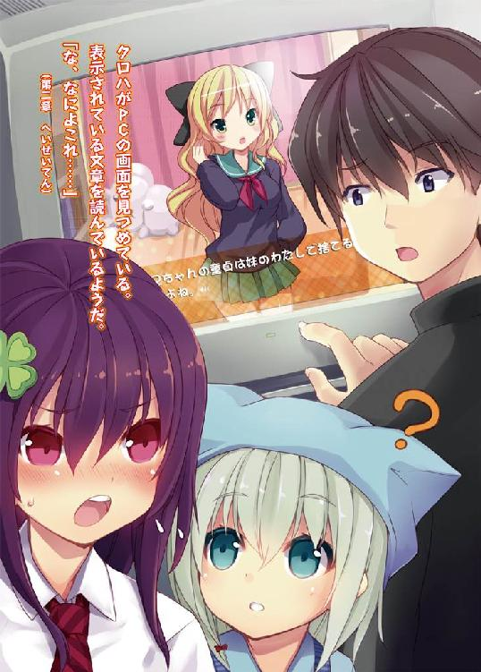
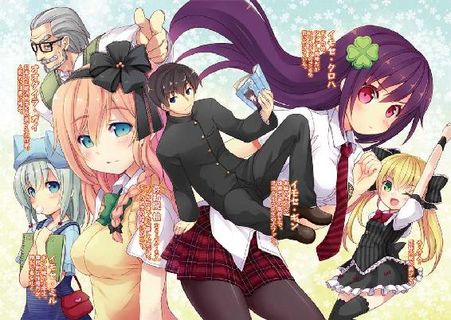
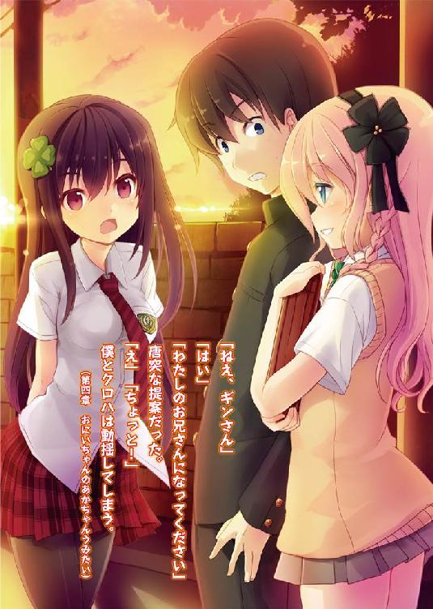
ＨＪ文庫
僕の妹は漢字が読める
かじいたかし
口絵・本文イラスト 皆村春樹
僕の妹は漢字が読める。
それは、とても凄いことだ。
僕はトウキョウ行きの電車に乗っている。窓の外に富士山がちらりと見えたが、一瞬で視界から消えた。猛烈な速度で走る現代の電車に、車窓の風景を楽しむ余裕はない。
視線を窓から目の前に移す。
向かい合わせのボックスシートに、髪の長い女の子が座っている。
妹のクロハだ。
クロハは熱心に本を読んでいる。
何を読んでいるんだろう？ 本の表紙を確認する。
『携帯小説全集十一 ☆→イケメン男子と恋スルアタシ←☆ 原文版』
......うわあ。
相変わらず難しそうなの読んでるなあ。
表紙に書いてある漢字は読めなかったが、添えられているふりがなでどんな本かわかった。近代文学の原文版だ。漢字がたくさん使われている昔の小説だ。
「......なに？」
僕の視線に気づいたクロハが、本から顔を上げた。目力のあるぱちっとした目で、僕を見据えている。
「そんな小難しい本を平気で読んでるから。クロハはさすがだなあと思ってね」
「携帯小説は、近代文学のなかでは入りやすいほうよ」
「いやあ、普通の人には無理だって」
僕は返事をしつつ、あらためてクロハを見た。
まず目に止まるのは、櫛目の通った長い黒髪だ。ツヤがあってさらさらしている。顔は、目頭がくっきり切れ込んでいて、眉から鼻にかけて芯が通っている。兄の僕が言うのもなんだけど、隙のない美貌だ。
首より下を見ると、スリムで均整のとれた体を、オールド・スクール・スタイルで包んでいる。白いブラウスにネクタイ、チェックのスカート──昔の高校生ふうコーディネートだ。流行の平成テイストらしい。
両足に黒いストッキングをはいているけど、これは流行ではなく身につけなくてはならない事情がある。大した理由ではない。
年齢は僕よりひとつ下の十六歳だ。外見も中身も大人びているせいか、実年齢より上に見られることが多い。気にしているようなので「美人は年とってから若く見えるよ」とフォローすると、なぜか嫌な顔をされる。
クロハが再び本に目を落とした。
「漢字なんて、よく読めるね」
感心してしまう。
僕たちがふだん使う現代文では漢字を一切使わない。漢字は近代文──十九世紀後半から二十一世紀後半まで使用された──を最後に、役目を終えた。
「昔は読めるのが当たり前だったのよ」
「そうみたいだけどね。生活していて読む機会がないしな」
「文化を継承していくことも必要だと思うけど」
クロハはニコリともせず、そんなことを言う。
「お兄ちゃんも、多少は漢字読めたほうがいいわよ。時代ものを書くとき、雰囲気を出せるんじゃない？ ディテールって大切よね」
「今のところ、僕は現代ものしか書くつもりないからなあ」
時代ものだの現代ものだのなんの話かというと、小説の話だ。僕は作家志望で将来はプロの作家になりたいと考えている。
漢字の読み書きができれば、時代ものを書くうえでは確かに有利だろう。昔は日常的に漢字が使われていたわけだから、リアリティを出しやすくなるはずだ。
僕も漢字を覚えようと挑戦したことはあるけど、まるで歯が立たなかった。
会話が途切れると、クロハは再び本に集中した。僕は何をしよう？ 小説のネタでも考えようかな。
何気なく前を向くと、車内の壁に設置されているスクリーンが目に入った。ニュースのヘッドラインが流れている。
まほうしょうじょぞう◎はっくつ！
トウキョウで、二百年前に作られた等身大の魔法少女像が発見されたようだ。検査ののち、文化庁が保管するという。『魔法少女どえす』という作品の主人公で、ピンクのコスチュームが特徴的らしい。
「話題になってた魔法少女像が見つかったらしいよ。五百億円の価値があるって」
「そう」
クロハは本に目を落としたまま、気のない返事をした。五百億円級の文化財だというのに、あまり興味がないようだ。
続けて次のヘッドラインが表示される。
うすび→ホミュラしょうのこうほ！
......なんだって!?
目を疑ってしまった。
ホミュラ賞といったら、日本で最も権威のある文学賞だ。あんな作品──『うすび』が候補になるなんてどうかしている！
「ちょっと。お兄ちゃんどうしたの？」
クロハが怪訝そうに僕を見上げている。
「え？ ......あ」
僕はいつの間にか立ち上がっていたようだ。我に返って腰を下ろす。
「『うすび』がホミュラ賞の候補になったらしいんだ」
「私も読んだわ。最近、話題になっているみたいね」
「あの作品はホミュラ賞にふさわしくないよ」
『うすび』とは、斬新さが話題になっている小説だ。
何が新しいかというと、まずは文章だ。☆や！や＠といった記号がひとつも使われていない。現代の日本語としてはずいぶん冒険している。
ストーリーも挑戦的だ。主人公の中年から老年にかけてを淡々と書きつづっている。展開に起伏がなく、ずっと日常の話が続く。テーマは「老い」だ。美少女も美幼女も美熟女も登場せず、パンチラもない。
現代の文学作品としては邪道だと思う！
「僕はやっぱりオオダイラ先生の『いもうと すた☆あ』が受賞するべきだと思うね」
「あれね。典型的な『正統派文学』よね」
そうだよ。『正統派』だ。ホミュラ賞は、『正統派文学』がとるべきなんだ。
しかし、クロハは渋い顔をしている。
「『いもうと すた☆あ』じゃ駄目だって言うのかい？」
「駄目とは言わないけど、ワンパターンじゃない？ いつものオオダイラ作品でしょ。主人公に義理の妹ができてっていう」
......僕はまた立ち上がってしまった。今度は意図的に立った。
「それがオオダイラ作品なんだよ。正統派を侮辱しないでくれ！」
クロハはわずかに肩をすくめた。こういうときはその整った顔が憎たらしい。
「『いもうと すた☆あ』は今までにない趣向が凝らされていたじゃないか。例えば妹が大昔の決闘作法──野球拳を挑まれて、大ピンチのシーン。逆転の発想で先に全裸になる。意表をつかれたよ」
「なんでいきなり服を脱ぐの？ そもそも、野球拳を挑まれる展開が謎だわ。道を歩いていて突然によ？ 必然性がないじゃない」
はあ。嘆かわしい。
「クロハ、お前は頭がいい。だけど、文学を理解する心はゼロだ。正統派といったら無意味な脱衣シーンがあってこそだろ。野球拳は脱衣シーンを書くための辻褄合わせだよ」
「斜めに読んでも、横に読んでも、どこをどう読んでも辻褄が合ってないわよね」
「細かいことを気にしすぎだ。野球拳をして服を脱ぐことが重要なんだよ。正統派文学とはそういうものなんだ！」
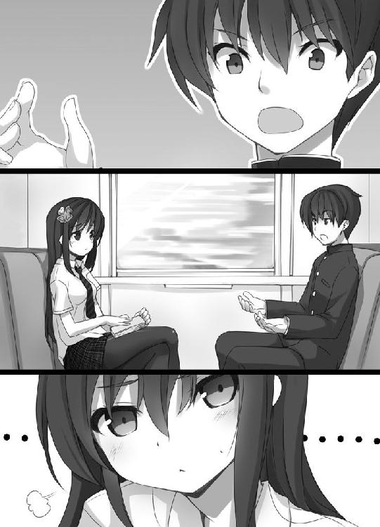
「......わかる人だけが喜べる妄想電波よね」
「な、なんということを！」
クロハの暴言におののき、僕はぺたんと腰を下ろしてしまった。
「まったく！ クロハは先生への尊敬が足りないよ。どうして今日ついてきたんだ？」
僕たちがトウキョウ行きの電車に乗っているのには大きな目的がある。
大作家、オオダイラ・ガイ先生に会うためだ。
オオダイラ先生は僕が最も敬愛する現代作家である。
２１３２年生まれの七十歳。今年でデビュー五十周年のベテランだ。本を出せば全てが記録的ヒットという日本文学界のトップランナーで、海外にも熱狂的なファンが多い。世界でいちばん読まれている現代作家と言われている。
平凡な高校生の僕が会える相手ではないが、出版社に就職した親戚が機会を設けてくれた。トウキョウにある先生の自宅で会えることになったのだ。
はじめは僕ひとりでトウキョウに行く予定だったが、妹のクロハもついて来た。特に先生のファンでもないだろうに。なんでだ？ 有名人に会いたいだけか。
「僕ひとりでも良かったんだぞ」
「予定が空いていたのよ」
「予定が......もしかして友達いないのか？ よし、僕がお前の教室に行って、クロハをよろしくとクラスメイトにふれ回ってやろう。声の大きさには自信あるしな」
「......絶対やめて。そんなことされたら、お兄ちゃんも私も死ぬわよ」
「死ぬ？」
「私は社会的に死んで、お兄ちゃんは医学的に死ぬ」
「なんで僕が医学的に死ぬんだ？」
「私が殺すからよ！」
怖いこと言うなあ。
「友達くらいいるから、おかしなことしないでよ」
「なら友達と遊べばいいじゃないか」
「私なりのプライオリティがあるのよ」
「プラ......？」
「優先順位」
「む、難しい言葉でお兄ちゃんをごまかすのはやめなさい」
「わかりやすく言ったつもりだけど」
いやいや、ちっともわかりやすくないよ。現に僕はよくわかってないぞ！
クロハは「もう」と不満そうにつぶやいて、言葉を続けた。
「お兄ちゃんがオオダイラ先生に失礼なことをしないか気になるもの。おもりよ、おもり」
おもりだと!?
......なるほど。クロハなりに僕を気にしてくれてるんだな。
「そうか。クロハから見れば僕はまだまだ子供なんだろうな。ありがとう」
僕は感謝の気持ちをこめて、本を持つクロハの両手をつかんだ。
「ちょ、ちょっと。やめてよっ！」
クロハは慌てて手を引いた。
「もっと先生の作品にはまりこんでくれると、お兄ちゃんとしては嬉しいけどね」
「オオダイラ作品って義妹とのラブコメばかりよね。それって、その......」
クロハは指を長い黒髪にくるんと絡めている。照れたときにする癖だ。
うーむ。クロハが何を考えているのかよくわからないが、僕は思うことを素直に言う。
「義妹って、いいよな」
「う、うん」
クロハはなぜか下を向く。
「二次元のな」
「......」
顔を上げたクロハは、目つきが悪くなっていた。
「呆れる。お兄ちゃんの境遇でよく義理の妹がどうとか言えるわよね」
──僕の境遇、か。
だからこそ、感情移入できるんだけどなあ。
僕が何も答えないでいると、クロハが申し訳なさそうな顔になった。
「ごめんなさい......。無配慮な発言だったわ」
「気にしなくていいよ。それより、もうそろそろ着くぞ」
車内アナウンスが、間もなくシナガワ駅に到着すると告げていた。あと少しでオオダイラ先生に会える！ 僕は興奮のあまり体がふわふわした感覚になった。
シナガワで降りた僕たちは電車を乗り継ぎ、オオダイラ先生の自宅へ向かった。
先生宅の最寄り駅は私鉄沿線のネリマという駅だ。
ネリマ駅に到着し外に出ると、ロータリーの向こうにでかでかと政府の看板が出ていた。現在の総理大臣である二次元美少女、ニャモちゃんのイラストが描かれている。くりくりの目がかわいい。
ニャモちゃんは七代めの二次元総理だ。国民の実妹という設定のため、実妹好きから圧倒的な支持を受けている。義妹派の僕だってニャモちゃんは大好きだ。
看板のすぐ下にある電光掲示板には「にっぽんをげんきに！」とニャモちゃんのメッセージが表示されていた。
さて、駅の近くに先生の家があるらしいけど......。僕はあたりを見回す。
すると、街の一角にそびえ立つ白亜の豪邸が目に入った。あった。あれが先生の家だ！
ごくりと喉が鳴る。さすがに緊張してきた。粗相のないようにしないとな。僕は慌てて襟元をしめる。
ふと、今日の服装について気になった。
僕もクロハ同様オールド・スクール・スタイルなのだが、クロハとはテイストが異なる。ガクセイフクと呼ばれる、黒いジャケットとズボンを着込んでいるのだ。
ガクセイフクは昭和の時代、作家を志す知的な青少年が好んで着用したという。
「クロハ、僕の服、先生に対して失礼じゃないかな。知的でクールすぎないか心配だ」
「......。安心して。お兄ちゃんは何を着ても知的でクールには見えない。ほど遠いから」
「なら良かった」
ホッとした。
先生の邸宅に近づくと、白い外壁にイラストが描かれているのがわかった。
女の子だ。ひとり、ふたり......二十人いる。全員、小学生くらいの容姿をしている。どの子にも見覚えがあった。
妹だ。
先生はデビュー以来、一貫して低年齢の妹ものを書いている。二十人の女の子は各作品のヒロインだ。
「クロハは何人わかる？」
「見分けがつくかってこと？ 『いもうと すた☆あ』のリンはわかったけど......」
「勝った。僕は全員わかる」
僕はオオダイラ信者だ。どのイラストがどのヒロインか、当然のようにわかる。
「みんな同じに見えるわ」
甘いなあ。
確かにどの子も小学生で、ヘアスタイルはツインテール、かわいらしいリボンを頭につけ、凹凸のない幼児体型だ。似ていると言えば似ている。
だが、よく見てほしい。ひとりひとり個性がある。口元にほくろがあったり、髪の毛が一センチ長かったり、つけているリボンの色が違ったり。僕に言わせれば完全に別人だ。
「見た目だけじゃなくて中身も一緒よね」
それは大きな間違いだぞ。中身の共通点なんて......甘えたがり、寂しがり、恥ずかしがり、強がり、やきもち焼き、ドジっこ、おねしょ癖あり、たまに不思議発言、そして、お兄ちゃんが誰よりも好き。せいぜいこの程度だ。
先生だって、決してヒロインに自分の理想を投影しているわけじゃない。毎回毎回きちんと別の人間性をもたせている。
「ヒロインが似ているから、代わり映えしない作品に感じるのかしら」
こいつ！ いつか、その舌禍で身を滅ぼすぞ！
ヒロインはともかく主人公は作品ごとにぜんぜん違うじゃないか。妹はどの作品でも十歳だが、主人公は先生の年齢に合わせて高齢化している。最新作の『いもうと すた☆あ』では七十代だった。
妹が主人公に入れ歯をはめこんであげるシーンとか、最高に感動するだろ！
「キャラクター単体じゃなくて、主人公と妹の関係性に注目するんだよ」
「はいはい」
なんだ、その呆れたようなそぶりは。あんまりお兄ちゃんを馬鹿にしていると、さすがに怒っちゃうぞ！
「......何者かね？」
それが、玄関から顔を出した先生の第一声だった。うろんな目つきで僕を見ている。
本物だ。本物のオオダイラ・ガイ先生だ！
著者近影と変わらない容貌だ。頭は白い総髪で、顔には立派なあごひげを生やし、クラシカルな黒ぶちメガネをかけている。レンズの奥にある瞳はきりっと凛々しい。
「はじめまして。イモセ・ギンです」
僕はフルネームを名乗った。すると、先生はあごひげをさすりながら視線を斜め上に向け、考え込むような表情になった。
「今日、来客の予定なんてあったかね......？」
そんな！ きちんと話が通っていないのだろうか。
先生は疑わしい顔で僕たちを見ていたが、
「ん、ちょっと失礼」
眉根を寄せると、耳に手をあてた。誰かの言葉を聞いているのか、フムフムとうなずいている。耳の中に小型の通話装置をつけているのかもしれない。
「いやあ、すまんね。わたくしは忘れていたが、妹が覚えていてくれたよ。そうだ、今日だったね」
先生は穏やかな笑みを浮かべ、両手を軽く広げた。歓迎してくれるようだ。良かった。
「こっちは、妹のクロハです」
僕は体を横にずらし、後ろに立っているクロハを紹介した。
「はじめまして。クロハといいます」
「......ほう。妹」
先生の目がすーっと細くなる。
「もちろん血の繋がった妹だろうね？」
僕は息を呑んだ。
先生はどうしてそんなことを訊くのだろう。実の妹か、だって？ それは──。
「違います。クロハと僕は義理の兄妹です」
そう。僕とクロハは血の繋がりがない。僕は生まれてすぐ産みの親から里子に出され、今の両親に引き取られたのだ。あまり人には言いたくない生い立ちだ。
「......義理の妹だと」
先生が唸るような声を出した。
あれ。どうも先生の様子がおかしい。肩がぷるぷると震えている。
「『義妹のオオダイラ』と呼ばれるわたくしに、義妹を連れて会いに来たというのか......」
先生は仇でも見るような目で僕を睨みつけた。
「親同士が再婚したというパターンかね？」
「いえ、僕が赤ん坊のとき、両親にもらわれたんです」
「なかなかレアなケースだな。妹ともさぞレアな関係になれそうだ」
「す、すいません」
僕は先生の迫力に気圧されて、反射的に謝ってしまった。
先生はハッとした顔になる。
「い、いや。申し訳ない。君にとっては決して羨むような生い立ちでないだろうな。どうぞ、入りたまえ」
先生は冷静になってくれたようだ。扉を開け、僕たちに中へ入るよう促した。
僕は挨拶をして、足を踏み出した。
「──待ちたまえ」
玄関に入る寸前、先生が低い声で僕を制止した。
「ひとつ確認したい。妹はひとりか？」
鋭い！ 先生の鋭さに身が震えそうになる。
「いえ、もうひとりいます」
「もうひとりの妹は何歳だ？」
「十歳です」
「じゅ、十歳!?」
先生の顔がくしゃりとゆがむ。
「もしかして、おねしょをした妹に頼られるなんてこともあるのかね!?」
「はい、あります。両親や姉に言うと叱られると思うらしくて......」
どがん！ と音がした。先生が玄関の扉を蹴りつけていた。
「おおおおおお」
先生の顔が赤々と染まっていく。湯気が出そうな顔色だ。
「十歳の妹のおねしょ！」
先生は涙をはらはらと流して、ポケットから何かを取り出した。携帯電話のようだ。
「もしもし、チョウマバヤシ君か。オオダイラだ」
呆気にとられる僕たちの前で、先生が誰かと話しはじめた。
「ひとり、赤ん坊まで戻してほしい男がいるんだが」
突飛な内容だなあ。
「ふざけたことに、義理の妹がふたりもいる男がいてね。ひとりは十歳らしい。悔しくて仕方ないんだ。そいつが赤ん坊まで戻れば、妹じゃなくて姉になるだろ」
先生の話を聞いて、僕はあっとなる。チョウマバヤシって、科学者のチョウマバヤシ博士か！ 前例のない実験を次々と成功させている天才だ。
先生は電話を切ると、薄く笑いながら僕を見た。目はまったく笑ってない。
「ギン君、人類初の体験ができるかもしれない。科学の進歩に貢献できるぞ」
人類初の体験！ 科学の進歩！
「クロハ......」
僕はクロハを見た。クロハは思わぬ事態についていけないのか、硬直している。
「僕は感動しているっ！」
途方もない経験ができそうだ。きっと、小説執筆の大きな糧になるはずだ。
「先生！」
僕は地面に這いつくばった。先生は伏して仰ぐべき存在だ！
「わたくしは友人がたくさんいるのだよ。各分野のトップがごろごろだ」
先生は泣きながら僕を睨む。
「政治家もいるから、義妹税を新設させてやる。未成年でも免除しない。義妹は贅沢品そのものなんだ。しっかり税金を取るべきだ」
「素晴らしいです。僕と先生が出会ったことで、社会の仕組みまで変わるんですね。まさに出会いが生んだ奇跡だ！」
「君、わたくしを馬鹿にしているだろう!?」
「まさか！ 感動しています。貴重な体験をすることで、新人賞に送る小説のネタもつかめそうです。ありがとうございます！」
「......新人賞だと？ 何を言ってるのかね！」
先生は怒気のこもった言葉を僕にたたきつけた。
「君はわたくしを怒らせた。出版社に決してデビューさせないよう言い渡してやる！ 作家への道は絶たれたと思いなさい！」
え......。先生の言葉を脳内でリピートする。「作家への道は絶たれた」......？
知らないうちに先生の機嫌を損ねていた！ 先生の権威は文学界にとどろいているから、僕のデビューを阻止するなんて簡単だろう。このままじゃ作家になれない!?
僕が呆然としていると、
「お待ちください！」
クロハが慌てて地面に這う僕の前に立った。長い黒髪が揺れる。
「お怒りのところ失礼します。これをご覧ください」
クロハが携帯電話を取り出し、ディスプレイを先生に向けている。
「妹のミルです」
言葉から察すると、先生に下の妹、ミルの写真を見せているようだ。
「もしもお怒りを鎮めていただけるならミルをお連れして、オオダイラ先生をこう呼ばせます──お兄ちゃん、と」
クロハがそう言った瞬間、先生の動きが止まった。
「ほう......」
先生がうっとりと笑う。
「お兄ちゃん、いい」
先生が口を半開きにした。よだれがじゅるっと垂れる。先生もいいお年だし、口元のしまりが悪くなっているのかもしれない。おいたわしや。
しばらくとろんとしていた先生だが、急に引き締まった顔つきになると、
「約束だぞっ」
クロハをぴしっと指さし叫んだ。
「ここで立ち話もなんだ。入りなさい。リビングで話そう」
先生は落ち着きを取り戻したようだ。僕たちにくるりと背を向け、家の中に入っていく。
ふう、どうやらピンチを切り抜けたようだ。助かった......。
「ありがとうございます──お兄ちゃん、立って」
立ち上がると、クロハが僕に近寄りそっと耳打ちをした。
「ミルを会わせるというのはその場しのぎだからね？ 本気にしないでよ」
「なんだって？ 先生を騙すのは良くないよ」
「ああでも言わないと先生は沸騰したままだったでしょう？ お兄ちゃんの夢が終わるところだったのよ。やっぱり、私がついてきて良かったわ」
そう言われると......先生が冷静になったのはクロハのおかげだ。ついてきてくれたクロハに感謝するべきかもしれない。
......。
あれ、何かひっかかるぞ。クロハがついてきたから......？
考え込む僕を置いて、クロハは玄関の中へ入っていった。おい！ 先に入るとはずるいじゃないか。先生を大尊敬する僕が先だろうに！
先生に案内されたリビングは白い壁に白いテーブルが置かれた、シンプルな内装だった。
僕とクロハは並んでソファに座る。
「ギン君は作家志望なのだね」
「はい」
僕は手にしていたバッグから、原稿の束を取り出した。
「実は、今日、作品を持ってきたんです。読んでいただきたくて」
「ふむ」
原稿を渡すと、先生はすぐに目を落とした。オオダイラ先生に自分の作品を読んでもらえるとは夢みたいだ！ 感想が気になる！
先生はしばらく黙読したのち、顔を上げて言う。
「──暗号？」
先生の顔全体に困惑の色がにじんでいた。
「全体的に支離滅裂だねえ。特に不可解なのはあちこちにある『￡』の記号だ。これはいったい何かね？」
「手を広げたヒロインが、楽しそうにダッシュをしている図です」
「......」
先生は言葉を失った。
「......ギン君はもしかすると時代を切り開く天才かもしれないな」
天才ですか!? や、やった！ あのオオダイラ先生に絶賛されたぞ！
僕が有頂天になっていると、
「すいません」
クロハが苦笑しながら頭を軽く下げた。え、なんで謝るんだ？
「のちほど最後まで読もう。読めればだが」
「ありがとうございます。それとは別に、小説のアドバイスをいただけませんか」
「ふうむ。アドバイスか」
先生は一瞬、考える仕草を見せ、テーブルの下から一枚の布を取り出した。
白いパンツだった。小さいリボンがついている。女物のようだ。
「これは何だと思うかね？」
「パンツです」
「そうだね」
先生はクロハのほうを向き「クロハ君はどう見る？」と訊く。
クロハは頬をひきつらせながら、
「私も女性用の下着だと思います」
「その通りだ。ふたりは事実を述べた。説明をした、ということだ。しかし、小説は説明だけでは面白みがない。小説は描写をしなくてはならない」
「描写、ですか？」
「ああ。パンツを見たままパンツと書かない。ぐっとくる表現をするんだ。わたくしだったら、白い小宇宙と書くね」
小宇宙！ その発想はありませんでした。
「日ごろから表現力を養いなさい」
言って、先生はパンツを頭にかぶった。
なんだ？ 脈絡のない行動に思えるけど......。
ああ、そうか！ 僕は気づいた。パンツをかぶったわたくしを描写しなさい──先生はそう言いたいんだ！
「わかりました。今すぐ描写を考えます！」
パンツをかぶった老紳士か。洒落ていて詩的なものがいいだろう。そうだなあ──。
「変質者」
横からクロハがぽそりと言った。
こらっ。変質者なんて失礼だろ！ それに、見たまんまの表現で味わいがないぞ。白い小宇宙にはとうてい及ばない。せめて頭に「比類なき」とでもつけなさい。
僕たちが頭をひねっている間、先生はパンツをかぶったまま、優しい顔で僕とクロハを見つめていた。
「それにしても、もらわれた兄と義理の妹か......まるで『おにあか』だねえ」
──おにあか。
正式なタイトルは『おにいちゃんのあかちゃんうみたい』という。
文豪クロナ・グラが２０６０年に発表した伝説的なベストセラーだ。妹ものの金字塔で、萌えの流れを汲む正統派文学を生み出した。研究家が言うには、文学だけでなく日本文化全体に大きな影響を与えたらしい。
僕の身の上は『おにあか』の主人公によく似ている。里子に出されたことや、義理の妹がいることだ。
「『おにあか』は僕が作家を目指すきっかけになった小説なんですよ」
「ほお！ そうなのかね」
僕は『おにあか』に並々ならぬ思い入れがある。子供の頃『おにあか』のおかげでもらわれた子という負い目を払拭できたのだ。初めて読んだとき、ヒロインのタイテイ・ホミュラが主人公に向ける愛情に心が震えた。世界に光がさしたような気持ちになった。
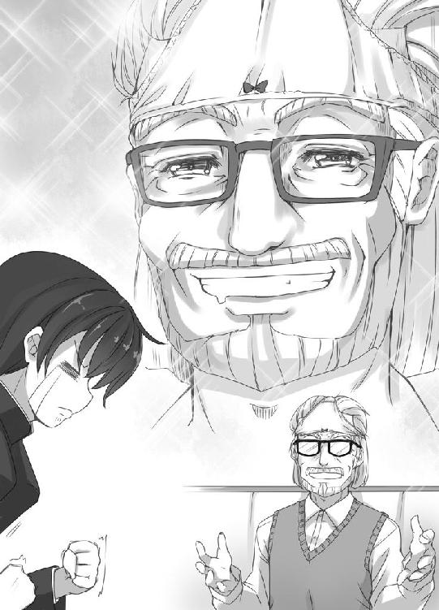
「ホミュラは僕にとって永遠のヒロインです」
「美しくて健気だものねえ。わたくしとしては、もう六、七歳若かったら嬉しいがね」
先生の目が細くなる。ちなみにホミュラは十六歳という設定だ。
「登場シーンがいいですよね。お兄ちゃんって現れた瞬間、風でスカートがめくれて」
「まずはいちパンチラ」
「そのあとも、ことあるごとにパンチラで。パンツの柄でホミュラの精神状態が表現されていたんですよね？」
「ああ。ただね、あの作品のパンチラには他の意味もこめられているんだよ」
「他の意味......ですか？」
「ホミュラのパンツは、当時の世相を表しているんだ」
世相？
「最初のパンチラのとき、ホミュラは真っ赤なパンツをはいていたろう？ あれは重税に苦しむ日本国民の心情を表現している。作者のグラは訴えたかったんだ。国民が血を流して苦しんでいるぞ、とね」
知らなかった！ 悔しい。僕の読解力はまだまだのようだ。
「普通の読者はそこまで読み解く必要はないよ。ホミュラかわいい。それでいいんだ」
僕は作家を目指す人間です。普通の読者で満足するわけにはいきません！
「クロハ。いいこと聞いたな！ お前も『おにあか』を読みなさい」
僕は勢いこんでクロハを見た。大好きな『おにあか』の新しい読み方を提示され、気持ちがたかぶったのだ。
「そうね」
しかし、クロハの反応はクールだった。
クロハは読書好きなのに『おにあか』を読んでいない。読みたくない理由でもあるんだろうか？ もったいないことだ。
「クロハ、お前はどうして『おにあか』を読まないんだ？ ホミュラ、最高だぞ」
「フィクションのキャラクターを最高とか、私にはわからないわ」
「ギン君がホミュラの良さを伝えれば伝えるほど、クロハ君は読む気がなくなるんじゃないかね」
クロハはムキになって「違います！」と言い返した。
「ははは。まあ、あの作品以降、いわゆる萌えの文化がさらに加速したね」
いまや日本といえば萌えの国だが、昔はそうでもなかったらしい。
「だが、ここのところ妙なものがもてはやされている」
笑っていた先生が、急に顔をしかめた。
「君は読んだか？ 『うすび』」
ああ。やっぱり先生も、『うすび』を苦々しく思っているんだ。
「読みました。新しいとは思いますけど......」
「女性キャラがひとりも出てこないからねえ。パンチラや脱衣シーンがない。『うすび』の作者にはこの言葉をたたきつけたいね。──パンツあらんずば文学にあらず」
先生が憤っているのがわかった。当然だろう。
「よりによってホミュラ賞にノミネートされるとはね......」
ホミュラ賞は『おにあか』のヒロイン、タイテイ・ホミュラの名が冠せられた、日本で最も格式のある文学賞だ。出版済みの作品が対象で、代々、正統派と呼ばれる萌え系の作品がノミネートされてきた。それが、今年は『うすび』のような、奇をてらった作品が候補に紛れ込んでしまったのだ。
先生と僕は文学人だからついつい嘆いてしまう。だが、文学人でないクロハは、
「私は美少女がパンツを見せない文学作品があってもいいと思いますけど」
無粋なことを言う。
「ほう。では、クロハ君は『うすび』がホミュラ賞にふさわしいと言うのかね？」
「そこまでは言いませんが」
「わたくしはね、受賞を争うライバルはハルカ君の『いもうとはひとりでトイレにいけない』だと見ている」
ハルカ君とは大物作家のハルカ・ハルカ先生のことだ。妹ものでは先生と双璧で、それぞれ『義妹のオオダイラ』『実妹のハルカ』と呼ばれている。
『いもうとはひとりでトイレにいけない』は昔ふうのタイトルとは裏腹に、いかにも現代的な小説だ。ヒロインがおしっこを我慢する姿を、読みやすい文体で活写している。
「クロハ君はあの作品をどう読み解いたかね？」
「......」
クロハは黙り込んだ。決まりの悪い顔をしている。
僕はクロハがすぐに答えられない理由がわかった。
「『いもうとはひとりでトイレにいけない』って、小さいときのクロハだよな」
「......っ！」
クロハが顔に羞恥の色を浮かべ僕を睨みつけた。
昔を思い出す。幼い頃のクロハはひとりでトイレに行けなかった。お母さんやお父さんが家にいないときは「お兄ちゃんいっしょにきて」と、しょっちゅうトイレの前までつきあわされた。
「クロハは、今はすましたふうですけど、昔はかわいいところもあったんですよ」
「うるさいわね。どうしてそう余計なこと言うのよ！」
クロハは熟れたトマトみたいに顔を赤くして、僕をなじった。
「感想を言います！ あの題材で一作書き上げてしまう筆力には脱帽しました。ただ、非常に先鋭的で人を選ぶと思います」
「あの作品はもはや哲学だね。狂気を宿した昔のハルカ君が戻ってきたな。懐かしい。彼とは若い頃、シンジュク・ゴールデン街の文壇バーでしょっちゅう喧嘩をしたものだ」
実妹好きと義妹好きは意見の相違から、文芸誌でいつも論争をしている。オオダイラ先生とハルカ先生もデビュー当時は犬猿の仲だったようだ。
オオダイラ先生としては、賞レースでハルカ先生に負けたくないだろう。
「受賞は先生の『いもうと すた☆あ』で決まりですよ。候補作のなかで正統派らしい正統派は先生の『いもうと すた☆あ』だけですから！」
「ありがとう。あれはわたくしとしても自信作でね。妹たちも出来がいいと褒めてくれてるんだ」
先生の言葉にクロハが怪訝な顔になった。
「先ほども気になったんですが、先生には妹さんがいらっしゃるんですか？」
「うむ、いるよ。二十人ほどね」
「......え？」
「ここに住んでるんだ」
先生が側頭部をつんつんした。
「デビュー作のアズから、最新作のリンまでね」
そう言うと先生は耳に手をあてた。妹の言葉を聞いているのだろう。
先生は以前、妹たちとはよくコミュニケーションをとるとインタビューで答えていた。こういうことなのか！
「おやおや、アズが嫉妬しているね。美人にデレデレするなとさ。クロハ君のことだよ」
「は、はあ......」
クロハの顔がやや青ざめた。
「アズは五十年も妹をやっているのに、未だにわたくしを理解してないんだ。困った子だよ。高校生は範囲外に決まってるじゃないか」
「念のため確認します。私のような子供は相手にできないということですよね？」
「逆、逆。クロハ君じゃ老けすぎ」
「私は老けてません！」
そんなにイラつくんじゃない。先生は大人びた美少女だと褒めてくれてるんだよ。
先生はまた耳に手をあてた。にこにこ顔で何度もうなずいている。
「ん？ しーしーしたくなったか。トイレ行こうな」
先生は立ち上がった。
「パンツとりかえようか」
リビングを出て行きながら、かぶっていたパンツを脱いでいる。
先生がいなくなると、クロハが疲れた顔を僕に向けた。
「......お兄ちゃん、先生の妹は常に十歳という設定よね？」
「ああ。みんな十歳だぞ」
「十歳の子にしーしーって......」
「それがいいんじゃないか。これが二歳児だったら当たり前すぎるだろ？ 微妙なズレが個性になるんだよ」
「......。お兄ちゃんの目から見て、オオダイラ先生ってどうなの？ 今の言動とか」
妙なことを訊くやつだな。先生はどう見ても、
「変態」
クロハは安心したような顔になる。
「そうよね」
「──的な天才」
「は？」
「変態は褒め言葉だよ。先生の創造性は絶対に見習わないといけないね」
「絶っっっっっっ対に見習っては駄目！」
クロハがつかみかかる勢いで、僕に迫った。
「いい？ お兄ちゃんはお兄ちゃんなんだから。コピーじゃなくてオリジナルを目指して。そのほうが素敵だと思う」
うーん、そうか。確かに高い志をもつべきだよな。
「わかったよ」
僕がそう言うと、クロハは安堵の息をついた。そんなに僕のことを案じてくれているのか。嬉しくて胸が熱くなりそうだ。
それから、僕とクロハは特に会話もなく先生がトイレから戻るのを待った。先生がなかなかリビングに姿を現さない。
「お兄ちゃん、『おにあか』って作者の死後に評価されたのよね」
退屈したのか、クロハが口を開いた。
「そうらしいね」
「先生がさっき言ってた、パンツの柄が日本の世相を表していたとか、本当なのかしら。深読みしてるだけなんじゃないの」
「クロハ」
思いのほか低い声になった。
「あのオオダイラ先生が言ってるんだぞ？ 赤いパンツは国民の血の色。そう読めるんならそうなんだよ」
「いまいち納得いかないのよね」
「お前はなんでも疑ってかかるよなあ」
そんな態度じゃ友達に嫌われるぞ。心配だ。兄として、クロハをもっと素直な人間に導く必要があるかもしれない。
僕がクロハを諭そうとすると、先生が戻ってきた。パンツはもうかぶっていない。
「すまん、待たせたね」
先生は手に紙の束を持っていた。あれはなんだろう？
「今日はいい日だ。特別に新作を読ませてあげようと思ってね」
「新作！ いいんですか!?」
「ああ。まだ完成していないけどね。冒頭部分だけで良いなら」
「ぜひ読ませてください！」
先生の新作を八千万の日本国民に先がけて読める！ 幸運なんてものじゃないぞ！
「次はね、時代ものなんだ」
先生は得意げだった。
「時代もの、ですか？」
「ああ。舞台は二十一世紀初頭、平成の時代だよ」
先生はソファに座り、僕に一枚の原稿を渡してきた。
平成──。日本史のなかでは、わりと平穏な時代だ。
日本が世界規模の戦争に参加した昭和や、維新のあった幕末などと比べると、少し地味かもしれない。もちろん何もなかったわけではなく、大きな天災にみまわれたり、経済不況に陥ったりしたけれど、日本の復興は早かった。
落ち着いた平成の時代を舞台に選ぶということは、有名な事件や偉人に頼らない、文学性を前面に打ち出した一作になりそうだ。名作の予感がする。
僕はどきどきしながら原稿に目を落とした。
「遅刻だ、遅刻～」
清は急いでいた。
ゆうべ、夜遅くまで動画サイトを見たのがまずかった。
すっかり寝坊してしまった。
新学期そうそう、遅刻は良くない。
全力で走る。
公園をショートカットし、大通りに出た。
そのとき。
同じように走ってきた少女とぶつかった。
「うわあ」
「きゃあっ」
倒れたはずみで少女のパンツが見えた。
空色だった。
清は慌てて、目をそらす。
「......いつつつつ」
「大丈夫？」
清が手をさしのべると、少女が驚きの顔になった。
「お、お兄ちゃん......」
「えっ」
清はひとりっ子だ。妹はいないはずだ。
「痛いよう」
少女がお尻をさすっている。ぶつけたようだ。
「なめましょうか？」
清が提案する。傷は舐めればなおるはずだ。
「けっこうです」
少女がつれなく断る。
清は肩を落とす。
ではせめて、お尻を舐めまわすところを夢想しよう──。
なっ......！
一読し、僕は驚愕した。
「先生......」
先生は悪戯っぽい笑顔だ。
これが先生の新作なんて嘘だろう？
だって、この文章は──。
「読めません」
漢字が多すぎる。
物語の舞台が平成時代というだけではない。これじゃあ平成時代に書かれた小説そのものだ！
現代人には理解できっこないですよ！
「ふはははっ。ちょっと戯れがすぎたかね」
「この文章、先生がお書きになったんですか？」
「もちろん」
凄い......。先生は漢字が読めると聞いていたが、書くこともできるのか。近代文で小説が書けるとは、ただの作家じゃない。言語の研究家としても一流だ。
「先生はどうやって漢字を覚えたんですか？」
「近代文学を読みたくて勉強したんだ。ちなみに初めて覚えた漢字は『身体測定』だ」
シンタイソクテイ......。どんな漢字だろう？ 発音を聞くだけで頭痛がしそうだ。
「先生は今後、近代文で小説を書かれるんですね」
「まさか。これはあくまで遊びだよ。時代の雰囲気を出そうと思ったら、筆が乗ってつい近代文学そのものを書いてしまったんだ」
なんだ、そうなんですか。
「本物は別にある」
先生はもう一枚、原稿を僕に渡した。こちらは現代文で書かれているようだ。
今度は正真正銘、先生の新作だ。
「君が最初の読者だよ」
光栄だ。
光栄すぎる！
僕は感激で泣きそうになる。でも、まだ涙は我慢しよう。せめて原稿を読んでから感涙しよう。
胸いっぱいの気持ちになりながら、僕は原稿を読んだ。
でたひと→きよし
きよし「おくれちゃうにょ」
どうがサイトみてたら ねぼすけ ←だめっこ
いきなりちこくは やばっ
こうえんぬけたら
おなのことごっつん☆
きよし「うあっ」
おなのこ「みゃあっ」
わわわ でんぐりがえっておぱんちゅ きらり☆
きらっ きらっ
きらり☆
おぱんちゅ→おそらいろ
きよしっこ てれっこ
おなのこ「いたいたいた」
きよし「おててどうぞ」
おなのこ びっくり
おなのこ「お、おにいにゃん」
きよし「えっ」
きよしっこはひとりっこよ？ いもうとなしにょ
おなのこ「いたいた」
おなのこおしりごつんした さすりさすり
きよし「ぺろぺろすりゅ？」
なめなめしたら なおるはず
おなのこ「やっ」
きよしっこ がくり
きよしっこ ぺろぺろしたいの ←かんがえちゅ◎
おしり ぺろぺろ
ぺろっ ぺろっ
ぺろり☆
──涙を堪えることができなかった。
オオダイラ作品の最初の読者になれた。それ自体、夢のようなことだが、内容そのものに感動した。
端正なオオダイラ文体が心地いい。これはもう、目から摂取する栄養だ。
一ページめで妹が登場し、すぐにパンチラという文学性あふれる展開がまた胸に響く。正統派文学の王道だ。
目を見張ったのはパンツがちらりではなく、きらり、という表現だ。
平成時代にはまだ護身用の発光パンツは開発されていないから、物理的に光るはずがない。でも、先生は光ったかのように書いた。先生言うところの小説的な描写だ。
これは、妹が主人公にとって希望の星になると暗示しているのだろう。もしかすると、社会的なメッセージもこめられているのかもしれない。
泣くなんて恥ずかしいけど、下手な言葉より先生に僕の気持ちが伝わるだろう。だから、遠慮せず涙をこぼそう！
これだ。
これこそが、先生の文学だ！
「『きらりん！ おぱんちゅ おそらいろ』」
先生が唐突にそう言った。
「え？」
「新作のタイトルだよ」
僕も泣きながら口にする。
「『きらりん！ おぱんちゅ おそらいろ』」
重厚だ。
今までの作品よりシリアスな作風になるのかもしれない。冒頭のシーンからもそれはうかがえる。
僕の直感が言う。
この作品で先生は神になる！
「私にも読ませて」
僕が感動にうち震えていると、クロハが原稿を奪い読みはじめた。
クロハ、泣いてもいいんだぞ？
しかし、読み終えたクロハはピンとこないのか、いたって冷静だった。
「既存作と同じくパンチラからスタートしますが、違う展開は検討されないんですか？」
「クロハ君、わたくしに水を飲むなと言うのかね？ 空気を吸うなと言うのかね？」
「質問の答えになっていませんが」
「そう言いたくなるほど、小説冒頭のパンチラは不可欠なのだよ。パンチラから物語に入らないと、わたくしのやる気が一文字ぶんも出ないからね」
「......訊いた私が馬鹿でした」
クロハ、その反応はなんだ！ いけない。このままじゃクロハが無感動な大人になる！
決めた。帰りの電車で、クロハにオオダイラ作品の魅力を教えこむ。えんえん語ってやる。まずは、各ヒロインが好むパンツの柄について教えてやるぞ！
＊
二二〇二年 五月一日 記す
我輩について余人に多くを語ろうとは思わない。只、世を憂う者である。
人は誰しも生きるための寄る辺をもつ。我輩にとっての寄る辺は文学であった。弱年より活字と戯れ、分別のわかる頃には箸を取るより筆を執ることを好んでいた。
行く行くは父祖、冬耳虎彦のような、端麗な文体の小説で世に出るはずであった。我輩ほどの才気があれば、容易いことであった。
だが、日本の文学が死んでいた。
文学の惨状は心得ていたものの、腹の何処かで、正しい文学は此の国にまだ火を残していると思っていた。日本人の良心に縋りたかった。
我輩は一握りの希望を抱き書店へ向かった。日本文学で最も権威のある某賞の候補作を確認するためだ。砂粒ほどでいい。我輩が共感でき得る表現や思想を見出したかった。
オオダイラ・ガイの『いもうと すた☆あ』、ハルカ・ハルカの『いもうとはひとりでトイレにいけない』、ヌシサマの『あねだるま』、トップオブトップの『そうかん！ ようじょぶんこ』、コグレ・サクの『うすび』。全て通読した。
読後、我輩の胸に去来したものは絶望だけであった。
何れも読むに堪えない。塵ほどの価値もない。下劣の極みであった。『うすび』だけは趣きの異なる一作であったが、我輩の志す文学とは埋め難い隔たりがある。
我輩は悟った。当世の文学界に、我輩の居場所はない。
父祖である虎彦が明治から大正にかけて書きつらねたような文学は滅んだ。華麗な文章も、雄渾な物語も消えた。日本人は堕落し、言語は断絶され、文化も腐り果てた。
何もかも、遠い歴史の彼方に失われたのだ。
我輩は独り、酒を呷って涙を零すしかなかったのである。
オオダイラ先生と出会ってから一ヶ月が過ぎた。
あれから僕は小説を一作書き上げ、新人賞に送った。五度めの挑戦だ。
僕が『おにあか』に心を揺さぶられたように、大勢の読者の心を動かしたい。たくさんの人に勇気を与えたい。その気持ちはオオダイラ先生に会ってますます強くなった。
先生とはメールをやりとりする仲になれた。多忙な先生がきちんと返事をくれるなんて幸せなことだ。
メールの話題はほとんど下の妹、ミルについてだった。好物やスリーサイズ、おねしょの頻度などをこと細かに訊かれた。キャラクターづくりの参考になったのなら嬉しい。
先生はしきりにミルと会いたがっていた。僕もすぐにミルを連れて行きたかったけど、なかなか先生のスケジュールが空かなかった。小説の執筆だけでなく、インタビューや講演の仕事が詰まっていたのだ。
しばらくは会えそうにないと諦めていたが、先生は強引に予定をずらし、僕たちのためにまるまる一日空けてくれた。
「もう辛抱できない」──先生はそう言っていた。
僕たちは最寄り駅への道を連れだって歩いていた。
僕の隣に、小さな女の子がいる。
下の妹、ミルだ。
その隣にはクロハがいる。ミルを真ん中に川の字で歩いている。
みんなでトウキョウに行く。
この前、先生に会ったとき、クロハがミルを会わせると約束した。ようやく約束を果たせる日が来たのだ。クロハは「その場しのぎと言ったでしょう！」とぷんぷん怒っていたが、先生を裏切るわけにはいかないじゃないか。
今日は先生のお宅にお邪魔するだけではない。先生がおすすめの歴史博物館を案内してくれるという。歴史にふれて小説のヒントが見つかるかもしれない。楽しみだ。
また先生に会えるのもミルのおかげだろう。僕はミルに視線を向ける。
ミルは十歳、小学四年生だ。年齢相応の背格好をしている。
身長は、頭のてっぺんが僕のみぞおちに来るくらい。お気に入りのネコミミベレー帽をかぶり、ワンピースを着て、小さめのバッグを斜めにかけている。
顔の印象は姉妹だけあってクロハに似ていた。表情が涼しげで、目や鼻といったパーツひとつひとつがくっきりしている。将来、相当な美人になるだろう。
ミルは歩きながら本を読んでいた。
「ミル、危ないわよ」
クロハが注意したものの、ミルは気にもとめない。本に夢中だ。
表紙を見ると女性の人物画が載っていた。本のタイトルは、
『ライトノベルひょうししゅう☆』
ライトノベルとは近代文学の一ジャンルだ。正統派文学に影響を与えたと言われている。ひょうししゅう、とあるので表紙絵の画集だろう。僕も美術の授業で見たことがある。
ミルが画集に目を落としたまま、クロハに声をかけた。
「ねぇ、憂鬱ってどういう意味？」
「気分が沈んでるという意味ね」
「召喚獣って？」
「そうね......。呼び出された動物かしら」
「大魔王っていうのは？」
「うーん......。悪い人の指導者とか」
ミルがあどけない顔でクロハを質問攻めにしている。
どうも、表紙絵に書かれた漢字を読んでいるようだ。
ミルは十歳児でありながら、多くの漢字を読みこなす。神童と言われたクロハよりも飲み込みが早い。イモセ家は代々、言語学者や翻訳家を輩出してきたけど、ミルはご先祖様たちと比べても際だった言語能力をもっている。
言語だけでなく絵画の才能もある。例えば、今眺めている画集のような人物画を描けと言えば、苦もなく描いてしまう。
末恐ろしい子だ。
それに比べて僕はどうだ。漢字も読めず、妹たちの話についていけない。凡人だ。
悔しくて、漢字の勉強をしたことは何度かあった。しかし、まるで理解できなかった。何百、何千という文字をどうやって記憶しろと言うんだ。読み書きできるのは天才だけだ。
僕にはイモセ家の血が流れていない。妹たちとは生まれもった頭脳が違いすぎる。
漢字なんて読めなくても日常生活に支障はない。ただ、妹たちと血の繋がりがないことを痛感してしまい、寂しい思いをした。
「にぃ、どうしたの？ こわい顔してる」
うっかり、自分の世界に入っていたようだ。険しい表情になっていたらしく、ミルが僕をじーっと見上げている。
「あ、ごめん」
「おんなにふられた？」
い、いきなり何を言うんだ！ 僕が返事に詰まると、ミルは肯定と受け取ったらしい。
「そのメス、しめよう」
ミルは無邪気だけど口が悪い。
クロハが「ミル、やめなさい」とたしなめる。
「ねぇも気になるはず」
「振ったとか振られたとかあり得ないわ。お兄ちゃんはそういうの縁がないから」
......。事実なので反論できないぞ。
「あわれなにぃ。いいものあげる」
ミルはバッグをまさぐると、白くて丸いものをつかみ取り、僕に渡してきた。
マシュマロだ。
「ねぇも、はい」
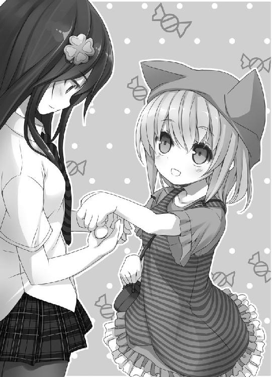
クロハにも渡している。
ミルはマシュマロが大好物だ。いつもマシュマロを持ち歩いている。ひとり占めせずにみんなで食べようとするあたり、優しい子だと思う。
「電車でたべる」
トウキョウまでは最寄り駅から二十分ほどだ。昔は新幹線で二時間もかかったようだけど、現代ではすぐにつく。みんなでマシュマロを食べていれば、あっという間だろう。
先生とは歴史博物館の入り口で待ち合わせた。
広い公園の中にその博物館はあった。大きい建物だ。二百年以上続く由緒ある博物館だという。お客さんがたくさんいた。
さて、先生はどこだろう？ 僕は先生の姿を捜すため視線を巡らせた。
いた。
つば付きの帽子をかぶりステッキを持っている。英国紳士ふうの装いだ。さらに、手に白い旗を持っている。先生は目印を持参すると言っていたけど、なるほど、あれはわかりやすい。
旗にはこう書かれていた。
お兄ちゃんは此処です！
お......ちゃんは......です？ 漢字の読める妹たちに向けたメッセージだろう。僕は考慮されなかったようで、ちょっと悲しい。
「先生とは他人のフリしていいかしら」
クロハがうんざりした様子で言う。なんで今さら他人のフリを？ 恥じらっているのか。
「先生ーっ！」
僕が手を振って叫ぶと、先生はこちらに気づいた。旗を放り出して近づいてくる。
先生に挨拶しようとしたものの、先生は僕の脇をすーっと通過していった。僕の存在など目に入っていないかのようだ。
先生は僕の後ろにいたミルの前で足を止め、
「うぉ、ぉぉぉ、うぉうぉぉ......」
声にならないうめきをあげた。
ミルはぽけっと口を半開きにして先生を見上げている。
「このじじい、だれ？」
ミル、じじいとは失礼だろ！ 僕は焦ったが、先生は気にしていないようだ。
「ミルちゃん、君は真ん中だよ。これでツインテだったら超ど真ん中だよ！」
「クロハ、何が真ん中なんだろう？」
僕が小声で尋ねると、
「......言及したくないわ」
クロハはジトッとした目で先生を見た。
よくわからないが、先生のことだから文学的な意味合いがあるんだろう。
「ミルちゃん、中に入ろっか」
「やめろ」
先生がミルの手をつかもうとすると、ミルは鬱陶しそうにはじいた。先生になんてことをするんだ！
僕は大慌てで謝ろうとしたが、先生は怒るどころか嬉しそうだった。
「ミルちゃんいい！ 無愛想な猫みたいでいい！」
興奮しているのか、先生の顔が茹であがるように赤くなっていく。
「もっとツンツンしなさい！ そっけない子を懐かせるのも醍醐味だからねえ！」
先生は言い放つと、小刻みに震えながら、お腹を突き出した。
「さ、さあ、ミルちゃん。お兄ちゃんと呼んでくれたまえ。そしてわたくしをつんつんするんだ。ツンツンした子にお兄ちゃんと呼ばれながらつんつんされる......た、たまらん」
ミルは不愉快そうな顔で先生を見上げていたが、好奇心を刺激されたのか、ボタンを押すようにぽつんと先生のお腹をつついた。
「あ、あ、あ！ きた、これはきた！ ......漏れちゃう、漏れちゃうおおおぉ！」
先生は白目をむいて、舌をだらーんと口の外に放り出した。凄い顔だなあ。耳や鼻から湯気がたちのぼっているように見えるけど、漏れるって蒸気ですか？
「......お兄ちゃん、ちょっと待ってて」
先生とミルの様子を見ていたクロハがそう言い残し、強張った顔で警備室のほうへ歩いていった。待っているとクロハと共に数人の警備員がやってきて、先生を連れていってしまった。
「クロハ、先生が警備室に！」
「ええ。あれほどの人とは思わなかったわ」
あれほどの人？ 意味がわからない......。
あ、そうか！ 先生ほどの有名人だとサインを求めるお客さんで大混乱になるから、警備室に身を置いたほうが安全というわけか。有名になるのはいいことばかりじゃないな。
博識な先生と一緒に博物館を見てまわりたかったけど、そういう事情なら仕方がない。僕たちだけで見学しよう。
「ミル、ごめんなさい。私が会わせると言ったせいで......怖かったでしょう？」
「ううん。馬鹿くさくておもしろいじじいだった。冥福いのろう」
先生はまだとうぶん生きていると思うぞ！
僕たちは館内に入った。
この歴史博物館では「へいせいてん」が催されているようだ。先生の新作も平成が舞台だし、世間では密かな平成ブームなのかもしれない。
一階からまわる。まずは平成の市民生活を紹介するコーナーだ。
フロアの真ん中にガラスで囲まれたステージがあり、民家の一部屋が模型で再現されていた。一分の一リアルスケールだ。「しょみんのへや♪」とプレートが掲げられている。
部屋の真ん中にメガネをかけた二十歳くらいの青年がたたずんでいる。彼が部屋の主だろう。実在した人物のデータを元に再現されているらしい。
「すごい、すごい」
ミルがガラスにおでこをくっつけて、食い入るように見つめている。
確かに、これは凄い。
とにかくリアル。
ロボット工学の先端技術が使われているようで、人形とは思えない。生身の人間みたいだ。家具も精巧な作りで、実物に見える。
「今とあまり変わらないのね」
クロハが感心したように言う。
そうだな。部屋の内装や青年の服装は、意外と古めかしくない。平成は洋装が定着している時代だから、現代と差がないのかもしれない。
「にぃ、ムダにいろんなものがあるよ」
ミルが部屋の中を指さす。女の子の人形や、女の子が表紙の本、女の子の描かれた箱などがたくさんある。女の子だらけだ。
「あれなに？」
ミルが部屋の壁を指さした。
絵画が貼られている。ミルらしく絵が気になるようだ。
女の子の全身が描かれている。頭に輪っかがあるから、天使だろう。体中にタコの足みたいな触手を巻いている。触手が窮屈なのか、女の子の表情は苦しげだ。
『魔界天使ジ●リール』と書かれている。カタカナは読めたけど、漢字はわからなかった。
天使に触手か。この絵はどこをどう見たって──。
「宗教画だ」
天使が描かれてるんだから、そういうことになる。
「おそらくこの部屋の主は敬虔なキリスト教徒だね。この時代は日本にも宗教が深く根付いていたのかもしれない」
「へー」
ミルは素直にうなずいたが、
「そうかしら」
クロハは疑いの顔をした。僕の見解に間違いはないと思うぞ！
「棚に飾ってある女の子の人形は聖母マリア像だね」
女性の形をした人形が何十体も並んでいる。
「ギターを持ってたり、斧持ったり、どう見てもスクール水着だったりするけど、マリア様なの？」
クロハの目が冷ややかだ。
「二百年くらい前だぞ。あれはスクール水着に見えるけど、違う何かなんだ。キリスト教徒の制服という可能性もあるだろ」
クロハは失笑していた。あ、僕のこと馬鹿にしてるだろ！
僕がクロハに文句を言おうとすると、ミルがクロハのスカートをくいっと引いた。
「ねぇ、あれ見て」
ミルの指さす先を見ると、床に転がる箱があった。イラストと一緒に文字が印刷されている。『痴漢者ト●マス』......なんとかトーマス？ 漢字の部分はわからない。
「ねぇ、痴漢ってどういう意味？」
「ええっ!?」
クロハは甲高い声をあげた。
チカンとは昔の言葉だ。言葉自体は聞いたことあるけど、意味は知らない。
「なあに？」
「え、ちょ、それは......」
「教えて」
「ううううううう」
クロハは困りきっていたが、きっとした顔になって「見てなさい」とミルに宣言した。何をはじめる気だ？
クロハは僕に近寄ってきて──お尻を撫で上げるジェスチャーを二回繰り返した。
「ミル、わかった？ これが痴漢よ」
......。こんなんで意味がわかるかなあ？ 僕は見当もつかないぞ。
ミルは僕とクロハの顔を交互に見上げていたが、冷静にこう言う。
「ねぇ、そういうのは痴女っていうんだ」
「なんで痴漢は知らないのに痴女は知ってるのよ！」
「ぱぱとままに教育された」
「お父さんとお母さんがそこまでオープンなわけないじゃない！ ......ミル、私のことをからかってるでしょう!?」
チジョとはいったい？ お父さんとお母さんにチジョを教わったってことは......。
「わかったぞ！ お母さんがチジョなんだな？ お母さん、若くて綺麗でいかにもチジョっぽいもんな。チジョ友もたくさんいそうだ。ミル、小学校の卒業文集に将来の夢はチジョと書きなさい」
「わかってないんだから、お兄ちゃんは黙ってて！」
クロハに怒られた。しゅん......。
ミルはチカンについてはどうでもよくなったのか、何かを物色するように視線をさまよわせた。
「ねぇ、次はあれ」
「今度はなんなのよお......」
ミルの視線を追うと、旧式のＰＣがあった。モニターに何かが映し出されている。
画面の中央に女の子の絵があり、下に文章が表示されている。漢字とひらがなまじりだ。その脇に英文で「ＬＯＧ」や「ＳＡＶＥ」、「ＳＫＩＰ」といった単語が並んでいる。
もしかすると昔のゲーム画面かな？
「ねぇも文字、読める？」
「ええ」
クロハがＰＣの画面を見つめている。表示されている文章を読んでいるようだ。
「何よこれ......」
クロハが信じられない、といった顔つきになる。
なんて書いてあるんだ？
僕も表示されているメッセージを読む。......駄目だ。やっぱり漢字は読めない。意味がわからない。
......お兄ちゃんの童貞は妹のわたしで捨てるべきよね......
「ねぇ、童貞ってなに？」
「またそういう質問!?」
クロハはうろたえている。
ドウテイ。聞いたことがあるような、ないような。チカンと同様、最近は使われていない言葉だろう。
「なあに？」
ミルはぽーっとした顔で小首をかしげている。クロハは動揺しているようだ。もしかして意味を知らないのかな。見栄を張らずにわからないと言いなさい。
と、クロハは僕をついと指さして言う。
「お兄ちゃんのことよっ」
「え？」
僕はきょとんとしてしまう。
「だって、そうでしょ。お兄ちゃん」
「よくわからないんだけど」
「お兄ちゃんは絶対そうです！ 私の定期預金を全部かけてもいいわ」
「そう言われてもなあ」
「ねぇが言うなら間違いない。ねぇは、にぃのことよく見てるから」
「そうか。なら、僕はきっとドウテイだぞ」
ミルは「わかった」とうなずいた。何をどう理解したんだろう？
「かっこよくて、やさしいって意味だ」
嬉しいこと言ってくれるなあ。しかし、妙な違和感がある。
「でも、それならなんで捨てるの？ とっといたほうがいい」
「もうこの話はなしよっ」
クロハはぶんぶんと首を横に振った。やっぱり意味を知らないんじゃないか？
ミルは部屋の模型に興味がなくなったらしく、違う展示物の元へ歩いていった。気まぐれな子だ。
クロハはまたＰＣのモニターを見ている。あらためて文章を読んでいるようだ。
「......この時代ってこういうこと当たり前なのかしら」
「こういうこと？」
「なんでもないっ」
僕が尋ねるとクロハは顔を背けた。顔がうっすらと赤い。
クロハは僕と目を合わせないようにして、青年の人形を凝視している。
「この人、本当に当時の一般的な庶民なの？」
解説文に書いてあるんだから、そうなんだろ。
僕たちは次のフロアに行った。
ガラスケースに重要文化財が陳列されている。
「かわいい！」
ミルが嬉々とした声をあげた。
ケースの中に布のようなものがずらっと並んでいる。その全てに人物画が描かれていた。正面を向いた女性の絵が多い。男性の絵もちらほらある。
この布はなんだ？ 解説文を読んでみる。
「ああ、抱き枕カバーか」
抱き枕カバーとは平成時代にたくさん生産された寝具だ。文字通り抱き枕を包むカバーで、キャラクターのイラストが表と裏に描かれている。当時の庶民はみんな持っていたらしい。
「昔の人の発想力には脱帽するわ。よく思いつくものね」
「そうだね」
「今はもう作られてないのかしら」
「下町の伝統工芸として残ってるらしいよ。先生は妹の抱き枕カバーを特注で作ったらしい。毎晩、違う妹と寝ているって言っていた。ミルのも作りたいって」
クロハがぞっとした顔になる。
「にぃのカバーほしい」
ミルが僕を見上げながら言う。
「にぃと寝たい」
「僕なら、カバーじゃなくて実物がいるじゃないか。一緒に寝たいんなら遠慮なく......」
ぎゃあっ。いきなり足の甲に痛みが走った。
「お兄ちゃん！」
クロハが足を踏みつけていた。突然なにをする!?
僕が苦痛に顔をゆがめていると、クロハが僕の耳元に唇を寄せてきた。
「いい？ ミルは実の兄を慕ってるだけよ。勘違いしないようにね」
「わかってるよ、そんなの」
ミルはクロハと違い僕がもらわれた子だと知らない。血の繋がった兄だと思っている。
「それと！ うちは小学校にあがったら、男女が同じ部屋で寝ちゃ駄目だから」
「知ってるって」
昔はお母さんやクロハと一緒の部屋で寝ていたけど、僕が小学生になると自分の部屋を与えられ、ひとりで寝起きするようになった。あのときは僕よりクロハが寂しがっていた。
「たまにはミルと一緒に寝るのもいいんじゃないかって思っただけだよ」
「たまにだって駄目よ。何かあったらどうするの」
何かって......？
「にぃ、ねぇ、けんかよくない。マシュマロ食べよう」
言い合う僕たちをミルがなだめた。バッグを開けてごそごそやっているので、マシュマロを取り出すつもりだろう。
クロハ、反応が過剰だなあ。マシュマロ食べて落ち着きなさい。
その後、僕たちは他のフロアを見てまわった。
平成の文化にふれて、有意義な時間を過ごせたと思う。
多くの展示品を見学し、最後のフロアに足を踏み入れたときだった。
「おおっ」
僕は思わず声が漏れた。
フロアの中央に、巨大な肖像画が掲げられてた。若い女性の絵だ。
輝かしい金色の髪に、澄んだ碧眼。生粋の東洋人では持ち得ない、ややピンクのかかった白い肌。頭につけた黒いカチューシャが、アンティークドールのような雰囲気をかもし出している。
タイテイ・ホミュラ。
名作『おにいちゃんのあかちゃんうみたい』に登場するヒロインだ。日本で最も有名な二次元のキャラクターだろう。
この肖像画は本の挿絵より写実的だ。ホミュラ・リアルバージョンといったところか。
「びじん！」
ミルが見とれている。
「ほんと、綺麗だよなあ」
僕も見入る。
誰にも言っていないが、僕は初恋の相手がこのホミュラだ。『おにあか』を読んだ小学生のとき、ホミュラに対して胸のうずきを感じた。異性への目覚めだった。
今はさすがにそういう気持ちはない。ホミュラは二次元のキャラクターだ。残念だけど、恋をしても実らない。ただ、僕にとって特別なヒロインであることに変わりはない。
ホミュラに思い入れのある僕だから、こんなに大きな肖像画を見られたのは嬉しい。
でも。
「これはおかしくないかな」
僕は首をひねる。
「『おにあか』は平成よりだいぶあとの作品だ。平成展に絵を展示するのは無理がある」
「理由が書いてあるわ。ええと──」
「それはだね」
突如、背後から渋い声がした。
振り向くと先生がいた。
「先生！ もう大丈夫なんですか？」
「ああ。抜け出してきたよ。小さなお友達のためなら警備など乗り越えてみせる」
クロハが警戒するような眼差しでミルを抱き寄せた。
「そうそう、この絵がここにある理由だけどね。ホミュラは実在したと言われている」
びっくりしてしまう。『おにあか』は完全な創作のはずだ。
「ああ、言い方がおかしかったね。ホミュラそのものではなくて、容姿のモデルになった人物のことだ。最近、平成の女性がモデルという説が有力なのだよ」
初耳だった。ホミュラにモデルがいるという話は僕も知っている。ただ、これまでモデルと推測されてきたのは、『おにあか』が出版された２０６０年頃の女性だ。平成の女性がモデルという説は、聞いたことがない。
「だからといって平成展に、こんなに大きいホミュラの絵を飾るのはどうかと思うがね」
先生は肩をすくめた。
博物館をあとにした僕たちは、先生の自宅に向かった。
夕飯をご馳走になり、みんなでリビングのテーブルを囲む。先生がコーヒーや紅茶をふるまってくれた。食後のティータイムだ。
お茶菓子として、マシュマロが出された。先生の知人の贈り物だという。マシュマロは手触りがぷにぷにもっちりで、食べると口の中いっぱいに甘みが広がった。
「こいつ、美味だ！」
ミルは大喜びだ。
「ミルちゃん、マシュマロ好きなんだよね？ お土産にどうぞ。知り合いのくれたスペシャルなマシュマロだよ」
「じじい、ありがとう！」
先生がラッピングされた袋をミルに手渡すと、ミルは大事そうに袋をバッグにしまい込んだ。
「マシュマロみたいな肌をしたミルちゃんが、マシュマロを食べる。共食いみたいで興奮するねえ」
「見下げ果てた性癖ですね」
クロハの発言は冷や汗ものだが、先生はミルに夢中でこれっぽっちも気にしていないようだ。
僕たちはみんなでマシュマロを堪能し、くつろいだ。窓の外を見るとすっかり暗い。時計を見ると午後の八時になるところだった。
そろそろお暇したほうがいいか迷っていると、
「平成展はいかがだったかな、ギン君」
先生が新しい話題を振ってきた。
「はい。刺激になりました。当時の庶民があんなに信心深いと初めて知りました」
「ほう、信心深い、か」
「ええ。庶民の部屋にあった人形や絵画は実に宗教的でした」
「はははっ」
先生が高らかに笑う。
「宗教的とは、うまいこと言うねえ。確かに、たくさんお布施もしていたようだしな」
先生は満足げにうなずいている。やっぱり僕の解釈は間違っていなかったようだ。
「クロハ君はどうだったかな？」
「そうですね......。平成といえば大きな戦争もなく、人の心も落ち着いていたと聞いています。もしあの時代に生まれていたら、もっと優しい人間になれたかもしれません」
「ほほう」
「できるなら、この目で見てみたいですね」
「それはいいねえ」
「ミルも行ってみたいわよね？」
「......ふぇ？」
ミルは疲れたのか、片頬をテーブルにつけて目をとろりとさせていた。クロハの話を聞いていなかったようだ。フォローしてあげよう。
「お姉ちゃんが、今日博物館で見た、平成の時代に行ってみたいかってさ」
ミルは何度かまばたきをしながら、
「うん。行って、お絵かきしたい」
「うんうん」
先生がメガネの奥の目を細める。ミルを見つめるとき先生の目尻はこれ以上ないくらいに下がる。
「そうだね。あの時代を楽しんでみたいものだね」
平成か。
正統派文学の源流となる萌えが広まった時代と言われている。街中に萌えがあふれ、庶民が萌えを享受する、そんな時代なのだろう。
僕は遠い過去の平成時代に思いを馳せた。
うん、今日はいい一日だった。新しい小説を書くエネルギーを得られた気がする。
先生、ありがとうございました。
ミルも眠そうにしているし、帰ることにしよう。
「クロハ、あまり遅くなるわけにもいかないし──」
僕がクロハに声をかけたときだった。
異変が起きた。
最初におかしくなったのはミルだった。
ピピッ、ピピッとアラームのような音がミルの体から鳴った。ミルの携帯電話が故障でもしたのかと思ったがそうではなかった。
ミルの体がちかちかと点滅をはじめた。
ミルはぽかんとした顔で自分の体を見下ろしている。残りの僕たちは言葉も出ない。
続いて、クロハと先生の体も点滅をはじめた。三人の体からアラーム音の三重奏が響く。
最後に、僕だ。
「なにこれ......」
クロハが怯えている。
全員の点滅が次第に激しくなり、アラーム音もピピピピピピピと切れ目がなくなる。
なんだ、なんなんだ？ 僕たちに何が起きようとしているんだ!?
「にぃ！」
ミルが追い詰められたように、僕を呼んだときだ。
ひゅんっ、と音がした。
あ、と思ったときには遅かった。ミルの姿が消えていた。
「ミル！」
クロハが叫ぶ。僕は絶句してしまう。
ひゅんっとまた風を切るような音がして、先生の姿が消えた。
「お兄ちゃんっ」
クロハが泣きそうな顔で僕を見る。
「クロハ！」
僕はとっさにクロハの手をつかもうとした。クロハも同じように、手を伸ばしている。
ふたりの手が触れそうになったとき──クロハが消えた。
僕ひとり残された。
三人はどこに消えた？ まさか隠れんぼじゃないよな!?
動転していると、髪の毛を後ろに引っ張られるような感覚があった。
僕の意識が闇に飲み込まれた。
──......ん。
──......ちゃん。
──......お兄ちゃん！
体を揺すられている。
「お兄ちゃん、起きて！」
この声はクロハだ。
僕はううん、と唸り、目を開けて体を起こした。
すぐ目の前にクロハの顔があった。至近距離だったせいか、うっかり唇と唇がぶつかりそうになる。
「きゃっ」
クロハが女の子らしい悲鳴をあげてのけぞる。
「き、気をつけてよっ！」
「ああ、ごめん」
「にぃ！」
誰かが僕のふところに飛び込んできた。どん、と衝撃が全身に響く。
ミルだった。
「にぃがおきた！」
ミルが僕のみぞおちにぐいぐいと頬を押し付けてくる。不安をつのらせた反動なのか、僕に強く抱きついて離れようとしない。
「心配かけてごめんな」
僕はミルを優しく抱きとめ、帽子の上から頭をなでた。
「しばらく目を覚まさなかったのよ。おかしなところはない？」
僕はミルをゆっくりと体から離すと、怪我がないか確かめた。首を軽く振り、左右の肩に力をこめ、足をぐいっと伸ばす。
「異常なしだね。ふたりは？」
クロハもミルも特に問題はないようだった。体が無事なのは不幸中の幸いだ。
「あれ、そういや......」
ひとり足りない。
「先生は？」
「いないのよ」
「僕たちより先に目覚めてどこかに行ったのかな」
クロハは無言で首を振る。行方不明ということか。
先生、無事でいてください！
先生のことは気になるが状況の把握をしよう。僕は周囲をぐるりと見た。
まず気づいたのは時間の変化だ。夕食を食べ終わった時点で完全に日が沈んでいたのに、太陽が真上にある。
場所も違う。草の匂いがすると思ったら、広い芝生の上にいた。どう見ても先生宅ではない。公園だろうか。
何十メートルか離れたところに、古めかしい洋風の館が見える。それ以外に建物は見あたらない。芝生を囲む木立があるだけだ。
「ここ、どこだ？」
「わからないわ」
「携帯使えばすぐわかるじゃないか」
携帯電話で現在地がわかるはずだ。僕は携帯電話をポケットから取り出す。ディスプレイに何も映っていない。電源が切れているようなので電源ボタンを押す。
ん？
おかしい。何度やっても電源が入らない。
「お兄ちゃんのも駄目みたいね」
「ってことは」
クロハの携帯電話も使用不能になっているのだろう。
「ミルの携帯も？」
「むり」
これは参った。現在地がわからないし、先生と連絡をつける手段もない。
途方に暮れてしまう。どうしたものか......。
あ、そうだ！
「あの家を訪ねて、電話を借りようか？」
僕は視界に入っている洋館を指した。三角屋根で、てっぺんに風見鶏がついている。大昔の西洋建築っぽい。一般的な民家には見えないが電話くらいはあるだろう。
「闇雲に何かするよりは、そのほうが良さそうね」
クロハも同意してくれた。
僕たちは連れだって洋館の入り口へと向かった。
洋館は木製の塀で囲まれていた。正面にゲートがある。僕たちはゲートをくぐって洋館の敷地に入った。
でっかいお屋敷だなあ......と館を見上げたときだった。
正面にある玄関が、ぎぎい、と音をたてて開いた。
中から人が出てきた。若い女の人だ。
金色の髪の毛が太陽の光を浴びてきらきらと輝いている。頭に闇が咲いたような黒いカチューシャをつけていて、明るい髪の毛とのコントラストが鮮やかだった。
視線を体に移すと、白いかっぽうぎを着て手に竹ぼうきを持っていた。使用人さんだろうか？
女の人が僕を見た。
──心臓が止まった。
もちろん本当に停止したわけじゃない。比喩だ。でも、数秒くらいは本当に心臓が動いていなかったかもしれない。
それくらい、驚いた。
なぜなら──その女の人がある人物にあまりにも似ていたからだ。
「ホミュラ！」
僕の背後にいたミルが叫ぶ。
タイテイ・ホミュラ。
つい数時間前に肖像画で見た少女が、そこに立っていた。
ホミュラのそっくりさんは、形の整った目を僕に向け微笑んだ。そのやわらかな笑顔にどきんとしてしまう。
「こんにちは」
ちょっと変わったイントネーションだったけど、そっくりさんがなんと言ったかはっきりとわかった。
「ええ。こんにちは」
「あら」
そっくりさんの視線が、僕の後ろに注がれている。ミルを見ているようだ。
「かわいい帽子......その子、ミルちゃんですか？」
たまげた！ なぜミルを知っている？
「そうですけど......」
「じゃあ、皆さんがお仲間なんですね」
意味がわからない。皆さんがお仲間って、誰の仲間だというんだ？
戸惑う僕たちを置いてけぼりにして、そっくりさんは深々と頭を下げた。
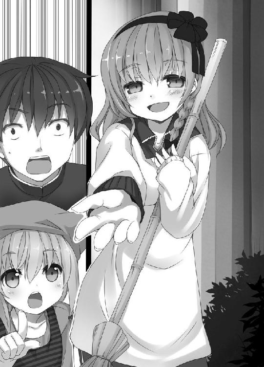
「歓迎しますね」
そして、顔をゆっくりと上げると──衝撃的な台詞を口にした。
「二十一世紀へようこそ！」
＊
筆名、冬耳虎彦。
我輩の偉大なる父祖だ。明治から大正にかけて、数多の名著を遺した。
平成の頃までは高い評価を得ていたようだが、その後、正統派（この呼称には一生を賭して反対をしたい）文学が勃興すると、諸人の記憶より消えた。辛うじて記録は残っているものの、当世では苔むした昔の作家という評価を下されている。
父祖を粗略に扱う当世の文壇には怒りを禁じ得ないが、父祖の名声を守れなかった責任は、我が一門にもあるだろう。
我が家に、虎彦の孫・武夫の日記が保管されていた。この日記には、我が一門が昭和から平成にかけ文学から離れていくさまが、克明に記されている。
「昭和五十八年四月十五日（水）雨
息子が同人誌の主宰をしているようだ。わたしも学生時代からずっと文芸同人を主宰していたので、息子がいよいよ文筆活動に目覚めたかと喜んだが、どうも様子がおかしい。
書いているものを見せろと言うと、薄い本を突き出された。同人は同人でも、アニメーションの二次創作だという。ピンクの髪をした少女のイラストが表紙で、名前は桃だの梅だの言っていた。
東京の晴海にある見本市会場で、この本を売るらしい。同人誌の即売会があるそうだ。
わたしにはわからない世界で戸惑うばかりだった。
口惜しいことだが、息子は祖父・虎彦のような文学人には、なりそうもない」
「平成二十一年三月五日（土）晴れ
孫が新人賞をとって作家になった。祝福して、作品の傾向は芥川賞よりか直木賞よりか尋ねると「そういうのじゃないんだ」と歯切れが悪い。追及するとライトノベルと呼ばれる若者向けの作品を書いているという。
孫は漫画家になりたかったが、絵がうまく描けず作家を志したようだ。作家になった現在も漫画家に未練があるらしく、インターネットの渋いとか渋くないとかいうホームページで自作の絵を発表しているという。
文筆業に対する意識の低さに怒りを覚えたが、楽しそうにしている孫の姿を見ると、これで良いと思えてきた。肉親の笑顔ほど大切なものはないのだから」
......嗚呼。行間に諦念が滲んでいる。
冬耳虎彦という偉大な父祖をもちながら、時代に流されてゆく子息ら。無念だったでしょう。もどかしさの余り、歯噛みをしたことでしょう。
我が一門は長い冬の時代を迎えました。誰ひとり正しい文学に目覚めず、父祖の文学は途絶しておりました。
然し、我輩が生まれました。我輩は時代におもねりません。この身果てるまで戦い、父祖の文学を当世に蘇らせます。どうかお心を安んじ、泉下よりご覧ください。
「二十一世紀へようこそ」──そっくりさんの放った一言だ。
言葉の意味を考える──って、そのまんまだよなあ？
「いったい、なんですか」
そう言ったのは僕ではなくクロハだった。僕を押しのけるように前へ出て行く。
「はい。わたしの名前は弥勒院柚です」
クロハの問いかけを勘違いしたようで、そっくりさんが名乗った。ミロクインが苗字で、ユズが名前か。ユズさんと呼ぼう。
「そうじゃなくって。二十一世紀と言ってましたけど、今は２２０２年、二十三世紀のはずです」
「あ、そのことですか。えっと......皆さん、時間移動されちゃったようですよ」
時間移動？
「これ、見てください」
ユズさんが、かっぽうぎのポケットから角張っている携帯電話を取り出した。ずいぶん古臭いデザインだ。ディスプレイを僕たちに向けてくる。
２０１×／５／１４
「今日の日付です」
「なるほど」
僕はうなずく。どうやら過去に時間移動したようだ。
「お兄ちゃん！ なるほどって、あっさり信じたの!?」
クロハが呆れ顔で詰め寄ってきた。信じて悪いのか。
「だって日付がそうだし」
「そんなのいくらでもいじれるでしょ！」
「えっ、そうなんですか？」
ユズさんが意外そうな顔をしている。携帯電話をじっくり見て「初めて知りました！」と喜んでいた。
「だいたい、なんで私たちが時間移動したなんて知ってるのよ。初対面でしょう？」
クロハの言葉は僕に対してだったが、ユズさんも聞いていた。
「さっきうちにお連れした方が言っていたんですよ」
「お連れした方って、誰よ？」
「オオダイラさんです」
オオダイラ!? 僕はユズさんに駆け寄った。
「先生を知ってるんですかっ!?」
つい、大きな声を出してしまった。
「先生......？ あの若さで先生だなんて、立派な人なんですね」
オオダイラ先生が若い？
容姿じゃなくて内面的なことだろうか。感性は若くて瑞々しいのは間違いないが。
「オオダイラさん、他に三人仲間がいると、写真を見せてくれたんです」
話の流れからすると、先生が僕たちの写真をユズさんに見せたのだろう。......でも、写真を先生に渡した記憶はない。
「僕たちの写真ですか？」
「いえ、ミルちゃんの写真だけです。この子は大切なお友達のミルちゃんだって、嬉しそうに何枚も見せてくれて」
「......それ、正面から撮ってるのありました？」
クロハが質問した。目が据わって剣呑な空気が出ている。
「そう言われると......。目線の合っていないものばかりだったような」
「いつの間に！」
クロハのこめかみにうっすら血管が浮かんでいた。
「先生はどちらに？」
僕が尋ねると、ユズさんは振り返って館を見た。
そのとき、玄関の扉が開いて人が現れた。
金髪の少女だった。
年齢は十歳くらい。ミルと同年代だろう。ほっぺたがぷっくりしていて、かわいらしい。髪の毛をリボンで束ね、頭の両サイドでくくっている。いわゆるツインテールだ。フリルのついた黒いドレスワンピースが、アニメのコスチュームみたいだった。
「あ、兄さま」
僕を見るなり女の子が、可憐な声を発した。上目遣いで目が潤んでいる。
兄さまって......。僕はこの子と面識はないはずだが。
「兄さま、迎えに来てくれたのね」
え、え？ 混乱してしまう。
「わたくしがいれば、他に妹はいらないわよね」
女の子がそう言うと、ミルが僕と女の子の間に割って入った。
「おまえ、だれだっ」
ミルの声には敵意がこもっていた。ふだんはへたっとしているベレー帽のネコミミがぴんと立って、まるで女の子を威嚇しているように見える。
女の子はミルに視線を移す。と、女の子の目尻がきゅーっと下がった。
「──ははは、冗談だよ、ミルちゃん」
女の子は腰に手をあて、胸をそらした。
「わたくしだ」
その口ぶりにピーンと来た。もしかしてこの子は......。いや、でも、まさかなあ。
「オオダイラ先生ですか？」
僕が思ったことをクロハが口にした。
女の子はくるりと一回転すると、目をつぶって「当たり」と言った。
「金髪ツインテールの美少女になってしまったよ」
「ええええええええ───っ」
びっくりなんてもんじゃない。度肝を抜かれるとはこのことだ。七十歳の老紳士が、いたいけな少女に変身してしまうとは！
すさまじいプロ意識だ！
先生はよりリアルな少女を書くため、性別や年齢を超越したのだ。さすが先生だ！
「じじい、どうやって化けた？」
「気づいたらこうなっていたんだよ、ミルちゃん。ますますわたくしを尊敬したかな？」
「ううん。きもい」
「ミルちゃんつれないねえ。そこがいい」
ミルとのやりとりを見ると、いかにも先生らしい。僕は先生に近寄ろうとしたが、
「待って。本物のオオダイラ先生か試させて」
クロハが僕を制止した。腕を伸ばし僕の行く手を塞いでいる。
「ミルの写真を持ってたんだし、先生に間違いないだろ」
「そんなのわからないわ。誘拐犯かもしれないじゃないの。お兄ちゃん、オオダイラ先生にしか答えられない問題を出してみて」
クロハは警戒しているようだ。仕方ない、不本意だが女の子が先生か試させてもらおう。
「先生、すいません。問題に答えてもらっていいですか？」
「ああ、いいだろう」
「『いもうと すた☆あ』のヒロインの名前は？」
「リン」
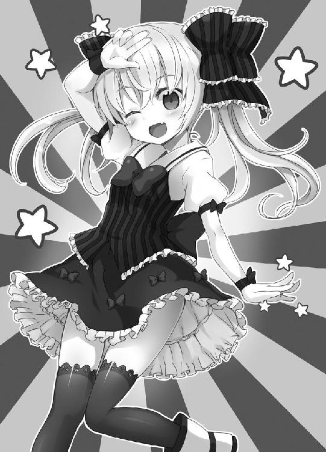
女の子は即答した。ほら、やっぱり先生じゃないか！
僕は歓喜したものの、クロハが蔑んだ目つきで言う。
「お兄ちゃん、本格的に駄目な人？ あれだけヒットした作品のヒロインなんて知ってる人たくさんいるわよ」
「う、それもそうか」
僕は考え込む。先生の作品がらみは駄目だ。読者がたくさんいる。先生がインタビューで答えた内容も避けたほうがいい。僕と先生だけ知っていることを質問するんだ。
そうだなあ......。
「ミルの生年月日と血液型は？」
「２１９２年４月９日、ＡＢ型」
「ミルの身長とスリーサイズは？」
「身長は百三十五センチ。スリーサイズは、君もわからないって教えてくれなかっただろう。あれほど頼んだのに。けち」
「ミルが最後におねしょをしたとき、僕の部屋へ来てなんと言いましたか？」
女の子は内股になって、モジモジしながら、
「『にぃ、起きて。お部屋来て』」
全問正解。間違いない。先生だ！
僕は先生に近づき、両手をつかんだ。ぷにっとやわらかい。
「感動です。小さい女の子をリアルに書くため、この姿になったんですね！」
「ふははっ。清く正しく生きていると、いつか願いがかなうようだねえ」
先生はにこっと笑った。愛らしい！ 口調こそ先生だが、姿や声は幼い女の子だ。中身が七十歳の男性だなんて誰も見抜けないだろう。
「ちょっと、お兄ちゃん」
僕と先生が感動の再会を果たしていると、背後から妙に怒りのこもった声がかけられた。誰かは言うまでもない。
「先生と、楽しいやりとりをしていたみたいね」
「うん。そうなんだ」
「ミルの個人情報がずいぶん漏洩していたようだけど？」
「......まずかったかな」
「嫌に決まってるわよね？ ミル」
「ちょっと、しゃくにさわる」
うわ、ミルが怒っているぞ。謝ろう。
「ミルごめん！ 平等じゃなかったな」
「びょうどう？」
「うん、ミルのことを先生に教えたんだから、先生の情報もミルに伝えるべきだったな。うっかりしてたよ。男性だった先生のスリーサイズは......」
「そんな情報、誰が喜ぶのよ！」
クロハ、こわっ。先生の熱烈なファンが喜ぶかもしれないだろ！
「あの、とりあえず中で話しませんか」
僕の恐怖を察してくれたのか、ユズさんが優しい口調で言った。助かった。この人は女神の生まれ変わりかもしれない。
館に入ると、僕たちは応接間に通された。ソファに座って部屋の中を観察すると、西洋風のアンティーク家具と、風格のある柱時計が目に入った。
「お茶を用意してきますね」
ユズさんはそう言って応接間から出て行った。後ろ姿をクロハがじっと見ている。
「どうした？」
「......なぜ私たちに良くしてくれるのか疑問なのよ」
「僕たちが時間移動して困ってるからだろう」
「それよ。本当にここは２０１×年なの？ まだ信じられないわ」
「クロハ君、間違いなくここは平成の時代だよ。わたくしは旧時代ならではの、神聖な遺物を目にしたからね」
遺物......？
先生はにやりと笑うと、目覚めてからこれまでにあったことを語ってくれた。
先生はこの近くにある小学校の敷地で目覚め、なぜか女の子の姿になっていたという。自主的に小学校の周囲を警備していたところ、ユズさんが通りかかった。話しかけたら意気投合し、館に招かれたらしい。仲良くなったきっかけは金髪同士だから、だそうだ。
「ところで、遺物って何ですか？」
僕は気になったことを質問する。
「ユズ君と知り合う直前、わたくしは覗いていた小学校で──ランドセルを見たんだ」
「ランドセル？ それは何ですか？」
「ランドセルは昔の小学生が使用していた通学用の鞄でね。軍隊が発祥のため非常に無骨な形状をしている。年端のいかない女児が背負う姿はフェチズムの極致だ」
先生は言葉を切ると、退屈そうにネコミミをいじっているミルに熱い眼差しを向けた。
「ミルちゃんがごついランドセルを背負う姿を想像すると......もうね......」
先生の息が荒くなった。
クロハが刺すような視線を先生に向け、
「......ランドセルだけが平成時代という根拠ですか？」
「他にも、この屋敷にあるカレンダーとか、テレビのニュースで言っていた日付だとか、全て２０１×年だったよ」
「それだけじゃ......」
「クロハ、疑っていたらキリがない。ここは二十一世紀だ。そう思っておこう」
「......わかったわ」
クロハは釈然としないようだが、渋々うなずいた。
「失礼しますね」
ふと、応接間の入り口で声がした。ユズさんがお茶を運んできてくれたようだ。ハーブティーの香りが漂う。
ユズさんはかっぽうぎを脱いで、えんじ色のジャージ姿になっている。首から上はホミュラそのものだが、服装のセンスはまるっきり似ていない。
ユズさんが、テーブルにティーカップを置いていく。僕がその横顔を見つめていると、ユズさんが僕の視線に気づき微笑みを返してきた。
ティーカップを配り終えたユズさんは「よいしょ」と自分もソファに座った。
「皆さんのお名前、まだ聞いていませんよね。良かったら教えてくれませんか？」
言われてみればそうだった。失礼しました。
「イモセ・ギンといいます。こっちが妹のクロハとミルです」
僕たちはあらためて挨拶をした。
「まあ、皆さん個性的なお名前ですね。どんな字を書くんですか？」
「字、ですか？」
「わたしは木へんに自由の由で『柚』って書くんですよ」
僕は困惑した。ユズさんの言っている意味がよくわからない......。
「みんな、カタカナ」
僕が答えられないでいると、ミルがぽそりと答えた。
「皆さん、お名前をカタカナで書くんですか？」
「私たちの時代では、もう漢字は使われていないのよ」
クロハの言葉に、ユズさんが「えっ」と目を丸くする。
「人名とか地名はカタカナが一般的になってるわ。ルビの名残なのよ」
二十一世紀の後半に、文書上の全ての漢字にカタカナのルビを振るようになった。それから時代がくだり、ルビだけが残った。だから、人名や地名はカタカナ表記なのだそうだ。
「では、皆さん漢字を読めないんですね。何か不便があったら言ってください」
「大丈夫、読めるわ」
クロハが、空中に指で文字を書きはじめた。漢字のようだ。
「『柚』って、こういう字でしょ」
「そうです！」
ユズさんが嬉しそうにうなずく。
「私とミル、オオダイラ先生は漢字を読めるのよ」
ユズさんはにこにこしながら三人の顔を順に見た。クロハ、ミル、先生──。
そして、僕の顔で視線が止まる。
「あの......ギンさんは？」
「にぃは漢字むり！」
「まあ」
ユズさんがまじまじと僕を見ている。いろんな意味で恥ずかしい。
「ギンさん、かわいい」
「え？」
「お兄さんなのに漢字読めないなんて。かわいいですね」
「は、はあ」
女の子にかわいいと言われたのは人生で初めてだ。異様に照れる。
僕はついユズさんから目をそらしてしまう。
すると、クロハの憮然とした顔が視界に入った。口がへの字になっている。慈愛に満ちたユズさんの笑顔とは対照的だ。
「かっこわる」
クロハがボソっとつぶやいた。声は小さかったけど、妙に気持ちが入っている気がした。感じ悪いなあ。ユズさんを見習いなさい。
そのユズさんが真顔になって言う。
「そうだ。皆さん、しばらく遊んでいかれるんですよね」
この時代で、ということですよね？ 遊んでいくというか、戻る方法がわかりません。
「ホテルもとっていないようですし」
「予約しようがなかったですからね」
「それじゃあ、ぜひ、うちを使ってください！」
おお！ ありがたい申し出だ。僕はお礼を言いかけるが、
「申し訳なさすぎるわ」
クロハが首を振る。遠慮しているような言葉だけど、表情はやや険しい。
「どうしてそこまで良くしてくれるの？」
「未来から来たお客さんなんて、すごいじゃないですか。自慢できます」
「そんな理由で？」
「おかしいですか？」
ユズさんは首をかしげた。
「おかしくはないけど......」
クロハはユズさんを信用しきれないようだ。
「ねぇ、ここにおとまりしたい」
ミルがクロハのブラウスを引っ張りながら言った。
「クロハ君、わたくしたちはこの時代のお金を持っていないのだよ。ミルちゃんを野宿させる気かね」
「それは......」
「いや、わたくしは野宿でもいいのだよ。ミルちゃんと原っぱで無防備に野宿する。そう考えただけで辛抱たまらんね。この体を活かして、青い百合を楽しんでしまいそうだ」
「青い百合？ 先生とミルで花を愛でるんですか。その光景を想像すると癒されます」
「ギン君、わかってないんだねえ」
「わかってますよ。青いには『幼い』と、『青空の下』と、二重の意味があるんですよね」
「それは見事に当たってるんだけど、肝心のところがわかってないなあ」
「肝心のところ......クロハはわかるか？」
「ああっ、もう。どうしてそう話をそらすの！ わかりましたお世話になりますっ。ミルを守らなきゃいけませんから」
なんだ？ わかってないとか、わかりましたとか。僕がついていけてないぞ。
「はい。楽しく過ごしましょうね」
ユズさんは、ただ僕たちのやりとりを見て穏やかに微笑んでいた。
そういうわけで、僕たちはこの館に居候させてもらうことになった。
使っていない部屋を貸してくれるという。三部屋、空きがあるらしい。
僕たちは相談して、僕の部屋、先生の部屋、クロハとミルの部屋、と割り振った。先生は「年少組のわたくしとミルちゃんは同室で」と提案したが、クロハが即座に却下した。
僕の部屋は二階になった。ちなみに先生を含む女の子はみんな一階だ。
「ギンさんだけ二階なんですね。案内します」
「ありがとうございます」
階段を上るユズさんのあとに続く。ユズさんの背中や腰が目に入る。
わあ......。きゅっとしたお尻に、むちっとしたふともも。女らしい曲線を描く体のライン。後ろ姿なので確認できないけど、胸もけっこう大きかった気がする。異性を感じまくりでドキドキしてしまう。
ユズさん、スタイルが抜群にいい。金髪も天然ものみたいだし、外人さんの血を引いているのかも。気になる。
「あの、ユズさん」
階段を上がりきったところで、ユズさんが「はい？」と振り返った。
「ユズさんって、ハーフなんですか？」
「はい。たぶん！」
たぶん？
「この通り、純粋な日本人じゃないです。でも、何人の血を引いてるとかは、わからないんです」
ユズさんは笑っていたが、どことなく寂しそうだった。
何か事情があるんだろう。僕はそれ以上、詮索しなかった。
案内された部屋は、僕の部屋の三倍は広かった。出窓があり深緑の絨毯が敷かれている。ヨーロッパの貴族が住んでいそうな部屋だ。
「立派な部屋ですね。ありがたいですけど......本当にいいんですか？」
「いいんですよ。賑やかになってわたしも嬉しいですから」
「でも......ご両親に反対とかされないんですか？」
「あれ、言ってませんでした？ しばらく両親は海外から帰ってこないんです」
聞いていなかった。現在、この館にはユズさんひとりで住んでいるらしい。ご両親は仕事の都合で海外に住んでおり、数年は戻らないという。
大きな館なので使用人がいても良さそうだが、執事だのメイドだのお手伝いさんだの、その手の人は一切雇っていないらしい。
「これだけの館だと、掃除するのも大変ですよね。手伝います」
「ありがとうございます。でも、わたし、掃除大好きなんですよ。この部屋もわたしが掃除しますから。ギンさんはゆっくりしてくださいね」
ユズさんは穏やかに笑った。甘えても許してくれそうな、ふんわりした笑顔だった。
なんだか大人の包容力を感じる。姉がいたらこんなふうかもしれない。
そういえば、ユズさんは何歳で、ふだんは何をしてる人なんだろう。僕よりちょっとだけ上の年齢に見えるけど、若いから学校に通っているのかな。
「ユズさんって学生さんですか？」
「はい、そうですよ。ここ、見てください」
ユズさんはジャージの胸を指さした。『白明学園』と刺繍があるけど、僕は読めない。
「あ、ごめんなさい！ 通っている高校のジャージなんです」
そうか。高校生なのか。
「僕も高校生なんです」
「何年ですか？」
「二年です」
「じゃあ、お兄さんですね」
ユズさん高一なのか？ でも、時代が違うから高校生の年齢も違うかもしれない。
「僕は今年十七ですけど、ユズさんは？」
「十六です。ギンさん、ひとつお兄さんです」
うっわ、年下だったよ。ユズさん、大人っぽいなあ。僕の同級生や後輩はみんなもっとお子様くさい。クロハもそうだけど、美人って年上に見えるんだよな。
「むっ」
僕の反応を見たユズさんが頬をふくらませた。
「年齢より老けてるって思いましたね？」
「違いますよ！ 大人だなあって」
ユズさんは不満そうだ。
「美人は年とってから若く見えるからいいじゃないですか」
......あ。しまったかも。クロハに同じことを言うとあいつは怒る。女の子にとっては失礼な台詞なのかもしれない。
だが、ユズさんの反応はクロハと違っていた。
「え、び、美人って」
言葉がうわずっている。照れているみたいだ。
「ギンさん、すぐそういうこと言うんでしょう？」
「そんなことないです。だいたい、ユズさんは言われ慣れてると思うんですが」
「兄以外の人にはっきり言われたのは初めてです」
へえ。こんなに綺麗なのにな。お兄さん以外の周りの人はよほど見る目がないんだろう。
──あれ？
「ユズさん、お兄さんいるんですか？」
「あ......」
ユズさんはうつむいた。眉根を寄せ、小さな声で言う。
「いました。三ヶ月前まで」
途端に空気が重くなる。あー、しくじったな。お兄さんと離ればなれになったか、最悪、亡くなってしまったか、とにかく悲しい出来事があったに違いない。
ユズさんは数秒ほど黙っていたが、
「あの、わたし、庭を掃除してきますね。くつろいでください！」
身をひるがえし廊下に出て行った。とん、とん、と階段を下りる足音が響いてくる。
お兄さんの話はタブーのようだ。今後は気をつけよう。
僕は出窓に近づき、窓を開けた。新鮮な空気が部屋に流れ込んでくる。目に入る景色は緑が多く、牧歌的だ。これでもトウキョウらしい。ユズさんはオクタマと言っていた。
僕たちの時代では人口の集中が進んだため、人の住んでいるところはどこも都会だ。自然豊かな場所に民家があるのは、旧世紀ならではだろう。時間移動をしたのだと実感する。
ふと考える。
どうして僕たちはこの時代にやってきたのだろう？ いきなり超常現象が起きたとは考えにくい。何かしら時間移動を引き起こしたトリガーがあるはずだ。
原因をいずれ突き止めたい。僕は作家になるため、二十三世紀に帰るんだ。
外の空気をしばらく浴びてから、窓を閉めた。
ベッドに近づきごろんと寝転がる。やわらかくて気持ちがいい。リラックスできそうだ。
この時代でゆっくり休めるのも、全部ユズさんのおかげだ。
二十一世紀で初めて知り合った人がユズさんで本当に良かった。とても親切にしてくれる。『おにあか』のホミュラにうりふたつだから、ホミュラに優しくされているみたいでときめいてしまう。
ユズさんのことを考えていると、ふわあ、とあくびが出た。今日一日いろいろあったし、安心したら疲れがどっと出てきたようだ。睡魔が襲ってきた。
僕はユズさんの笑顔をまぶたの裏に思い浮かべながら──眠った。
二十一世紀にやって来て、一週間が過ぎた。
この一週間、僕たちはユズさんに頼りきっていた。食事はユズさんが全て用意してくれたし、雑用も快く引き受けてくれた。
ユズさんは決して暇人ではない。平日、朝から夕方まで学校に通っている。その合間に僕たちの世話をしてくれていた。かなりの負担をかけてしまった。
さすがに申し訳ないので、遠慮するユズさんを説得して、僕たちで出来る限りの家事をした。主な仕事は館と庭の清掃だ。相当な手間を覚悟したが、四人でやると早く片付いた。
日中、僕たちは暇になったので、それぞれ好きなことをした。
先生は新しい小説を書いていた。時代を移動しても小説を書く姿勢はプロそのものだ。現代文で書いているが、筆が進まないときは息抜きに近代文で書くと言っていた。
ミルは景色をスケッチしていた。二、三日は夢中になっていたが、一週間もすると飽きたようだ。ミルは気分のむらが激しい。
僕やクロハは何をしていたかというと、テレビを見ていた。
初めてテレビをつけたとき、僕たちは驚いてのけぞってしまった。いきなり生身の人間がたくさん表示されたのだ！ 芸能人と呼ばれる人たちらしい。
この時代はアニメより、芸能人が出演する番組のほうが圧倒的に多かった。リアルな人間でも視聴率がとれるんだろう。僕たちの時代ではニュースもバラエティも出演するのは二次元のキャラなので、新鮮だった。
嬉しかったのは、芸能人の喋る内容がだいたい理解できたことだ。書き言葉と違い、話し言葉は僕たちの時代とほとんど同じようだ。クロハが言うには、明治以降、話し言葉に大幅な変化はないらしい。
残念ながら漢字は読めないため、芸能人の名前はテロップが出てもわからなかった。読めたのは「みの●んた」「え●りかずき」「つの●☆ひろ」くらいだ。最後の人は記号の使い方がオオダイラ先生っぽくて、親しみを感じた。
未来を知っているからこそ意外なこともあった。例えば、本についてだ。
テレビのニュースで、これからは電子書籍が本格化し、紙媒体は衰退するでしょうと言っていた。大外れである。二十三世紀でもまだまだ紙の本が主流だ。
先生から教わった話によると、一時期、電子書籍が主流になったものの、紙のコストが劇的に下がり、原点回帰したという。
テレビを見ているだけで毎日が面白かった。ドラマやバラエティも楽しめたが、何より堪能したのはアニメである。膨大な数のタイトルが、レコーダーや光ディスクにストックされていたのだ。
平成のアニメを見たのは初めてだったが、僕好みの文学的な作品が多かった。
男の子が女の子だけの学園に入学したり、男の子の家に異星人の女の子が押しかけてきたり、正統派文学をそのまま映像化したようなアニメがたくさんあった。
さらに、あるアニメでは驚くべき表現を目にした。女の子が裸になると、光線や湯気がきわどい部分を隠したのだ。
暗闇なのに光線ピカーッ！ 不自然な湯気がモワーッ！
なんという不条理さ。まさに正統派文学の源流だ！
嬉しくてたまらなかった。人間は幸せだと自然に体が動く。僕はパンチラシーンで拍手をしたり、全裸シーンで拝んだりした。
なぜかクロハに冷たい目で見られた。
「ユズさん」
ある日曜日の朝、僕は廊下でユズさんに声をかけた。アニメを見せてくれたお礼を言うためだ。
ユズさんは頭にカチューシャをつけ、服装はジャージだった。家にいるときはいつもこの格好なので、よほど気に入っているのだろう。
「アニメ、ありがとうございます」
「楽しめました？」
「はい。いいパンチラも見られました」
「それは良かったです」
ユズさんはにこやかに笑う。
かわいいなあ。ユズさんの笑顔を見ると、胸の奥にじんわりしたものがこみ上げる。
「ところで、『いいパンチラ』って何ですか？」
むむっ。具体的になんという作品の、どのシーンか伝えたほうがいいだろう。僕はできるだけ詳しく説明した。
「あ、あの」
しかし、僕の説明が下手なのかユズさんは戸惑っている。
「ごめんなさい、わたし、見てないんです」
「見てない？」
「あのアニメのコレクションは、兄のものなんです」
そうだったのか！
「ふだん、アニメを見たりは？」
「はい。アニメはほとんど見たことありません」
アニメを見ない!? 信じられない発言だが、ここは二十一世紀だ。僕たちの時代とは常識が違うのかもしれない。
「それで、困ったことがあって」
「どうしたんです？」
「『魔法少女どえす』というアニメのグッズを手に入れなくてはならないんです」
「マホウショウジョどえす？ もしかして、あの『どえす』ですか？」
「......？」
二十三世紀で五百億の価値がある魔法少女像が発掘された。うろおぼえだけど、『どえす』という作品のものだった気がする。
「すいません。わたし、アニメに詳しくないので......」
「あ、僕こそごめんなさい。なにやら深刻そうですね」
「はい。とても大切なことなんです。でも、どうやってグッズを買えばいいのか」
「インターネットはどうですか？」
「兄はやっていたんですけど、わたしはよくわからないので解約しちゃいました」
「近所のお店は？」
「食料品をよく買うスーパーにメモを持っていったんですけど、これありますかと尋ねたらぷっと吹き出されてしまって。笑いながら『うちにはないです』と言われました」
なんて書いてあるメモだったんだろう？
「......どこで買えるんでしょう？」
「首都だよ。ユズ君」
唐突に横から声がした。顔を向けると先生が立っていた。
「首都ですか？ ここは一応、東京都ですけど......」
ユズさんは当惑している。
「ははは。首都はトウキョウだ。それはわたくしたちの時代も、この時代も変わらない。わたくしが言っているのは、よりミクロな文化的首都のことだよ」
ユズさんの頭上に？ マークが飛び交いそうだ。
僕は「文化的首都」という言葉で先生の意図がわかった。
「先生、その言い方は少しわかりにくくて意地悪じゃないでしょうか」
先生が行こうとしているのは、きっとあそこだ。僕はある街の名前を言った。
「アキハバラ」
ユズさんは「まあ」と言って、先生の顔を見る。
先生は両手でツインテールの毛束をつかむと、引っ張りながらにこっと笑った。
「正解！」
その日の午後。
僕たちは五人全員でアキハバラに向かった。この時代に来て初めての遠出になる。
オクタマ駅から電車に乗った。
アキハバラまでは二時間以上かかるようだ。僕は電車の窓から二十一世紀のトウキョウをじっくり眺めた。平成の電車は速度が遅いので、景色を観察する余裕があった。
「うわ、見ろ！ 屋根瓦だ！」
「木造住宅がまだ残っていたりするのね」
「にぃ、漢字の看板がいっぱいある」
僕と妹ふたりは、車窓に広がる風景に釘付けとなる。
オクタマを出てしばらくは背の低い建物ばかりがのっぺりと続いたが、都心に近づくと近代的な高層ビルも目立ちはじめた。新旧の入り交じった街並みがいかにも平成らしい。これぞ二十一世紀だ！
途中、何度か電車を乗り換え、僕たちはアキハバラ駅に着いた。
『電気街口』という改札をくぐり、あたりをぐるっと見る。あれ、予想したほど萌え的な装飾がないぞ？ 二次元の美少女だらけかと思っていたけど、ところどころにイラストの描かれた看板が設置されているくらいだ。こんな程度なのか......。肩すかしを食らう。
印象に残ったのはむしろ人の多さだ。大勢の人が行き交っていて、気を抜くとぶつかりそうになる。日本の人口が一億二千万もいた時代だから、トウキョウも人があふれかえっているんだろう。
駅の外に出ると、かなり雑然としていた。あちこちから聞こえてくる電子音や店員の客引きの声、電飾に彩られた漢字の看板、雑踏のノイズ──それらが一体となって、僕の目や耳を刺激した。整然とした二十三世紀の街にはない活気があって、圧倒される。
もしだけど、この街を小説に書くならどんなふうに描写しよう？
「ここが秋葉原なんですね。初めて来ました」
ユズさん、嬉しそうだ。
ユズさんはジャージから着替えて、学校の制服姿になっていた。上は白いブラウスにスクールセーターを重ね着し、下はプリーツスカートだ。遠出するときはだいたい制服を着るそうで「私服はないんですか？」と訊くと、元気良く「ありません！」と返された。
「ふむ......」
先生が鋭い目つきで周辺を見ている。アキハバラの街を細かくチェックしているに違いない。こうして見たものが、執筆する作品に活かされるはずだ。
「人は多いけど、ちっちゃい子はあまりいないねえ」
「ちっちゃい子は先生でじゅうぶんですから。ユズさんの欲しいものを探します」
クロハの言うユズさんの欲しいものとは何か？
『魔法少女どえす』の『限定品おっぱいマウスパッド』である。
おっぱいマウスパッドのことを僕や妹たちは知らなかった。聞いたこともない。
ユズさんに尋ねると、「マウスパッドって何でしょう？」と言われた。ユズさんはメモを頼りに購入しようとしているだけらしい。なぜ欲しがっているのか謎だが、まあいい。
最後の望みは平成時代の文化、風俗に詳しい先生だ。
先生はおっぱいマウスパッドを知っていた。マウスパッドに女性キャラクターの上半身が描かれ、胸部が立体的になっているものだという。
さすが先生だ！ これはもう購入したも同然と思えたが、先生もどういうお店で買えるかまではわからなかった。
「平成時代では有名な美術品なんだがねえ」
「わからないときは、人に訊くべきじゃないでしょうか」
クロハが建設的な意見を言う。うん、その通りだな。
問題は誰に訊くかだけど......困ったときは年配者の知恵に頼るのが鉄則だろう。
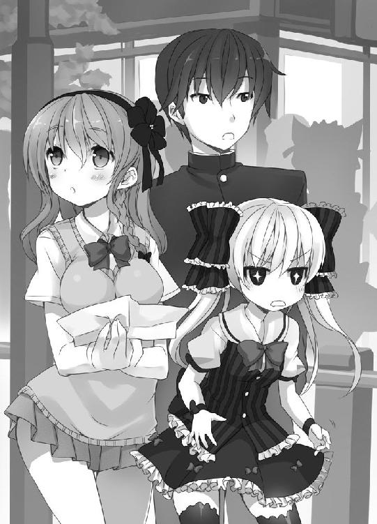
ちょうどいいことに、目の前をお婆さんがゆっくり歩いている。声をかけるぞ。
「すいません。『どえす』のおっぱいマウスパッドはどこで売っているかご存知ですか？」
お婆さんは「へ」と声を漏らすと、目をむいて僕を見た。
「おっぱい？」
どうも驚いているようだ。美術品について尋ねるのが、そんなにおかしなことなのだろうか......。僕は不安になったが、お婆さんはすぐに柔和な笑みを浮かべてくれた。
「ごめんなさいねえ。若い人のことはよくわからないのよ。ここも乗り換えに使ってるだけだから」
ソウブセンに乗ってチバのツダヌマから出てきた、と言われた。知らない地名だ。
「お買い物なら、日本●販がいいんじゃないかしら」
「ニホンチョク●ンですか？」
「テレビ通販よ」
「それだよ」
先生がうなずく。
「国の名前がついているのだから、きわめてマスな販売チャンネルなのではないかね。国営で規模が大きそうだ。おっぱいマウスパッドを売っていてもおかしくない」
「その番組はどこで見られるんですか？」
「電気屋さんで見られるんじゃないかしら。ほら、あそこ」
お婆さんが遠くのビルを指さす。ビルに目を向けると、『石丸●気』という看板が掲げられていた。なんと読むかはわからないけど、きっと電気屋なんだろう。
「ありがとうございます！」
僕たちはお婆さんにお礼を言い、電気屋に向かった。
ああ、くそっ！ つい悪態をつきたくなる。
僕たちは電気屋を出て、アキハバラの路上をよたよた歩いていた。
電気屋にテレビはあった。たくさんあった。骨董品みたいなテレビばかりだったが、どれもちゃんと映っていた。
だが、ニ●ンチョクハンの番組は流れなかった。
ずっと待機していたのに！ 二時間半も！
「騙されたかっ」
先生が地団太を踏んでいる。
「私たちを騙したんじゃなくて、あのお婆さんはよく知らなかったんですよ」
クロハが疲れた様子で言う。
「また、誰かに尋ねましょう」
同意するしかない。
僕たちは何人か、道行く人に尋ねた。しかし、誰もおっぱいマウスパッドを売っている店を教えてくれなかった。
「なんですかそれ？」と聞き返す人もいたので、「美術品ですよ！」と大きな声で答えると、横からお姉さんに声をかけられた。「いい美術品があるので見ませんか？」と言う。
期待してついていくと、絵画の購入をおすすめされた。当然、パンチラや脱衣シーンを描いた美少女画かと思ったら、ただの風景画だった。ここは本当にあのアキハバラか！
「ギンさん、ごめんなさい......」
ユズさんが謝る必要はありませんよ！ アキハバラらしからぬ絵に驚いただけです。
それからしばらく、僕たちはアキハバラの街をさまよい歩いた。おっぱいマウスパッドはどこに行けば買えるんだろう？ 手がかりがない。足もだいぶ重くなってきた。
「にぃ......」
行儀良くついて来たミルも限界のようだった。
「あきた」
「ミル。わがまま言っては駄目」
クロハがミルをたしなめる。
「だって、こんなの、つまんない」
こらっ。そんなこと言ったらユズさんが責任感じてしまうだろ。
僕は焦ってユズさんの顔をうかがう。
ユズさんは優しく微笑むと、腰を曲げてミルに目線を合わせた。
「そうですね。疲れたし、つまらないですよね。楽しいことしましょう」
ああ。ユズさんは本当に人間ができている。ありがとうございます。
「いいの？」
クロハが申し訳なさそうにユズさんに訊く。
「はい。だって、日●直販ならうちのテレビでも見られるでしょうから」
なるほど。じゃあ何をしましょうか？
「にぃ、あれがほしい」
「あれ？」
「だきまくらカバー」
おっぱいマウスパッドと違って、抱き枕カバーは僕も知っている。博物館でも見た。
でも......。
「ものを買うのは駄目だよ。お金がない」
この時代の僕たちは無一文だ。お金は全てユズさんに出してもらっている。これ以上、金銭的な迷惑はかけられない。
だが、ユズさんは乗り気になってくれた。
「抱き枕カバーって何十万円もしませんよね？ 買いましょう！」
僕やクロハは断ったが、ユズさんにしてみれば大した負担ではないらしい。買ってもらうことになった。恐縮です。
「買うのはいいけど、抱き枕カバーもどこで売ってるかわからないわよね？」
クロハが困った顔で言う。そういうときは、
「やっぱり、訊くしかないよな」
誰に声をかけようか。親切な人がいいけど、見かけじゃわからないしなあ。
「にぃ、あんないロボットあるよ」
ミルがあれ、あれ、と遠くを指さしている。
見ると、作り物感あふれる女の子が道路の脇に直立していた。人間と見分けがつくようあえてロボットとわかる外見にしているようだ。よし、あのロボットに訊こう。
案内ロボットに近づくと、どうも様子がおかしい。ロボットがぴくりとも動かないし、人が群がって写真を撮っている。見世物を見物するような雰囲気だ。
女の子はピンクの服を着て、ミルよりひとまわり大きい体をしていた。すぐ横に『魔法少女どえす劇場化記念 等身大フィギュア』という旗がたっている。ん？ どえす？
「案内ロボットじゃないみたいね。行きましょう」
「待てクロハ。『どえす』の像って──もしかして五百億円の！」
僕は興奮したが、クロハは「用件が先！」とすたすた先に行ってしまう。ううう......。
仕方なくみんなのあとを追う。すると、メイドの格好をした若い女の人がチラシを配っていた。あの人に訊いてみるか。たぶん知らないだろうけどなあ。
僕は抱き枕カバーについて尋ねてみた。すると、だ。
「とらのあ●とか、まんだ●け、メロン●ックスで買えますよ！」
明確な答えが返ってきた。
メイドさんはそれらのお店で同人誌をよく買うそうだ。詳しい店の場所まで教えてくれた。やっぱり困ったときはメイドさんだ。ユズさんにメイドさんの雇用をおすすめしよう。
僕たちは教えてもらったお店に到着し、抱き枕カバー売場へ案内してもらう。
女の子のイラストが壁にたくさん貼られている。どのキャラクターの抱き枕カバーを買うか、指名するらしい。
参ったな。どの子もかわいらしくて迷ってしまう。
「ミル、どれがいい？」
「マシュマロ！」
「マシュマロはないわよ」
クロハが苦笑する。
「クロハ君。ミルちゃんはね──マシュマロのような白い肌をして、ほんのり頬が上気し、衣擦れの音をたてながらパンツを脱ぐ女の子、と言いたいんだ。衣擦れの音がポイント」
「死んでください」
「ミル、マシュマロ柄の抱き枕カバーはないみたいだ。他のにしなきゃいけない」
僕が諭すと、ミルはうーん、と考えて、
「鬼のようにかわいいやつ」
そう言われてもなあ......。僕にはみんなかわいく見えるし。
「ユズさん、このなかでかわいいのってどれでしょう？」
「えっ......。兄はこういうの大好きだったんですが、わたしは詳しくないので。良かったら、せーので選びませんか？」
「多数決ってことですね。面白そうです」
みんなも同意したので、僕が合図をし、一斉にイラストを指さした。僕は黒いヘアアクセサリーをつけた金髪の女の子を選ぶ。
「あっ」「あ......」
僕とユズさんは同じ女の子を指さし、おまけにうっかり指がぶつかってしまう。
「す、すいません」
僕は慌てて手を戻した。
ユズさんを見ると、はにかんだような笑みを浮かべていた。頬が染まっている。
どきぃん！
「あの......ギンさんもこの子なんですね。選んだ理由はなんですか？」
「金髪に黒いヘアアクセサリーの組み合わせ。はっきり言って好みなんです」
ホミュラがそういう容姿だからだ。
「ま、まあ」
「ユズさんはどうしてですか？」
「えいっ、と手を伸ばしたらその子だったんです」
偶然という名の奇跡が起きたようだ！
僕とユズさんは微笑みあった。
「......それでいいのかしら？」
不意に、横から冷えびえとした声が割り込んだ。目をやると、クロハが腕を組んでむすっとしている。阿修羅像みたいな、微妙～に不機嫌そうな顔だ。
「あ、ああ。ミル、これでいいかな？」
「なんでもいい」
鬼のようにかわいいやつじゃなくていいんだ......？
......ということで購入した。抱き枕カバーの表は制服姿、裏は水着姿のイラストだった。裏面はなかなかセクシーだけど、美術品という目で見るといやらしさは感じない。
買った抱き枕カバーをミルに渡すと、ミルは興味深そうに見つめて言う。
「かぶる」
了解だ。ミルに抱き枕カバーをかぶせてあげると、特大サイズだったようで、小さな体がすぽっとおさまった。
動く抱き枕カバーが店内に出現した。その様子は、まるで立ち上がった芋虫だ。
「未来に戻れたら、ミルちゃん、わたくしの妹カバーもかぶってくれないかね。妹に妹カバーをかぶせる。......涅槃のかなたにたどり着きそうだ......あ......もう......」
先生が恍惚の表情になっている。
「ミル、良かったな」
「うんっ」
カバーの中から、ミルの弾んだ声が返ってくる。とてもいいことをしている気持ちになった。家族とのふれあいは心を満たす。
「お兄ちゃん、ちょっと」
僕があたたかさに浸っていると、クロハが眉間にしわをつくって僕の隣に並んだ。
「さっきから他のお客さんにじろじろ見られてるんだけど。もしかして、とんでもなくおかしなことをしてるんじゃないの？」
せっかく幸せな気分だったのに、興ざめするようなことを言う。
「おいおい、やきもち焼くなよ。クロハにもあとでちゃんとカバーかけてやるから」
「やきもちって、馬鹿じゃないの!? けっこうです！」
クロハがフンッと横を向いた。すぐ機嫌を悪くする。怒りんぼめ。
「......あら」
と、クロハが何かに気づいたようだ。視線が一点に注がれている。
「お兄ちゃん、見て」
クロハが棚を指さしている。
白い札が棚に貼られており、おっぱいマウスパッドと書かれていた。ひらがなとカタカナだけだから、僕にも読めた。
ユズさんも気づいたようだ。僕とユズさんは顔を見合わせる。
目的達成、かもしれない。
結局。
目的のものは買えなかった。
その店に『魔法少女どえす』のおっぱいマウスパッドはなかった。少数しか生産しない限定品のため、とっくに売り切れていた。
せっかくなので、違うキャラのおっぱいマウスパッドを買った。『関羽』という美少女キャラのものだ。カンウと読むらしい。
クロハが漢字の「羽」には羽根という意味があると教えてくれた。はためく白い翼をイメージする。なんて可憐なんだ！ 僕に娘ができたらつけてみたい名前だ。
日が暮れたので、僕たちは帰路についた。
「残念でしたね」
アキハバラ駅へと向かう途中、僕はユズさんを慰める。
「仕方ないです。おとなしく、●本直販で買いますね」
ユズさんは疲労感をにじませながらも、笑顔で言った。
賢明な判断だと思う。
国の名前がついてるんだし、おっぱいマウスパッドくらい余裕で売っているだろう。
アキハバラからオクタマまで、電車に揺られる。この時代の電車は振動が激しくて、疲れた体にやけに響いた。
はじめは会話のあった僕たちも疲労のためか次第に口数が減り、無言になった。ロングシートに深く座り、ぼうっとしてしまう。ユズさん、クロハ、ミルの三人は向かい側のシートで身を寄せ合って眠っている。
「ギン君」
そろそろオクタマに到着、というところで隣に座る先生が僕に話しかけてきた。
「今日、どうだったかね」
「どう、と言いますと？」
「萌えだよ」
「萌え、ですか？」
先生の表情が沈む。
「わたくしはね、がっくりきたんだ。この時代、思っていたほど萌えがないじゃないか。もっと浸透していると勘違いしていたよ」
僕は、今日見た風景を思い出した。アキハバラの街や電車の窓から見たトウキョウだ。先生の言う通り、あまり萌えが見受けられなかった。アキハバラをのぞくと萌えなど皆無といっていい。
「アキハバラには、気配くらいはあったけどね。それでも物足りないな。二十一世紀は萌えが足りない」
「まだ首相がリアルな人間という時代ですしね」
電気屋でテレビを見ていたときだ。ニュースが流れていた。この時代の総理大臣が映っており、どう見ても生身のおじさんだった。
僕たちの時代ではあり得ないことだ。
二十三世紀では、日本の総理大臣は二次元の美少女キャラクターがつとめている。
国民の政治離れを問題視した政府が、二十二世紀後半に、総理大臣を人間から二次元の美少女キャラにしたのだ。効果は絶大で、政治への関心が高まったそうだ。
総理大臣を二次元の美少女がつとめることに反対する勢力もあるけど、個人的には愛らしくていいと思う。
「萌えが市民権を、そこまで得られてないということなのだろうね」
「きっと、これから爆発的に文化の中心になっていくんですよ」
「ニャモちゃんが恋しいねえ」
七代目二次元総理、ニャモちゃん。中学二年生という設定で、国民みんなの妹だ。
「わたくしとしては、もっと幼いほうが好みなんだがね」
「次はいよいよ小学生でしょうか」
「いっそのこと幼女という年齢まで下げたらどうかね。そして国民を叱咤すればいい。日本人にはもっとムチが必要だ」
「幼女に調教されるんですか？」
「なっ......！」
一瞬にして、先生の顔が煮え立った。
「幼女にびしびしされる......新鮮だ......だ、だめ......なにか目覚めそう......」
目覚め。話の流れから考えると、政治についてだろうか。先生は顔を真っ赤にして震えている。はた目には金髪ツインテールの女子小学生が興奮しているようにしか見えない。
先生が自分の世界に入ったようなので、僕はひとりニャモちゃんの天真爛漫な笑顔を思い浮かべた。毎日、あの笑顔に元気をもらっていた。
もう一週間以上、ニャモちゃんを見ていない。そんなに日数がたっているわけではないけど、懐かしく感じてしまう。
元の時代に帰る手立ては、未だにわからない。
僕たちは、どうなるんだろう。ずっと、この時代で生きていくしかないんだろうか。せめて時間移動が発生した原因がわかればと思うけど、あまりに突発的な出来事だったので、何も把握できていない。調べようがない。
いつまでも、ユズさんに甘えているわけにもいかないよな。
僕はユズさんの姿を見た。向かい側のシートでくうくう眠っている。無防備な寝顔に妙な色気を感じ、頬が熱くなってしまう。
少しして電車がオクタマ駅に到着した。
アキハバラから帰った僕は、疲れていたせいかすぐに眠ってしまった。
そのまま朝まで熟睡したかったが、夜中に目が覚めた。
時計を見ると、午前二時だった。他のみんなは寝ているだろう。
僕はトイレに行くため部屋を出る。
足音をたてないよう静かに廊下を渡り、そっと階段を下りる。トイレは一階だ。
用を足して二階に戻ろうとしたとき、一階のリビングに電気がついているのが見えた。
気になって覗くと、パジャマを着た女の子がソファに座っていた。
ユズさんだ。
こちらには背中を向けている。どうも、小刻みに震えているようだ。時おり、すんっ、すんっと鼻をすするような音が聞こえる。
もしかして──泣いている？
動揺した。見てはいけないものを見た気持ちだ。立ち去ったほうがいいかもしれない。
僕は静かに身を引こうとした。すると、手がドアに触れ、キィ、とドアが揺れた。
「......誰です？」
すぐさま部屋の中から誰何の声が飛んだ。ユズさんに気づかれてしまったようだ。
「僕です」
「......ギンさん？」
ユズさんが僕を見た。目が赤く、頬に涙のあとがある。
不謹慎だけど、濡れた碧い瞳や愁いに満ちた泣き顔は、ちょっとだけなまめかしかった。
「明かりがついてたんで、つい。ごめんなさい」
ユズさんは慌てて両手で涙をぬぐう。
「恥ずかしいです」
ユズさんは眉尻を下げたまま、口元だけで笑った。
無言の間が訪れる。気まずい。
夜中にひとりで泣いているなんて、何かあったんだろうか？ 正直、気になる。
「あの、ユズさん」
「はい......」
「僕で良かったらですけど、話を聞かせてくれませんか」
お節介かもしれない。ユズさんを困らせるかもしれない。でも、泣いているユズさんを放っておけなかった。
ユズさんは「はい。お願いします」と涙声でうなずいてくれた。
僕はユズさんの斜め前のソファに座った。
テーブルの上を見ると、銀色の箱が置いてあった。フタに『海苔』と印刷されている。読めない。その下に手書きでたからものボックスと書かれていた。
宝物入れの箱か。この家の経済力を考えれば、セキュリティ万全の特注品に違いない。
「兄に謝っていました。欲しがっていたものを買えなかったから」
ユズさんが箱をぱかりと開けた。中から一枚の写真を取り出し僕の前に置く。
金髪の女の子と黒い髪の男の子が写っている。おそらくユズさんとお兄さんだ。
「わたし、お兄ちゃんっ子だったんです」
「優しそうなお兄さんですね」
銀ぶちのメガネをかけていて、細身の穏やかそうな男の子だ。
「はい。とっても優しい兄でした」
ユズさんの目にじわっと涙が浮かぶ。
「ギンさんにちょっぴり似てますよね」
「そうですか？」
僕はユズさんのお兄さんをじっくりと見つめた。うーん、どうだろう。お兄さんはメガネの印象が強い。僕はメガネをかけていないから比較しづらい。
「目元とか、唇のまわりとか、似てますよ」
「そんなところまで見てるんですね」
「女の子は細かいんですよ～」
ユズさんは微笑んだ。笑っているけど、元気がない。
「兄とは思い出がいっぱいあります。よく、ごっこ遊びをしました」
少し羨ましい。僕は妹たちとごっこ遊びをしたことはない。クロハもミルも、読書やお絵かきを好むタイプだからだ。
「わたしが大きくなってからは、ブタさんごっこをよくしたんです」
「ブタさんごっこ？」
「兄がブタの役をやるんです」
「ユズさんの役はなんです？」
「調教師です」
うわ、かっこいい！
「この時代はブタの調教師なんているんですね！ 初耳です。何をするんですか？」
「するんじゃなくて、させないんです」
させない？
「こうやって、兄を縛って......」
ユズさんは物体をひもで縛るような仕草をする。
「兄が『もういかせてくれ！』と叫んでも、絶対にいかせません」
「どこにいかせないんですか？」
「トイレです」
「なるほど。おしっこを我慢することは哲学です。そういう本を読んだことがあります」
「そういう本って何ですか？」
もちろん──。
「未来の文学です」
「まあ」
ユズさんは笑ったが、すぐに綺麗な顔を曇らせた。
話を聞いていてどうしても気になることがあった。ふだんなら気が引けて訊けないが、この流れなら質問しても構わないだろう。僕はためらいがちに尋ねる。
「あの......お兄さん、どうされたんですか？」
「病気で亡くなりました」
ああ、やっぱりそうなんだ。
「兄がいたから、わたし、生きてこられたんです」
「そこまでお兄さんを慕っていたんですね」
「はい。それには理由もあって。......あの、すいません。語ってもいいですか？」
僕は無言でうなずいた。
「実はわたし、もらわれた子なんです」
思わずユズさんの目を見つめてしまう。
「施設の前に捨てられていたみたいです」
出自不明ということか。
「わたしが赤ちゃんのとき、父が引き取ってくれました。母は反対したようですけど、女の子を欲しがった父が押し切ったみたいで」
ユズさんの目からつつーっと涙の粒がこぼれた。感情が抑えられなくなったのか、ユズさんはいつもより饒舌だった。
「わたしが小さいときは父もすごく優しかったんです。でも、わたしが大きくなると、どんどん冷たくなりました。母はもともとわたしを嫌っていましたから、両親はわたしを邪魔者として扱うようになって......」
ひどい話だ。無責任すぎるだろう！
「兄は父の気持ちがわかると言っていました。あの人はランドセルを背負った時点でアウトだと。ハアハアできないんだと」
「ハアハアできない？」
「よくわかりません」
「ですね」
「兄は、父のことを『さっさと二次元に目覚めればいいのに』と言っていました」
「思いやりのあるお兄さんですね」
「はい。思いやりのある兄でした。父と違い、ずっと変わらずわたしに接してくれましたから」
なるほど。お兄さんに強い思慕の気持ちを抱くのもわかる。
「おっぱいマウスパッドを買いに行ったのは、兄に捧げるためでした。発売されたら僕の墓に供えてくれと、病院のベッドで何度も言ってましたから。でっかい声で」
「そうだったんですか」
ユズさんはそれきり黙った。沈んだ顔が痛ましい。
僕がなんと声をかけようか迷っていると、ユズさんはパジャマの袖で涙をぬぐい、きりりとした顔つきで僕を見つめてきた。
「ギンさん、わたし、兄の遺志を継ぎたいんです」
「遺志ですか？」
「はい」
ユズさんは「兄の大好きだった子です」と言って、テーブルの上を指した。
一冊の本があった。ピンクのコスチュームを着た女の子が表紙だ。見覚えがある。『魔法少女どえす』だ。
「兄は兄で悩んでいました。学校で仲間外れにされていたようです」
「......いつの時代でもある話ですね。そうなるきっかけはあったんですか？」
「この女の子の絵に話しかけているところを、クラスの人に見られたそうです。『僕をもっと罵ってくれ』と叫んでいたみたいで」
「そんなことでですか！」
かわいそうに。二次元の女の子と会話するなんて、僕の時代では自然な行為だ。
「床に置いた絵を、這いつくばってぺろぺろ舐めているところも見られたみたいです」
「ごくごく普通ですよ！」
先生は妹のイラストを毎日欠かさず舐めまわすと言っていた。先生がやっているんだから普通のことだ。
断言しよう。お兄さんは生まれる時代を間違えた。
時代に殺されたのだ！
「わたしが兄に救われたように、兄は女の子キャラに救われていたんだと思います」
「救いがないと人は生きていけませんもんね」
よくわかる。僕も『おにあか』に救われたから。
「兄はよほど趣味を理解してもらいたかったようです。萌えの認められた世の中なら、堂々と『どえす』の下僕と言いふらせるのにと言っていました。遺言は『萌えをもっと広めてくれ』でした」
なんと！
感動した。この時代にもアツい志をもった人がいたんだ！
「わたし、そういうのぜんぜん詳しくないんですけど......兄の気持ちに応えたいです」
ユズさんが笑った。
穏やかな日差しのような、いつもの微笑みではない。亡くなったお兄さんを偲んでいるのか、か細くて寂しげな笑顔だった。強い力を加えたら、手折れてしまいそうな儚さがあった。
──守らなきゃ！
僕のお腹の底から、何かが湧いてきた。これが男気というものか！
僕たちを無条件で信じ、受け入れてくれたユズさん。そのユズさんがひとり、時代に立ち向かおうとしているのだ。力を貸さなければならない！
僕はとっさに叫んでいた。
「協力させてください！」
ユズさんは目と眉を開いて僕の顔を見つめた。
「僕と一緒に、この時代に萌えを広めましょう！」
「......嬉しいです。でも、そんなご迷惑かけられません」
僕は身を乗り出してしまう。僕の顔とユズさんの顔が接近する。
「迷惑なもんか！ ご厄介になっている身です。ぜひ、恩返しさせてください！」
ユズさんは微笑むだけで答えない。迷っているようだ。
じれったい！ だったら、あれを言ってやる。あなたと同類だと主張するのはずるいやり方だけど、手段なんて選ばないぞ。
「ユズさん、実は僕も、もらわれた子なんですよ」
「えっ」
「だから、ユズさんの気持ち、他の人よりはわかる気がするんです」
もらわれた子供の負い目や寂しさ。そういった気持ちは僕もよく理解できる。孤島にひとり残されて、賑やかな岸辺を羨むような、あの心境は独特なものだ。
僕はそういったマイナスの感情を『おにあか』に救ってもらった。ユズさんはお兄さんに救われた。お兄さんが亡くなったあとも、お兄さんのために何かをすることが心の拠りどころなのだろう。両親に冷たくされているのだから、なおさらだ。
「お兄さんを亡くして、ユズさんは味方が誰もいなくなったと思っているんじゃないですか？ 僕がユズさんの立場なら、そう感じてしまうはずです」
「それは......」
「僕が味方になりますよ！ もうひとりじゃありませんから！」
ユズさんは困ったのか、それとも嬉しいのか、どちらともとれる曖昧な笑みを浮かべた。
「そんなこと言わないでください。頼りたくなっちゃいますから......」
「頼ってくださいよ！」
僕はにっと歯を見せて笑った。
ユズさんはいちど目を伏せてから、ちらっと僕を見た。軽く吐息をもらすと、胸に手をあてながら言う。
「ギンさんは怖い人です。油断すると......大事なものを持っていかれちゃいそうです......」
「いやいや、何か使わせてもらうときはちゃんと断りますよ？ 泥棒はしません」
ユズさんは吹き出した。
「ギンさんと話していると気持ちが明るくなります。ギンさん、いい人です」
ユズさんは僕の顔をじっと見つめ、
「頼りにさせてください。ギンさん、よろしくお願いします」
おじぎをした。
「はい。こちらこそよろしくお願いします」
僕とユズさんの視線が交わる。熱い。胸から何か噴き出しそうだ！
「ところで、具体的には何をするんですか？」
「兄はよく言っていました」
ユズさんの眼差しに意志の光が宿った。
「『手始めに学校から侵食せよ』と」
「侵食......」
「兄はわたしと同じ学校の生徒でした。その学校に萌えを広めろということだと思います」
「なるほど......。直に学校を見られるといいんですけどね」
「あ、それなら」
ユズさんは涙で潤んだ目を細めて言う。
「ギンさん、転入してきますか？」
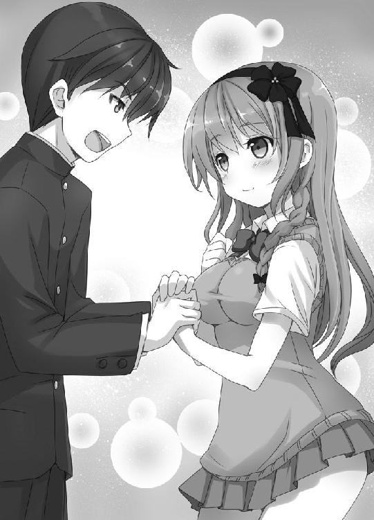
「転入って、僕がユズさんの学校行くってことですか!?」
ユズさんはにっこりと笑った。
まさか。
人生はまさかとしか言いようのない出来事が起こる。
僕は、二十一世紀の高校に通うことになった。
不可能が可能になったのも、ミロクイン家の経済力があればこそだ。ミロクイン家はユズさんの通う私立白明学園に多額の出資をしているので、少々の無理は通せるらしい。
転入の手続きは数日で終わり、初めて登校する日がやってきた。
ユズさんと並んで学校への坂道を歩く。
「クラスはユズさんと同じなんですよね？」
「はい。席も配慮してもらえるようお願いしました」
僕は漢字がわからない。ユズさんの隣で読み書きを教えてもらうことになる。
制服は間に合わなかったが、私服のガクセイフクがこの時代の学校制服に似ているらしい。しばらくは、この服で通学することになりそうだ。
平成の学校はどんなところだろう？ 絶対、刺激があるはずだ。小説のネタを拾えるかもしれない。想像するとうきうきする。
「楽しみだなあ！」
「浮かれすぎ」
ユズさんと反対側から、クールな声がした。十数年間、ほぼ毎日聞いている声だ。
クロハが並んで歩いていた。
「遊びに行くんじゃないのよ」
クロハも私服姿だ。平成テイストのオールド・スクール・スタイルだからか、ユズさんの制服とけっこう似ている。学校に通う服装として違和感がないらしい。
なぜクロハも同行しているのか？
一緒に学校へ通うことになったからだ。
──話は数日前に戻る。
ユズさんと深夜に語り合った翌朝のことだ。ダイニングのテーブルで朝ごはんを食べながら、クロハにこう告げた。
「僕、学校通うことになったぞ」
クロハはみそ汁を噴いた。
「いきなりなんなのよ。冗談よね？」
僕は事情を説明した。クロハははじめ本気にしなかったが、ユズさんもお兄さんの件を真面目に語ったため、冗談ではないと理解したようだ。
「ユズさんのお兄さんにも、ユズさんにも、お兄ちゃんにも──それぞれにつっこみどころがありすぎて、何を言えばいいかわからないわ」
「言葉はいらない。男にはやらなきゃいけないときがあるんだ！」
「ギンさん......」
クロハは食べる手を止めて、僕とユズさんの顔を苦々しく見つめていた。
「止めても無駄なようね」
「当たり前だ」
「──私も行く」
なんですと？
すると、黙って話を聞いていた先生とミルが騒ぎ出した。
「面白そうじゃないか。わたくしも学校に行こう」
「ミルもいかせろ！」
ユズさんは動揺し、
「あ、あの。さすがに先生とミルちゃんは......」
どう見ても小学生だしなあ。ミロクイン家の力をもってしても、高校に転入させるのは無理だろう。
「ミルごめんね。先生とお留守番してて。先生が何かしようとしたら、あれで刺殺していいから」
クロハはキッチンの壁に吊るされた包丁を指さした。ミルが真に受けたらどうするんだ。先生は「包丁か。ヤンデレっぽいねえ」と笑って気にしていないようだが。
「クロハも学校に行くって、本気なのか？」
「もちろん。漢字もろくに読めないお兄ちゃんをひとりにできるわけないでしょ。危ないじゃない。私の許可もとらないで勝手に決めないでよ」
「なんでクロハの許可をとらなきゃいけないんだ？ それに、ひとりじゃないよ。ユズさんいるんだし」
「ユズさんにどれだけ負担かける気なの!? お兄ちゃんの面倒みてたらストレスたまって大変よ」
「ストレスにはなりませんよ。学校に行くのが楽しみになります」
「クロハ、無理につきあわなくたっていいんだぞ。学校には僕とユズさんで行くから」
「そんなの駄目！ 絶対に駄目！」
クロハは血眼になってテーブルを叩いた。衝撃でお椀のみそ汁が波打つ。
「とにかく！ 私も一緒に行きます。できないって言うなら、お兄ちゃんの足を床に縫い付けてやるから！」
なんという剣幕！ 縫い付けるって、まさか包丁を貫通させるつもりじゃないだろうな。
圧倒された僕はうなずくしかなかった。
一年三組。
それが、僕とクロハの通うクラスだ。ユズさんもいる。
僕はクロハやユズさんよりひとつ年上だが、同じ学年にしてもらった。クロハとは双子の兄妹という設定だ。
学校に着くと、ユズさんはそのまま教室に向かい、僕とクロハは職員室に向かった。クラスの担任教師から、転入生として紹介されるらしい。
担任の教師に先導され、職員室からクラスに向かう。ふと廊下から教室の様子が見えた。
......なんだあれ？ 教室の前方に大きな板が設置されている。教師が白い棒を使って、板に直接文字を書いているようだけど......。ずいぶん原始的だな。
座っている生徒たちを見ると、昔の人の特徴なのか、どことなくのんびりした顔をしている。平成という古き良き時代を象徴しているようだ。
「クロハ、見ろ。みんな素朴な顔をしてるぞ。時代を表しているな」
「先入観じゃない？ 私たちとあまり変わらないように見えるけど」
この、ひねくれものめ。
「そうそう、お兄ちゃん、私たちが未来から来たってことは言わないようにして」
「なんで？」
「知能を疑われるからよ。下手をしたら強制的に退学させられるわ」
「差別があるのか......。平成時代はまだまだ社会が未成熟なようだし、仕方ないか」
「成熟してないのはお兄ちゃんの頭よ」
僕たちは担任教師のあとに続き、一年三組の教室に入った。
クロハが入ると、
「すげえ美人」「綺麗なひと～」「髪さらさら」
そんな声が生徒たちから漏れた。妹が褒められると自分のことのように嬉しい。
続いて僕が教室に入る。
「学ランだよ」「学ラン」「どこの学校だったんだ？」
やたらガクランという単語が飛び交った。どういう意味だろう？ 文学的とか、知的ってことかな？
まずは担任教師が僕たちを紹介するようだ。その間、教室の端で待機する。
生徒たちを眺めると、異様に目立つ女子がいた。華やかで周囲から浮いている。モノクロ画像に、一カ所だけ色がついているような感じだ。
ユズさんだ。
ユズさんは僕を見て微笑んでくれた。緊張が一気にほぐれるのがわかった。
「それでは、ふたりとも自己紹介をしてください」
担任教師が僕たちを促した。クロハが進み出ようとしたけど、待て、と手で制した。
「クロハ、ここは僕がお手本を見せよう」
「え、ちょっと」
新しい環境に馴染むには、最初の印象が大事だ。兄として、クロハに正しい自己紹介を見せてあげよう。
僕は生徒みんなの前に立った。ようし、気分が盛り上がってきたぞ。
口だけで自己紹介をしてもいいが、せっかくだし大きな板を使わせてもらおう。
僕は白い棒を使い、板の中央に名前と生年月日を書いた。
イモセ・ギン ２１８５ねん４がつ12にちうまれ
「はじめまして。イモセ・ギンです。服装は知的すぎるかもしれませんが、中身は親しみやすい人間だと思います。気軽に下の名前で呼んでください。よろしくお願いします！」
元気良く大きな声で挨拶をした。うん、ソツのない自己紹介だろう。
生徒みんなの反応はどうかな？ 教室を見渡すと──。
あれれ!? なにやらおかしい。みんなの顔に浮かんでいる感情は、転入生に対する好奇心や興味、歓迎、不歓迎どれでもない。
オオダイラ先生ふうにクラスメイトの顔を描写するなら、こうなる。
おめめ まんまる◎ おくち ぽっかり◇ おかお びっくり☆
クロハがすっとんできた。
「言った途端にこれだから！ 今が西暦何年か考えなさいよ！」
「何年ってそりゃ──あ」
しまった。２０１×年だった。
「いい？ 私がフォローするから、黙って見ててよ。一切、口だししないでよ」
言って、クロハは生徒みんなの前に立った。僕はすごすごと教室の端っこに退散する。
「えー、今のはネタです」
クロハの言葉に誰も反応しなかった。教室は静かなままだ。
「持ちネタです」
シーン。
「言えば言うほどこの人が無様になるとわかっていますが、言わせてください。今のは笑うところです」
シーン......とはしなかった。
ユズさんが声をたてて笑いはじめた。つられてクラス全体に笑顔が広がっていく。
ふう、どうやら僕が未来から来た人間とバレずに済みそうだ。ありがとう、クロハ。ありがとう、ユズさん。
──甘かった。
早くも、僕が未来の人間だと見抜かれてしまった！ クロハのフォローも効果がなかったようだ。
ホームルームが終わってすぐ「よう、未来人」と声をかけられたのだ。
うわあ、どうしよう!? クロハが、未来人とバレたら退学もあり得るとか言ってたよな。
「クロハ、大変なことになったぞ！」
事態を報告すると、クロハは肺の空気を全部吐き出すかと思うほどの長いため息のあとに、こう言った。
「それ、あだ名だから」
正直な告白をしよう。
僕は二十一世紀の高校生より、はるかに学力が高いと思っていた。僕の秀才ぶりに驚いたクラスメイトから、勉強を教えてとねだられる光景を想像したりもしていた。
僕は二百年後の人間だ。平成の人たちより進んだ教育を受けていると思うのも無理はないだろう。
結論から言うと──。
逆だった！
国語の時間。
「では、イモセ・ギン君。教科書を読んでください」
指名された僕は「はい！」と立ち上がり、教科書に目を落とす。
ある日の暮方の事である。
いきなり漢字連発！ 国語とはいえ、高校の一般的な教科書だろう!? もっとひらがなが多いと思っていた。困ったなあ。とりあえず読める部分だけ読んで切り抜けよう。
「ある......の......の......である」
クラスが静まりかえる。これで勘弁してくれるかな？
張り詰めた空気のなか、「えっと、もう一度最初から」と教師が慈悲のない宣告をした。
やばい！ ひらがなだけ読んでも許してもらえないようだ。
「ギンさん、それは『あるひのくれがたのことである』と読みます」
隣の席のユズさんが小声で教えてくれた。わ、わかりました。ユズさんありがとう！
「それはあるひのくれがたのことであるとよみます」
直後、クラス全体に笑いが弾けた。緊張して変なことを言ってしまったらしい。
む、難しい。国語は苦戦も覚悟していたけど、予想以上だ。他の科目も、英語をのぞくとやたら難解だった。なんでこんなに高度なの？
教師が笑いながらもういいと言うので、僕はしおしおと座った。
「ギンさん、うまく伝えられなくてごめんなさい」
「そんな。僕こそ迷惑ばっかりかけて申し訳ないです」
「ううん。気にしないでくださいね。楽しいですから」
ユズさんが穏やかに微笑む。
ああ。ユズさんは地上に舞い降りた天使だ。信じられないほど美しい女の子が、こんなにも優しい。反則だろう。
ユズさんの存在はできれば秘密にしておきたい。世間に知られたら未確認生物みたいな扱いになりそうだ。そんなの嫌だ。身勝手だけど、この笑顔を大勢の人間に向けてほしくない......。
ユズさんスマイルに吸い寄せられていると、後頭部にレーザー光線を照射されたような視線を感じた。振り向くと、窓際の席にいるクロハと目が合った。
うわーっ。
おっかない顔！ 例えるなら般若の面だ。よくあんな表情できるな。顔芸か。
クロハが怖い顔をしているのは理由がある。クロハだけ僕たちと席が離れてしまったのだ。僕とユズさんは廊下側で、クロハは窓側になった。担任教師が席を決めたらしい。クロハはこの配置が不満で仕方ないようだ。
授業中、クロハの殺し屋のような視線をずっと浴びていた。視線に殺傷力があるなら、僕は軽く二十回は地獄を見ているだろう。
「クロハさん、ギンさんが気になるみたいですね」
ユズさんもクロハの恐るべき視線に気づいているようだ。怖いから、目を合わせないほうがいいですよ！
しばらくして授業が終わった。何人かの生徒が席を立つ。
クロハも席を離れ、僕たちの席にずんずん近づいてくる。怒りの化身が進撃してくるみたいだ。
僕は恐ろしくなり、クロハから顔を背けた。すると、いつの間にかユズさんの机を複数の男子が囲んでいた。知り合いなのかくだけた雰囲気だ。
男子たちはユズさんを遊びに誘っているようで、「カラオケでもゲーセンでもいいし、映画でもいいよ」なんて言っている。
ユズさんはにこにこ対応しているけど、この男子たちとはどういう関係なんだろう？ 気になるな。
「映画ですか。わたし、映画館で映画を観たことないんです」
「そうなの!? だったらちょうどいい！ みんなで映画観ようよ」
男子たちがうんうんとうなずく。ひとりが携帯電話で映画情報をチェックしたらしく、いくつか候補のタイトルをあげていた。
僕は気になってつい口をはさんでしまう。
「その映画じゃ、どれくらいヒロインが巨大化するんだい？」
男子たちは一斉に僕を見た。
「僕たちの時代の娯楽映画だと、ヒロイン巨大化が定番になってるんだ。銀河系より大きくなったヒロインが、外宇宙から来た悪いヒロインと戦ったりね」
「巨大化って......何言ってるんだ、こいつ」
男子たちは僕の発言に引いているようだ。
「あはは、こんなのもやってるよ」
携帯電話をいじっていた男子が、あざけるような笑いを浮かべ、ディスプレイを皆に見せた。ピンクの衣装を着た女の子の絵が表示されている。
魔法少女どえす劇場版
これは......。ユズさんのお兄さんが大好きだったアニメだ！
「『とっととあたしにひざまずけ！ 千の悪罵をあやつるどえす、サディスティックに参上！ 抽選で千名様にどえすが罵り声で起こしてくれるドＳ目覚ましをプレゼント』だってよ」
「ターゲットがわかりやすいな」
男子たちは声を合わせて笑った。おいっ、ユズさんの前で『どえす』を笑うな！ お兄さんを笑ってるも同然だぞ！
ユズさんの顔をうかがうと......案の定、悲しげな顔をしていた。くそ、いたたまれない。
この男子たちはなんなんだ！ ユズさんの気持ちも知らずに！
僕はこらえきれず立ち上がった。がたんと椅子が倒れる。
「笑うな！ どえす、かわいいじゃないか！」
「な、なんだよ」
「君たちはなぜ笑うんだ？ 萌えを馬鹿にしているのか！」
「こういうのって笑ってやるのが礼儀だろ？ 作ってるほうもわざとだし」
「違う！」
僕は吠えた。
「作り手は、作品で誰かを救いたいと思っているはずだ。物語とはそういうものだ！ 笑うなんて失礼だ！」
「うわ、痛いやつだな」
痛いだと!? 痛がっているのはユズさんの心だ！
ユズさんの顔を見ると、不安そうに僕と男子たちを見つめている。
ユズさんに笑ってもらうにはどうすればいいのか......。うん、これしかない！
「ユズさんっ！」
僕はユズさんの前に膝を折った。姫にかしずく騎士のポーズだ！
「僕と映画を観てください！ 『どえす』の！」
お腹から声を張り上げ、ユズさんに手を差し出す。
ユズさんや男子たちは唖然とした顔で僕を見下ろしている。
「柚ちゃんがそんなの見るわけないだろ！」
「ユズちゃんだと!? ちゃん付けしたかったら僕をギンちゃんと呼べ！」
「意味わかんねえ......」
「ユズさん。映画館でどえすにいっぱい罵られましょう！ パンフレットを買って、四つん這いで舐めましょう！」
お兄さんがそうしていたように！
ユズさん、僕の手を取ってくれ！ さあさあ！
ユズさんは目をぱちぱちさせ驚いているようだった。黙って僕を見ていたが、ふっと笑うと床にしゃがみ、僕の手を両手で包み込んだ。
「ギンさん、映画、楽しみにしてますね」
「はいっ！」
やった！ ユズさんと映画鑑賞だ！
ユズさんは僕になよやかな微笑みを向けてくれた。僕がほれぼれしていると、ユズさんは僕の手を離して立ち上がった。心苦しそうな顔になり、男子たちへ頭を下げる。
「せっかく誘ってくれたのに、ごめんなさい」
男子たちはそれぞれ気まずい顔をして、
「くっそ、何が萌えだよ。馬鹿じゃねえの」
僕に向けて捨て台詞を吐き、廊下に出て行った。
僕も起き上がり、ユズさんと向き合う。ユズさんは顔いっぱいの笑みを浮かべる。
「ギンさん、ありがとうございます。兄の好きだったものをかばってくれて」
「当たり前のことをしたまでです」
「あそこまで真剣になってくれるなんて、びっくりしました。すごく声も大きかったですし......クラス中に響いてましたよ。舐めましょうとか」
「本気になったら自然と声も大きくなりますよ」
「なんだか兄みたいでした」
「もしかしたら、お兄さんが僕に乗り移ったのかも」
「まあ、ギンさん......」
ユズさんの目がうるうるしていた。瞳が熱っぽい。男子たちに『どえす』を笑われて涙目になっちゃったんだろうな。大丈夫です。もう泣く必要はないですからね。
ユズさんはひと息つくと、男子たちの出て行った廊下に顔を向けた。
「ちょっと悪いことしちゃいましたね......」
「そうですね。彼らと仲直りしたほうがいいかな」
男子たちも悪気はないのだろう。萌えの魅力に気づいてないだけなのだ。ぜひ『おにあか』を読ませてあげたい。ホミュラのパンチラやパンモロは特におすすめだ。
「ギンさん、あの、それで」
ユズさんは僕のほうへ向き直ると、照れくさそうに言った。
「映画、いつ行きますか？」
「僕とユズさん、ふたりで行くんですよね」
「──私も行きたいわ」
ぎゃ。
僕の背後から不気味な声が響いた。全身に怖気が走る。
なんという、まがまがしい気！
僕はおそるおそる振り向いた。そこには凶悪な人相をしたクロハが──。
「冗談よ」
......いなかった。クロハは落ち着いていた。拍子抜けだ。
「こんなこと言いたくないけど......。映画観るといっても、お兄ちゃんお金ないでしょ。ユズさんに迷惑かけすぎよ」
「迷惑じゃありませんよ。映画ぐらいならわたしが」
「ユズさん、お兄ちゃんを甘やかさないで」
「でも、せっかくですし」
クロハのこめかみがぴくりとした。
「誰かと映画を観る機会はなかなかないですから」
「......」
──前言を撤回しよう。クロハは落ち着いていなかった。目がみるみる吊り上がって、髪の毛も心なしか逆立ち、チベットの憤怒尊みたいな顔になる。顔芸のレベルがアップしているぞ！
「だぁめぇ！」
威圧感たっぷりの重低音ボイス。ユズさんはびくっと震えて「はい」とうなずいた。
むうっ。ユズさんと映画を観るのは無理っぽいな。残念だ......。でも、お金ないのは事実だし、仕方ないか。そのうちアルバイトでもしよう。
僕は映画鑑賞を諦めかけたが、ユズさんは諦めなかったようだ。
「じゃあ、クロハさんも一緒に行きましょう」
「え？」
憤怒尊から人面に戻るクロハ。
「ミルちゃんと先生も誘って、みんなで！」
「それじゃ、お兄ちゃんと行くより負担が増えちゃうじゃない」
「平気ですよ。絶対、行きましょうね」
ユズさんは期待に満ちた笑顔だ。
ミロクイン家はお金もちだから、映画代くらい大した出費ではないのだろうけど......。
クロハは戸惑っていたが、ユズさんが「決まりです！」と宣言し、意見を通した。
ユズさん、何から何まで本当にありがとうございます。
予想外の展開でクロハたちと一緒に映画鑑賞をすることになった。楽しそうだ。
......ん、待てよ。せっかく大勢で行くなら！
「いいことを思いつきました！ さっきの男子たちも『どえす』の映画に誘ってみませんか？」
「まあ、賑やかで楽しそうですね」
「あの人たちといっしょって......お兄ちゃん、気まずくないの？」
「なんで？」
「......お兄ちゃんのそういうところは尊敬する。本気で」
よし、みんなで映画鑑賞だ！ 彼らにも二次元美少女の良さをわかってもらうんだ！
僕は教室に戻ってきた男子たちを映画に誘った。オーケーしてくれるだろうと期待したけど、かたくなに断られてしまった。
僕が大きな声で「どえすに罵られよう！」と三回言ったら「恥ずかしいからもうやめてくれ！」と拒絶されたのだ。
昔の人の感性はよくわからないぞ！
放課後になった。
クロハが僕の席に来て言う。
「で、何かいい案は浮かんだの？」
「いい案って？」
クロハは額を押さえてうつむき「はあ」と息を吐く。
「お兄ちゃん、何しにこの学校へ来たの？」
何しにだと？ それはもちろん──。
「なんでしたっけ？」
隣にいるユズさんに助けを求めた。
「ギンさん、学校はお勉強したり、お友達と仲良くしたりするところですよ」
ですよね。
「もう！ ユズさんのお兄さんのことでしょ！」
「そうだった！」
「なんにも進んでないじゃないの」
うむ。僕たちはお兄さんの遺志を果たすためこの学校に来たのだった。だけど、クロハの言う通りまだ何もしていない。
「ユズさん。辛いかもしれませんが、確認させてください。お兄さんもこの学校に通っていて、クラスで孤立していた。孤立したきっかけは、二次元の女の子に話しかけたり、舌で舐めたりといった、ごくありふれた行動だった。間違いないですね？」
「はい」
「お兄ちゃん、それってありふれた行動なの？ 趣味の内容より、お兄さんのとっていた行動がいけなかったんじゃないの？」
「クロハ。ユズさんの前だぞ」
僕はクロハを睨んだ。亡くなった人になんてことを言うんだ！
「お兄さんのとった行動がおかしなものかどうか、試そうと思えば試せる。クラスメイトの前で、僕が同じことをすればいい」
「やめてよ！ もう恥を重ねないで。伝説になりたいの？」
「伝説！ それはいいな」
「しまった。馬鹿が喜ぶ単語だった」
「全校集会というのもありますよ」
ユズさんが素晴らしい提案をした。
「クラスどころか全校生徒の前ですか！ 学校史に名前を残せそうだ」
「ユズさん、お兄ちゃんを煽っちゃ駄目よ。その気になっちゃうから」
「え、わたし何か悪いこと言いました？」
言ってません！ 悪いのは上の妹です！
「もう、萌えを広めるんでしょ？ 何か、大勢の生徒が目にするものとかないの？」
「あったとして、どうするんだ？」
「そこで萌えの素晴らしさを説くとか」
「だったら全校集会で僕が演説しよう。僕で無理ならオオダイラ先生を呼ぶんだ。先生はかわいらしい女の子になっているから効果あるぞ」
なんせ、未来の総理大臣はかわいい系の二次元美少女だしな！
「この時代じゃ、ちみっこのプロパガンダなんて誰もまともに聞かないわよ」
「プロパ......？ また難しい言葉を使って。お兄ちゃんを馬鹿にするのもいいかげんにしろ！」
「いいかげんにしろって、それはこっちの台詞よ！」
「あの」
対峙する僕とクロハをなだめるように、ユズさんが言葉をはさんだ。
「こういうものがありますよ」
いつ用意したのか、ユズさんの手に冊子が握られていた。モノクロ用紙を製本テープでまとめ、本にしている。売りものではなく手作りのものだろう。
「これは文芸部の部誌です」
「部誌......」
ユズさん、その部誌で何をするというんですか？
翌日の放課後になる。
僕たちは入部届とあるものを持って、文芸部に向かった。
ユズさんの話では、文芸部の部誌は全クラスに配布されるという。部誌に小説を掲載できれば、生徒たちに萌えを広められるかもしれない。
僕が小説を書くぞ！ と提案したら、クロハに猛然と反対された。間違って掲載されようものなら学校中に混乱を招くという。僕の小説は平成の人たちには早すぎるんだろう。
ならば──僕は名案を思いついた。
この作戦ならうまくいくはずだ！
文芸部の部室。
引き戸を開けると、生徒がひとりだけいた。椅子に座り読書をしていたが、僕たちに気づくとこちらを向いた。メガネをかけた女の子だ。
メガネ女子が席を立つ。ひっつめ髪に芯の通った眉毛。生真面目そうな子だ。
「あら、あなた......一年の弥勒院さん？」
「お知り合いですか？」
僕が尋ねると、メガネの女子は首を振った。
「いえ。弥勒院さんは有名ですから」
そうなのか。ユズさんの容姿は人目を引くし、ミロクイン家は学校に影響力があるから、名前を知られていてもおかしくはない。
「どんなご用ですか？」
「はい。入部させてください」
ユズさんが、僕たち三人ぶんの入部届をメガネ女子に渡す。
「......わかりました。そこに座ってください。私が部長です」
僕とクロハ、ユズさん、部長の四人で、長机を囲む。
部長が、部活の内容について説明してくれるらしい。
「勘違いする方が多いので先に言っておきますが、我が部は娯楽作品ではなく文学作品を書くための場所です」
語調が強い。一語一句の発音がかっちり、はっきりしている。はじめは怒っているのかと思ったが、素でこういう喋り方のようだ。
「文章で書いた漫画、みたいな小説もありますが、俗っぽいものを書きたいなら我が部は向いていません。他をあたってください」
「僕は娯楽性より文学性の高い作品が好きです」
嘘でもなんでもない。思ったままを言う。
「それはいいですね。好きな小説はなんですか？」
好きな小説か。たくさんあるけどひとつあげるとすれば、やはり──。
「『おにいちゃんのあかちゃんうみたい』ですね」
部長が一瞬、沈黙した。
「......聞いたことのない作品ですが、それはどんな内容なんですか？」
「一言でいうと、泣ける義妹萌えです」
「いもうともえ？」
部長が顔をしかめる。
「先ほど、文学志向と言っていたようですが......」
部長の言葉に、侮蔑がこもっていた。
「『おにあか』は文学そのものですよ。正統派です」
僕は少し感情的に反論してしまう。
「お兄ちゃん」
隣に座っていたクロハが小声で話しかけてきた。
「まだこの時代は『おにあか』出てないわよ」
「あ、そうだった」
部長は僕たちを不審そうに見つめていたが、急に席を立った。壁際の戸棚から冊子を取って戻ってくる。
「部誌になります。我が部の傾向が把握できるので、参考にしてください」
部長が部誌を差し出してきた。表紙に漢字で大きく『青雲』と書かれている。
ぱらぱらと中をめくると、わかっていたことだが、ほとんど読めない。僕は読んだふりをして、クロハに部誌を渡した。
クロハが読んでいる間に話を進めよう。僕はユズさんに目配せする。ユズさんはうなずくと、バッグからあるもの──封筒を取り出した。
「ぜひ入部させてください。次の部誌にわたしも作品を提出します」
「それは構いませんけど、必ず掲載されるわけではないですよ」
部長が許可を出したものしか部誌に掲載されないらしい。
「はい。わかっています」
ユズさんが封筒を開け、中身を取り出す。紙の束だ。
僕たちの持ってきたあるものとは、先生の書いた原稿だ。ゆうべ、先生に事情を説明して借りたのだ。
先生の作品は平成時代の萌え作品に近いはずだ。クオリティは言うまでもない。部誌に掲載されれば感動する生徒が続出し、学校に萌えが広まるだろう。
もちろん、未来の現代文をそのままこの時代の人に読ませても、通じないのはわかっている。使われている日本語があまりに違うからだ。だから、先生が息抜きで書いている近代文版──平成時代の人でも無理なく読めるものを持ってきた。
「読んでください」
ユズさんが原稿を部長に手渡す。
「拝読します」
部長はメガネの位置を直して、原稿に目を落とした。
提出した原稿は先生の新作だ。実在の人物をモチーフにした、悲しい恋物語である。
未来の大作家の新作が読めるなんて幸せなことですよ。ぞんぶんに味わってください！
「あ」
ふと、ユズさんの顔が青くなった。
「どうしました？」
「間違えちゃいました」
「間違えた？」
嫌な予感がする。
「先生が好きなほうを持っていけって言ってたんです」
「好きなほう？」
「普通っぽい文章のと、ひらがなばっかりのと」
おそらく二十一世紀の近代文版と二十三世紀の現代文版のことだろう。
ええと、つまり。
ユズさんは手違いで、現代文版を持ってきたということか。
だとすると、部長がいま読んでいる原稿──家族と対立する悲しい恋物語──の出だしはこうだ......。
でたひと→イモレ・ミウ＝ぱんつまるだし
でたひと→オオライラ・ライ＝おにいにゃん
ミウ＝ぱんつまるだし「おにいにゃん おにいにゃん だいしゅき」
オオライラ「ぼくもしゅき」
ミウ＝ぱんつまるだし「りあるあにより おにいにゃんがいい」
オオライラ「うれしいにょ」
ミウ＝ぱんつまるだし「りあるあねより おにいにゃんがいい」
オオライラ「うれしいにょ」
ぱんつまるだし「おにいにゃんは さいのうあって おかねもち」
オオライラ「にょにょにょ」
ぱんつまるだし「はやくぷろぽーずして」
オオライラ「なんかいもする」
ふたりはすきすき
なのに
りあるあにと りあるあねが じゃまする！
ぷんぷんだ☆
でたひと→イモレ・キン
キン「ミウ すき」
まるだし「ミウはライにいにゃんのもの」
キン「しょっく」
キンはしんだ←プ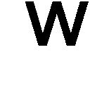
でたひと→イモレ・クロヒャ
クロヒャ「ミウ きなさい」
まるだし「や」
クロヒャ「ひゃあ」
クロヒャはしんだ ←プ
──部室から放り出された。
僕の計画は無残な失敗に終わった。
作品を部誌に掲載するどころか、塩を撒かれそうな勢いで部室から追い出されてしまった。最後に見た部長の顔は鬼気迫るものがあった。
悔しいなあ！
だが、まだ終わりではない。その日の夜、リビングにみんなが集まりくつろいでいると、夕食の後片付けを終えたユズさんがやって来て、
「わたし、自分で書きます！」
小説の執筆を宣言した。目が輝いている。
でも、小説を書くのってそんなに気楽なものじゃないですよ。
「あれは現代文だったから良さがわからなかったんですよ。近代文のものを読ませれば、きっと卒倒しますよ」
「いえ、こういうのは、やっぱり自分でやらなくちゃと思うんです」
ユズさんは両手で握りこぶしを作って言う。決意は固いようだ。
「わかりました。全身全霊をかけて協力します」
「むしろお兄ちゃんが協力しないほうがいいんじゃないの？」
クロハが冷めた口調で言う。
「部誌に載っていた作品とお兄ちゃんの好きな作品じゃ、傾向が違いすぎるわよ」
「うるさいなあ。お前は関わらなくていいよ。僕は協力する」
「そう。好きにすればいいわ」
僕とクロハが言い合っていると、
「なんのはなし？」
ミルが興味をもったようだ。僕のそばにトテトテとやってきて、顔を見上げている。
ミルに部誌の事情を話してもいいものかなあ？ 僕がためらっていると、
「みんなで協力してはどうかな」
先生があごをさすりながら言う。
僕はユズさんに視線を送り、判断を仰いだ。これはお兄さんの遺志を果たす聖戦だ。部外者の参加を僕が軽々しく許可するわけにもいかない。どうします？ ユズさん。
「ぜひ、お願いします！」
ユズさんは弾けるような笑顔でうなずいた。よし、みんなで協力だ！
話し合いの結果、先生が執筆面で協力し、ミルが挿絵を描くことになった。僕はスペシャルアドバイザーで、主な役目は応援だそうだ。内容には意見するなと先生に何度も念を押された。もちろんユズさんの意思を尊重しますよ。
「ねぇは何するの？」
「私は......」
クロハはばつが悪そうだ。あんなことを言った手前、手伝いづらいだろう。
「クロハさんは、登場人物の服装をチェックしてくれませんか」
ユズさんがクロハに救いの笑顔を向けた。
「服装？」
「はい。わたし、ファッションに詳しくないんです。たぶん、登場人物みんなにジャージ着せちゃいます。クロハさん、アドバイスしてください」
「でも、時代も違うし......」
「わたし、本当に自信ないんです」
「だったら質問。お兄ちゃんの服どう思う？」
「黒くてかっこいいです......。どこで買ったのか気になってました。街なかですか？」
「街なかって......」
クロハが苦笑した。おい、街なかで正解じゃないか。実際、僕のガクセイフクは駅前の商店街にある紳士服店『ファッションのムラタ』で買ったものだぞ。
「ギンさんとクロハさん、兄妹なのでお洋服のセンスが似てますよね」
「どこがよ!?」
「ストッキングが黒いじゃないですか。ギンさんの黒い服とお揃いですよね」
「黒ってだけじゃないの。それにこれは私のセンスじゃなく、うちのしきたりなのよ」
イモセ家では、十五歳以上の女子は黒ストをはくべしという家訓があるのだ。
「まあ、素敵なしきたりですね」
「ミルも黒ストはく。そして破る。にぃを悩殺する」
「ミルちゃんいかん！ 発想が中年オヤジだ！ ここはつるむき生あんよだろう！」
「別に素敵じゃないし、ミルには早すぎよ。それと、先生の言い方が卑猥で嫌です」
クロハはみんなにつっこんでから、ユズさんにうなずいた。
「わかったわ。協力する」
クロハにファッションのアドバイスを求めたのは、ユズさんなりの配慮だろう。蚊帳の外になりそうなクロハを救ってくれたのだ。やっぱりできた人だ。
ユズさんのお兄さん、見ていてください。僕たちは一丸となって学校を侵食します。そして、いつの日か、『どえす』の下僕だと笑って公言できる世の中にしますからね！
翌日の朝。
階段を下りると、ユズさんとクロハが、ふたりで庭に出て行くのが見えた。
庭の掃除でもするのかな？ 僕も手伝おうと思い、あとを追う。
ふたりは庭に出ると、設置されているベンチに座った。ユズさんの金髪と、クロハの黒髪が横に並ぶ。
後ろから近寄って声をかけようと思ったが、やめた。
ユズさんの横顔が見たこともないほど真剣だったのだ。近寄りがたさを感じてしまう。
「──小説の内容ですけど、血の繋がってない兄を想う、女の子の話にしたいと思うんです」
声がかすかに聞こえてくる。ユズさんの書く作品について話をしているようだ。
僕は良くないと思いながら、木の陰に身をかがめてふたりの会話を盗み聞いてしまう。
「実はわたし、兄とは血が繋がってないんです」
「そうなの!?」
クロハの驚く気配が伝わる。あ、この事情はまだ言ってなかったか。
「はい。わたしはもらわれた子なんです」
「そう......。自分のことを書くの？」
「そのつもりだったんですけど、先生に言われたんです。作品に自分を投影しすぎるのは良くないと」
「......。よくもまあ、あの人がそれを言えるわね」
「だから、わたしと兄のことをそのまま書くのはやめました」
「兄と妹の話はやめる？」
「いいえ。もらわれた妹の話ではなくて、もらわれた兄の話を書こうと思います」
クロハはしばらく黙っていた。どんな顔をしているんだろう。
「......もしかして、お兄ちゃんの生い立ちを聞いたの？」
「はい」
「そう。ミルは知らないから、言わないで」
「もちろん言いません。それで、ぜひ作品の参考に聞きたいんです。クロハさんの、ギンさんへの想いを」
僕への想い。うわあ、異様に照れるな。体がかゆくなりそうだ。
「ただのお兄ちゃんってだけよ」
クロハはそっけなく答える。
「それだけですか」
「そうよ」
「......本当に？」
「ええ」
「本当に本当に？」
「うん」
「でも、クロハさんはギンさんのことかなり気にしてますよね？」
「う......」
しばしの沈黙。やがて、根負けしたようにクロハが口を開いた。
「お兄ちゃんには、わたしがこれから言うこと内緒ね」
「約束します」
「それは......気になっちゃうわよ。あの言葉を聞いてから、お兄ちゃん、しょっちゅう落ち込んでたから」
「あの言葉？」
「昔ね、無神経な親戚が両親に言ってるのを聞いちゃったのよ。『クロハが生まれるってわかってたら、ギンをもらうことなかったのにな』って」
「まあ......」
「今になって考えると、大して悪気のある言葉じゃないんだけど。まだ小さかったし、それまで実の子供と思っていたから。お兄ちゃん、かなりショックだったみたい」
僕がもらわれた子だと発覚した、あの発言か......。親戚のおじさん、僕とクロハが眠っていると思って油断してたんだよな。
「クロハさん、責任感じてるんですか？」
「そこまでお人好しじゃないわよ。ただ、お兄ちゃんが私の見ていないところで寂しい顔してたらって思うと、気になっちゃうのよね」
クロハ......。心配かけてたんだな。ごめん。
でも、僕はもう大丈夫だよ。当時はふさぎ込んだけど、あのあと『おにあか』に出会ったからな。ホミュラの一途な愛情に、僕はすっかり癒されたんだ。『おにあか』を知るきっかけをくれたあのおじさんには、感謝しているくらいだ。
「心配しているから、ギンさんのそばにいたがるんですね」
「別に、そばにいたいなんて......」
クロハは言葉を止めた。しばらく間をおいて、
「そうね。本音を言うなら、お兄ちゃんがふらふらしないように、首輪でもつけてそばに置いておきたいかも」
首輪！ 僕はペットの犬なのか！
首輪をつけられて伏せる僕と、飼い主然としたクロハを想像してしまう。ちなみに僕は犬なので全裸だ。
「要するに、ギンさんのことが好きってことですよね？」
「え!?」
クロハが頓狂な声をあげる。僕も思わず立ち上がりそうになった。ユズさん、なんてこと言うんですか！
「どう聞いたら好きってなるのよ！」
「そういう気持ちについて書きたいんですよ。これから書く妹が、兄に対してどんな感情をもっているのか、曖昧にしたくないんです」
「そ、そう」
「好・き・な・ん・で・す・か？」
「......」
ユズさんがやたら力をこめて尋ねた。クロハは数秒ほど無言だったが、ぽつりと言う。
「好き......かも」
──世界が停止した。
頭が真っ白になりそうだ。
クロハが僕のことをそんなふうに見ていたとは......。嘘だろ!?
「わあっ。大変なこと聞きました！」
「え、ちょ、ちょっと。好きっていうのは、そういうのじゃないわよ。兄妹での好きって意味だから。私、お兄ちゃんのこと応援してるし、お兄ちゃんが楽しそうだと私も嬉しいし、お兄ちゃんのことはなんでも知ってるけど......」
「すごいアピールですね」
「違うから！」
......なーんだ。まあそりゃそうか。
もし、クロハが僕に恋愛感情を抱いていたら？ そんなこと想像できない。クロハが生まれてからずっと、僕たちは兄妹だったから。『おにあか』は好きだけど、あれは二次元だしな。現実じゃない。
でも......。現実と『おにあか』はそんなに違うものなのか？
「もう、からかわないでよ」
「からかっていませんよ？」
「ユズさんはどうだったの？ お兄さんのこと」
「クロハさんと違って、わたしがかなり兄を頼っていましたね」
「好きだった？」
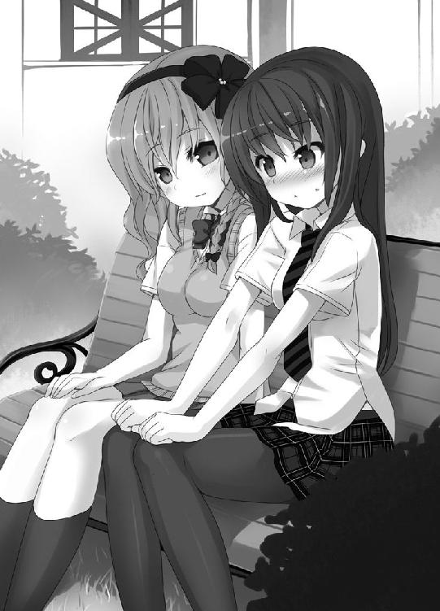
「はい。大好きでしたけど、恋愛感情ではないですよ。わたしにとっては唯一の家族という存在でした」
「そうなのね......」
クロハは答えづらいようだった。
「兄のような人、ならともかく、兄を男の人として好きにはなれません」
「......当たり前よね」
「はい」
そこでふたりの会話が止まった。妙に息が詰まる。
これ以上、盗み聞きするのはやめるか。僕は玄関に向かって足を忍ばせた。
と、背後から、声が聞こえる。
「クロハさん、良かったらストーリーも一緒に考えてください。ギンさんへの想い、たっぷり盛り込んじゃいましょう！」
「......そうね。想いを反映させるのもいいわね」
クロハの声はかすかに弾んでいた。僕への想いがどうこうなんて、ふだんなら絶対に言わないだろうにな。
クロハの言葉に、僕の胸はほんの少しざわついてしまった。
ユズさんは十日で作品を書き上げた。
タイトルは『あにマジまにあ』。僕が考えた。ユズさんのお兄さんが、好きなものに一途だったことを表現している。
さらに、このタイトルには途轍もない仕掛けがある。このアイディアをひらめいたとき、正直、自分が天才じゃないかと思った。気になる人はタイトルを逆から読んでみよう。
ストーリーはいわゆる義妹ものだ。主人公は里子に出された男の子で、義理の妹がいる。
妹の心理描写がとても丁寧──らしい。近代文で書かれているため、僕は読めないのだ。先生やクロハが言うにはひらがなやカタカナが多く、現代文に近いそうだが、読んでもさっぱり理解できなかった。
表紙や挿絵はミルが十枚ほど描いた。どの絵も密度の高い入魂作で、タッチはお兄さんが好きだった『どえす』に似せた。
僕たちはこの自信作を携え、再び文芸部に乗り込む。せっかくなので、先生とミルにも同行してもらう。
勝負だ、部長さん！
二度めとなる、文芸部の部室。
僕たちは列をつくり部室にぞろぞろと押し入った。部室には部長がいた。他に部員は見あたらない。またこの人ひとりだけか！ この部、人気ないんじゃないか？
「なんですか、あなたたちは。勝手に入ってきて！ 教師を呼びますよ！」
部長が僕たちを見て叫ぶ。失礼な言い草だな。僕たちは強盗じゃない。
「わたしにもう一度、機会をください」
ユズさんが進み出て、部長に『あにマジまにあ』の原稿を差し出す。
「部誌への掲載を希望します」
部長は顔を強張らせながらも、原稿を受け取った。
「......読むのはいいけど、これで最後にしてもらえますか？」
「はい」
ユズさんは決然とした面持ちでうなずいた。
長机をみんなで囲む。向こう側は部長ひとり。こちら側は僕たち五人だ。
部長が『あにマジまにあ』に目を落とした。メガネがきらんと光る。
今回は一ページめで激怒することはなかった。真剣な顔で読みこんでいる。
さあ、どうだ！
部長は読んでいる最中、表情が変わらなかった。どんな感想を抱いているのかまったくわからない。固唾を呑んで見守る。
落ち着かないまま一時間半ほどすぎ──部長が『あにマジまにあ』を読み終えた。
部長は顔を上げると、机の上でトントンと原稿を揃える。
「この前読まされたものよりは、はるかにまともですね」
おおっ。なかなか好感触じゃないか！
場の空気が軽くなる。ユズさんが嬉しそうに笑う。
「ただし！」
喜ぶ僕たちに水をかけるように、部長がぴしゃりと言い放った。
「きわめて低俗です」
なにっ！ 僕は色めきたってしまう。
「まず、問題はこの絵。なんですか、これは」
部長が挿絵のページを突き出してきた。
ヒロインが着替えているシーンだ。
上半身にはいろいろなものを身につけている。ニット帽をかぶり、マフラーを巻き、手袋をし、冬物の分厚いジャケットを着ている。顔以外の肌は見えない。反面、下半身はパンツひとつで、それすら脱ぎかけている。
「リアリティがありません」
「リアルだもん、節穴」
絵を描いたミルがふくれっ面で反論する。
「どこがです？ なんで下だけ先に全部脱ぐんですか」
「あ、それはわたくしの趣味だ」
先生が挙手する。
「上はガチガチの重装備で下は全脱ぎ。たまらんだろう！」
先生は板切れのような胸を張って言う。一片の迷いもない言葉だ。
「わ、訳がわかりません」
部長は先生のあまりに堂々とした態度に気圧されたようだ。動揺がうかがえる。
「絵は私の専門外ですから、百歩譲って良しとしましょう。しかし、内容そのものはくだらなすぎます」
部長の眼光が鋭くなる。
「いったいなんですか。妹の下着が見えたり、意味のない入浴シーンがあったり。弥勒院さん、こんなものが好きだったんですか」
「それは......」
ユズさんが言葉に詰まる。
「軽蔑しました」
パンチラやお風呂といった文学的シーンはユズさんの好みではない。先生が「絶対に必要」と主張したのだ。
「そういう部分は作品の枝葉にすぎないでしょう。話の本筋に注目してください」
クロハが冷静な口調で言い返した。
「本筋？」
部長が失笑する。
「もらわれた兄と、義理の妹。題材が陳腐です。だいたい、あまりにも都合良く妹が兄に心を寄せすぎている」
「都合良くですって？ じゅうぶん葛藤しているでしょう」
クロハの声が低くなった。
「そうでしょうか。私には、作者の都合で登場人物が動いているようにしか思えません」
「そんなことないわ」
「義理とはいえ兄と妹ですよ？ 作中で明言されていませんが、どう読んでもこの妹は兄に恋愛感情を抱いている。現実ではあり得ないでしょう。それが都合良くと言うんです」
「れ、恋愛感情なんて抱いてないわよ！」
「いえ。恋愛感情以外の何物でもありません」
義理の妹が兄に恋をするなんて、未来の文学では当たり前の話だぞ！
「この妹は弥勒院さんの分身でしょう。近親相姦の願望でもあるのかしら。吐き気がします。頭、平気？」
なっ......。言い方ってものがあるじゃないか！ 僕は我慢できずに立ち上がった。
「ユズさんはおかしくない！ ユズさんのほうが正しい！」
場がしんと静まる。全員の視線が僕に集まるのがわかった。
僕の勢いに部長は一瞬だけひるんだが、毅然と言い返してきた。
「この作品は内容といい絵といい、いわゆる萌えと呼ばれる系統ですね？ こんなもの、真剣に書いてくるなんてどうかしているでしょう？」
萌えというだけで馬鹿にする気か！ あの『おにあか』だって萌えなんだぞ！
「僕は『おにあか』に救われた！ ホミュラの笑顔が、ホミュラの一途さが、ホミュラのパンツがどれだけ僕の心を癒したか！」
「パ、パンツ......？ くだらないことを言うのはやめなさい」
「くだらないって言うけど、今後はこういうものが文学の主流になっていくんですよ！」
「まさか」
そのまさかなんだってば。
「そんな世の中になるものですか。大衆もそこまで堕落はしません」
「なんで堕落と言い切れるんですか！」
「こうまで下品なものを有り難がるなど、堕落そのものでしょう。はなはだ低俗です。文芸誌でも読んで、きちんとした小説にふれてください」
わからず屋め！
現在、低く見られているものが、将来も同じ扱いを受けているとは限らないのに！
先生の受け売りだけど、例をあげよう。小説は明治の頃、女子供の読むくだらないものと扱われた。学校の授業で習った歌舞伎や浮世絵も、最初は俗悪なものと言われた。
ものの評価なんて、時代が変わればあっさり変わっていくんだ！
「未来の文芸誌じゃ、全ページに美少女絵が載ってます。有名な先生が独自のパンツ観を発表していたり、絆創膏で幼女のどこを隠すか議論していたりします。二十三世紀はそうなるんです！ あなたの言う文学作品は文芸誌のどこにも載らなくなってるんですよ！」
僕は一気にまくしたてた。
「気分はＳＦ作家ですか？ なんであなたが先のことを知ったふうに語るんですか」
「それはもちろん──」
僕たちが未来の人間だから。そう言おうとしたが、やめた。この人にそれを言っても、理解するはずがない。頭のおかしな人扱いをされるだけだろう。
「──わかりました。主流になるとかならないとか、やっぱりいいです。だけど」
今後、何が文学の中心に座るか言い争っても仕方ない。
それよりも、譲れないことは......。
「この作品があなたの好みじゃないのは仕方ないです。でも、作品の表面だけを見て、ユズさんの気持ちまで馬鹿にするのは許せない！ 『あにマジまにあ』にはユズさんの、お兄さんへの愛情が詰まってるんだ！」
僕は興奮して机をドン、と叩いてしまった。
部長は腕を組み、反り返っている。あくまで尊大な態度を崩さない。
「馬鹿げています」
「ユズさんの想いを馬鹿にするな！」
ユズさんが息を呑む気配があった。
「弥勒院さんにどれだけ真摯な想いがあったとしても、その小説はとうてい文学と呼べるものではないでしょう。認めるわけにはいきません」
「なんだって......」
この人は小説の何を読んでいるんだ？ 大切な部分を見落としているんじゃないか。
「部長さん。あなたの好きな小説はなんですか？」
「森鴎外の『舞姫』です」
「未来でも親しまれています。正統派文学っぽくリメイクされて」
「リメイク？」
「人気イラストレーターのヌメジルさんが挿絵をつけました。ヒロインのエリスは銀髪にオッドアイのエロかわいいちみっこです。追加ヒロインもいてハーレム度がアップ。エリスがトヨタロウにヤキモチやきまくり。パンチラも大増量でお腹いっぱいです」
「なんとひどい......。『舞姫』をおとしめたいのですか？」
「いいえ。リメイクのおかげで、『まいひめ！』は素晴らしい作品と再評価されたんですよ」
「あり得ません。だいたい、そんな内容ではもはや『舞姫』とは言えない」
頑固な人だなあ。
「部長さん......時代が変われば文化も変わるんです。時代に合った衣を着せることで、古い作品も人気が出る。あなたはその衣だけで別物と判断してしまうんですか！」
「そんなことはありません」
「いいや、そうです。あなたは『あにマジまにあ』に秘められたユズさんの想いに目を向けようとしない。『まいひめ！』のリメイクも受けつけない。萌えという表面だけを見てくだらないと切り捨てている。表面しか見られない人間なんだ！」
僕は大声で叫び、部長に人差し指を突きつけた。
「違うと言っているでしょう！」
「違わない！ あなたには物語の本質を見る目がない！」
「......本質ですって？ あなたが言う本質とはなんですか？」
僕はありったけの気持ちをこめて、部長に言葉をたたきつける。
「作品にこめられた想い。強いて言うなら、人の心です！」
時代が変われば文化は変わっていく。言葉も変わる。でも！
人の心は変わらない！
僕はそう信じている！
僕が『おにあか』に救われたのは、あの作品には心から兄を愛する気持ちがこめられているからだ！ 『おにあか』には時代にとらわれない人の想いが宿っている！
あなたが萌えを理解できないのは、昔の人だから仕方ないのかもしれない。でも、作品の根底にある人の心は、感じ取れるはずだ。部長さん、そこに目を向けてくれ！
僕は部長に強い視線をぶつけた。無言で訴えた。わかってほしかった。
しかし。
「......中学生の主張ですか？ 何が、人の心ですか」
部長の態度は変わらなかった。くそ。どう言っても無駄か......。これが時代の壁なのか！
僕はがっくりきたが、直後、部長の堅陣がわずかに崩れた。
「パ、パンツなどと恥ずかしい言葉を平気で連発しているくせに......」
部長が赤面する。
「ヒロインがパンツを見せるからいいんじゃないですか！」
「どういう品性をしているんですか」
「なにが品性だ。気取るな！ あなたも部長なら文章に自信があるんでしょう？ 鮮烈なパンチラシーンくらい書いてみろ！ それもできないなら文学を語るな！」
「私の文章も知らないくせに！ あなたこそどうなんですか!?」
「いいでしょう。この場で書いてやりますよ！」
僕は意気込んでみんなを見た。
「決戦をすることになった！ 誰か参考にパンツを見せてくれ！ さあ早く！」
僕が叫ぶと、クロハが無言で立ち上がった。おお！ パンツを披露してくれるんだな。それでこそ僕の妹だ！
クロハは恥ずかしそうに目を伏せると、スカートをたくしあげ──たりはしなかった。
何をする気なのか、手を垂直に持ち上げていく。えっと思い見つめていると、振り上げた手を僕の頭頂部に叩きこんだ。きゃあっ、痛いっ！
「勘弁してよ、この変態！」
へ、変態は褒め言葉なんだぞ......。
──戦いは終わった。
ユズさんも、他のみんなも、これ以上ねばっても無駄と判断したようだ。
僕がヒートアップするのと反比例して、みんなは冷静になったのかもしれない。
ユズさんは迷惑をかけてすいませんと、何度も何度も部長に頭を下げていた。
悔しい。結局、部長の心を動かすことはできなかった。敗北感が胸をおおう。
部長は一言も発せず、腕組みをしている。窓の外はもう夕暮れで、夕日をバックに胸を反らす部長の姿は、小憎らしくてたまらない。
この人、名前はなんていうんだろう？
「部長さん。僕の負けです。最後にあなたの名前を聞かせてくれませんか」
「いいでしょう」
部長はうなずいて、フルネームを告げた。
「妹背久路佳です」
「イモセ？」
眉がぴくりとしてしまう。十七年間、つきあってきた苗字だからだ。
まさか、この人......。待て待て、そんな偶然あるわけないだろ。
部室にいても仕方がないので、僕たちは退出することにした。
部室を出る直前、気になったので部長の足を確認する。
細めの両足は、黒いストッキングに包まれていた。
学校からの帰り道。夕日が僕たちの影を伸ばす。
館への道をみんなで歩く。僕の前にクロハとミル、先生。横にユズさんがいる。
結果を出せなかったため、とぼとぼとした足取りになってしまう。
「ごめんなさい。結局、僕はなんの力にもなれていないですね」
「ギンさん、謝らないでください。みんなで作品を創るのとても楽しかったですよ」
僕の無力感を、ユズさんのやわらかな笑顔が救ってくれた。
「そう言ってもらえるとありがたいです。次の作戦、考えますね」
ユズさんは僕やみんなに視線を巡らせて、「はい！」と嬉しそうに微笑んだ。
「それにしても......ギンさん、やっぱり熱い人だったんですね」
部長とやりあった自分を思い出すと恥ずかしい。カッとなりすぎた。
「面目ないです」
「いいえ。すごーく嬉しかったです」
ユズさんの足取りが軽い。負け戦だったというのに、弾むような雰囲気がある。
「ふふ」
急にユズさんが声をたてて笑った。
「でも、ギンさん。申し訳ないんですけど、勘違いされてますよ」
「え？」
「『あにマジまにあ』にはわたしの兄への気持ちもこめてありますけど、どちらかというとわたしよりも......」
ユズさんがそう言ったときだ。前を歩いていたクロハがくるりと振り向いた。
クロハは眉間にしわをつくってユズさんを見つめている。
「なんでもないです」
ユズさんは言いかけた言葉を取りやめてしまった。気になるなあ。
「やっぱり、兄と妹っていいものですよね」
ユズさんは視線を夕日に向けてつぶやいた。お兄さんを思い出しているのかもしれない。
「ねえ、ギンさん」
「はい」
「わたしのお兄さんになってください」
唐突な提案だった。
「え」「ちょっと！」
僕とクロハは動揺してしまう。
「──と言ったら、なってくれますか？」
「ほ、本気ですか？」
「冗談です」
ユズさんはおかしそうに笑った。
......本当にただの冗談なんだろうか？
ユズさんの頬が赤くなっている。夕日が肌を照らしているだけじゃないだろう。
「ギンさん、この小説、宝物ボックスに大切にしまっておきますね」
ユズさんは原稿の入っているバッグをぽんと叩いた。
「ずっとあとになってから読むのも面白そうですよね。わたし、お婆ちゃんになってから読み返して、兄への気持ちを思い出します。たぶん、にやけちゃいます」
言って、ユズさんはクロハを見た。
クロハはとっさにユズさんから視線をそらした。すると、僕と目線が合う。
クロハは長い髪の毛を指に絡めて、そっぽを向いた。
＊
我輩は予てよりの私案を決行することにした。正統派を書く作家を脅迫するのである。
幾人か候補はいるものの、海外諸国にまで届く名声を有するあの男が最適だろう。
オオダイラ・ガイ。
奴が正統派を否定すれば、当世の文学に夥しい影響が出る。
脅迫を決行する際、私邸の所在が割れている点も好都合だ。容易に近付ける。
オオダイラの名は、我輩の苦い記憶を掘り起こす。
かつて、自作を余人に一読させると、嗤われた。
我輩の小説は「萌え」と呼ばれる諸要素が根こそぎ抜け落ちており、現代の文学としては歪だという。当世、衆目を集めるのはこれだと余人に提示されたものが、オオダイラの下劣な作品群だった。
我輩の労作が認められず、オオダイラの浮薄な愚作がもて囃される。
非道い世の中だ。全て、世の中が悪い。世の中を変えねばなるまい。
敵は正統派文学だ。
この正統派という呼称、名付けた人間は万死に値する。稀なほど、名が体を表していない。何を読んでも男の欲望を満たすだけの、卑しい内容である。
後学のために堪え忍んで通読した或る愚作は、主人公の男が過去に赴き、知己となった女と恋仲になるという筋書きだった。
時代も異なるというのに、そう易々と懇意になれるものか！
男女間の敷居がそこまで低いのならば、我輩にも恋人のひとりやふたり、出来る筈だ！
愚劣な妄想を垂れ流すのも大概にせよ！
万が一、そのような男が現実にいたら？
縊り殺してやる。
「ギンさん、あーんしてください」
「あーん」
ユズさんの箸がすーっと寄ってきて、僕の口に角切りステーキを入れてくれた。
肉の外側はこんがり焼けていて、中身はほどよくやわらかい。噛むと肉汁がじわっとにじみ出た。
「絶品です！」
「ギンさん、褒めすぎですよ」
学校の昼休憩。
僕とユズさんとクロハの三人は、校舎の屋上でお昼ごはんを食べるのが日課になっていた。シートを敷いて腰を下ろし、ユズさんお手製のお弁当をいただく。
「ギンさん、あーん」
ああ......。幸せだ。最高に幸せだ。幸せすぎてピンクのオーラに包まれている。
「......」
クロハがどす黒いオーラを放っているが、それを上回る幸せオーラが僕とユズさんをバリアのように守っている。
最近、ユズさんの僕に対する態度が変わった。頻繁に目が合うようになり、ユズさんから話しかけてくる回数が増えた。授業中も、気づくとユズさんが僕の横顔を見ている。
理由を考えると、思い当たることがあった。
クロハが言うには、僕は二十一世紀の常識に欠けているようなのだ。知らないうちに、おかしな行動をとっているのかもしれない。ユズさんは無言でそのことを指摘してくれているんだろう。
「ギンさん、あの......ゆうべ考えていたんですけど」
食事の最中、ユズさんが恥じらうような顔で言う。
「ギンさんは赤ちゃんができたら、どんな名前をつけたいですか？」
クロハがげほっとむせた。
「あ、わたしとギンさんの赤ちゃんって意味じゃないですよ？ いつか、ギンさんに子供ができたらって意味ですから。勘違いしないでくださいね！」
ユズさんは早口でまくしたてた。わかってますよ、もちろん。
赤ちゃんの名前か......。
「男の子は考えていませんけど、女の子はいい名前があるんです」
「なんですか？」
「カンウです」
「まあ」
「お兄ちゃん、それ、先生に元ネタ聞いたんだけど」
「乙女な名前らしいんですよ。この名前にふさわしい子になってくれたら嬉しいですね」
「髭の長いおじさん......」
クロハ、何をぶつぶつ言ってるんだ。髭のおじさんじゃなくて女の子の話だぞ？
「素敵ですね。ギンさん、はい、あーん」
「あーん」
「......」
僕とユズさんの様子を睨みつけていたクロハが、我慢できないという様子で叫んだ。
「私も作るから！」
「えっ、クロハさんも赤ちゃんをつくるんですか！」
いきなりの宣言だ！
「クロハ！ 早まりすぎだろう。誰の子なんだ？」
「妊娠したなんて言ってないでしょ！ お弁当よ、お弁当！」
「もう子供向けの食事を考えてるのか......」
「お兄ちゃんわざとでしょ！」
クロハはすくっと立ち上がると、力んで僕を指さした。
「私もお弁当作るわ。そして、お兄ちゃんに毒味させる！」
「毒味!? 味見じゃなく毒味!?」
「ギンさん、クロハさんは照れているんですよ」
「照れてなんかないわよ！」
「だったら、お毒味はわたしがしてもいいですか」
「お兄ちゃんにさせるの！」
クロハは駄々っ子みたいに腕を振り、ユズさんはたおやかに笑った。
二十一世紀での生活もひと月になろうとしていた。
ここ数週間は、みんなで『どえす』の映画を観に行ったり、クロハの作ったお弁当でお腹を壊したり、学校のテストで開校以来の低得点をたたき出したり、町内会の回覧板に小説を載せるようかけあって追い払われたり、楽しく過ごした。
時間移動が起きた原因は未だに不明だ。平成時代に永住することになるかもしれない。
ユズさんのおかげで、二十一世紀にはだいぶ馴染めた。未来に戻らなくていい、とまでは言わないけど、この時代で生きることを前向きに受け止められるくらいにはなった。
二十三世紀のことで気になるのは、僕が応募した新人賞の結果だ。ホミュラ賞もそろそろ発表だったと思う。未来に戻れないなら、せめて、賞の結果だけでも誰か教えてくれないかなあ。神様、僕の些細なわがままを聞き入れてください。
日曜日の昼下がり。
僕はクロハと一緒に、リビングでテレビを見ていた。ユズさんは食料品の買い出しに出かけており、先生は部屋にこもって小説を書いている。ミルはスケッチをしているようだ。
テレビには『どっちのどっち』というバラエティが映し出されている。
人や物などをＡとＢにわけ、支持するほうを芸能人が投票するという番組だ。投票する人数が奇数なので、必ずＡかＢかの決着がつく。二十三世紀にも似たような番組がある。
「お兄ちゃん、ちょっといい？」
番組がＣＭになったとき、クロハが髪の毛をいじりながら、何気ない口調で訊いてきた。
「Ａは暗い髪。Ｂは明るい髪。どっちを支持する？」
「番組の真似か？ それだったらＢの明るい髪だな」
暗い、と言われるとなんとなくイメージが良くない。
「......次いくわよ。Ａは口うるさい人。Ｂはおっとりした人」
「表現が偏ってるって。その言い方なら、おっとりしてるほうがいいよ」
口うるさいと言われたら、良い印象はもてないだろう。
クロハは小声で「そうよね。表現が悪いのよね」なんてつぶやいている。
「じゃあ！ Ａはストッキング、Ｂはカチューシャ」
「女装しろって言うのか？ それならどっちでもない。ガーターベルトとハイヒールだ」
「はあ!?」
そこでＣＭが終わったため、僕たちは再び番組に集中した。
三十分ほどして番組が終わると、クロハがまたぽつりと言う。
「──Ａは二十三世紀。Ｂは二十一世紀。これなら？」
僕は何も答えず、クロハに真剣な眼差しを向けた。ただの質問じゃない気がしたのだ。
「私たち、もう帰れないのかしら」
やっぱりな。クロハの顔がさっきよりずっとシリアスだ。
「お兄ちゃんはどう思ってる？ 帰りたくないの？」
「そんなことはないけど......」
「はっきりしないわね。ユズさんに『お兄さんになって』とか言われたから？」
そんなこともあったなあ。ユズさんに「兄さん」と呼ばれるところを想像する。うん、悪くない。むしろ最高だ。頬が緩む。
クロハがムッとした目になった。黒髪を手に持つと、毛束で僕の頬をぺちりと叩く。
「お兄ちゃんの妹は私よ」
「ミルもいるけど」
「そうよ。ミルもいる。お父さんとお母さんもいる」
お父さんとお母さん。
ユズさんは両親の愛情に恵まれなかったようだが、僕は違う。もらわれた子供としての負い目も、僕自身が勝手に感じていることで、両親は僕に愛情をもってくれている。
もし、向こうでも同じように時間が経過しているとしたら、行方不明になって一ヶ月近くたっている。もの凄く心配しているはずだ。
お父さんとお母さんに元気な顔を見せたい。
でも、僕たちがいなくなったら──ユズさんがひとりぼっちになってしまう。
ユズさんと離れたくない。ユズさんの笑顔、ユズさんの手料理、ユズさんの涙。全てが心の奥深くに根を張った。ユズさんのいない生活はもう想像できない。
「お兄ちゃんは作家になるんでしょ？」
「ああ。僕の絶対的な目標だ」
「なら未来に帰らないと。お兄ちゃんはこの時代じゃまともな文章を書けないのよ」
「そんなことない。勉強すれば書けるはずだ」
「ふうん。こっちに来てから覚えた漢字はあるの？」
「ある！」
「書いてみてよ」
ようし、学習の結果を見せつける機会がきた！ 伊達に学校通ってるわけじゃないぞ！
一 二 三
「どうだ！」
「やるじゃない。続きもお願い」
......。
クロハの言う通りだった。
僕は漢字がほとんどわからない。僕がこの時代で作家になるのは難しいだろう。漢字が読み書きできないんじゃ絶望的だ。
文化の違いも大きい。この時代では正統派文学のような小説は認められていない。アキハバラですら萌えの存在感が薄く、学校では二次元の美少女が好きというだけで仲間外れにされる。悲しいほど萌えに理解のない世の中だ。
かつて、僕は『おにあか』に希望をもらった。今度は、僕が自分の物語で大勢の人に希望を与えたい。その夢をかなえられる場所は、二十一世紀ではなく二十三世紀だ。
そう、それはわかっている。でも、この時代にはユズさんがいる......。
「夢を追ってよ。お兄ちゃん」
クロハがまっすぐ僕の瞳を見つめていた。訴えかけるような視線だった。
──僕の答えが決まった。
「わかったよ。帰らなきゃな。クロハ、ありがとう」
「うん」
「ユズさんを連れていけばいいだけだし」
「......ええっ!?」
それですべて解決だ。悩む必要なし！
クロハが何かを言いかけたとき、
「にぃ、ねぇ」
ミルがリビングにやって来た。手にマシュマロが載った皿を持っている。
「お絵描きしていたんじゃないのか？」
「あきた」
ミルはとととっと寄ってきて、皿をテーブルに置いた。
「みんなで食べる」
ミルがソファに座ると、
「わたくしもいいかな」
先生もリビングに姿を見せた。執筆に疲れたので休憩をとるようだ。
僕たちはみんなでテーブルを囲み、マシュマロをつまんだ。
「先生、原稿の進み具合はいかがですか？」
「順調だ。手書きもたまにはいいものだよ」
「環境が変わって、先生の創造性がより発揮されそうですね」
「ありがとう。ただね、空しくなってもいるんだ。小説を書いても、この時代では趣味の域を出ない。読者を洗脳できない。わたくしの生きる時代は二十三世紀だと痛感するよ」
先生は気落ちした顔を見せた。そろそろ元の時代に帰りたいようだ。
「ミルは帰りたいと思う？」
クロハが尋ねると、ミルはマシュマロを口に頬張りながら思案顔になる。
「かえってもいい」
ミルはまだ十歳で親が恋しいはずなのに、この時代に来てから一度も弱音を吐いていない。きっと、僕たちに心配をかけまいと気を遣っているんだ。健気な子だ。
「先生、僕たちは何が原因で時間移動したんでしょうか？」
「さあねえ。願いを聞いた神様がプレゼントしてくれたとしか思えないね」
「願い、ですか？」
「いちど小さな女の子になりたかったし、平成時代を体験したいとも思っていたからね」
「なるほど」
「まあどうせ願いがかなうなら、もっと他にかなえてほしいものがあるがね。十歳くらいの妹が欲しい。頭の中に二十人住んでいるが、直接お手々をつないでみたいからねえ」
先生がにへら～とした笑顔になる。
「......」
クロハは口を閉ざすと急に立ち上がり、ミルを連れて外に出て行こうとした。ミルはマシュマロを食べ足りないらしく、猫のように身をよじって抵抗していた。
そのとき、ぎいと玄関の開く音がした。
「ただいまで～す」
ユズさんが買い物から帰ってきたようだ。
「あら、皆さんお揃いで何してたんですか？」
ユズさんがリビングに顔を出した。手にはビニール袋を持っていて、新鮮な青野菜の匂いがする。
「おやつを食べてました」
「そうですか。今夜はナスと鶏肉のメキシカン煮にしますね」
ユズさんは夕飯の献立を告げて、キッチンに向かった。いつものように凝った夕飯を提供してくれそうだ。
僕はユズさんの背中に向かって、お礼を言おうとした。
ピピッ......ピピッ......ピピッ......ピピッ......。
突如、アラーム音が響いた。
音が大きい。すぐ近くで鳴っている。
携帯電話のアラーム機能か？ ユズさんも同じことを思ったらしく、携帯電話をポケットから取り出して確認している。戻したところを見ると、どうやら違うようだ。
目覚まし時計やタイマーの類はリビングに置かれていない。
だとすると、この音は──。
僕は慌ててまわりを見た。
先生の体がちかちかと光りだしていた。
「おお」
先生が声を漏らして立ち上がった。
続いてミルの体が点滅をはじめる。
「にぃ、ねぇ」
ミルが僕とクロハの顔をかわるがわる見ている。
僕とクロハの体も点滅を開始した。
四人の体からピピピ、ピピピとアラーム音が鳴り響く。
「お兄ちゃん、これって」
クロハが唖然とした顔つきで自分の体を見下ろしている。
そうだ。この現象は以前も起きた。
時間移動だ！
先生の言うように、神様の仕業としか思えない。前兆もなく、こっちの都合なんてお構いなしだ！
「え、え、え？」
ユズさんはどうしていいかわからないようで、おろおろしている。
ピピピピピピピピピピピ。
アラーム音の切れ目がなくなった。急かすような響きになる。
もうすぐ僕たちは姿を消すだろう。それはつまり──ユズさんとのさよならを意味する。
ちくしょう！ 突然すぎる！ ユズさんを連れていきたくても、方法がわからない。なすすべがないじゃないか！
嫌だ！ ユズさんともっと話したい。一緒に、いろいろなところに行きたい。お兄さんの遺志もかなえたい。ユズさんと別れたくない！
でも、アラーム音は容赦なく鳴り響いている......。
この瞬間に僕ができることはなんだ？ 別れが避けられないなら何をする？
「ユズさん、冷静に聞いてください！」
「は、はい」
せめて、最後の挨拶をしなきゃ！
「たぶん......これでお別れです」
「えっ......」
ユズさんの顔が凍りついた。ふぁさり、とビニール袋が床に落ちる。
「今まで、ありがとう、ございます」
まずい。泣きそうだ。でも、僕は男だから。涙はこらえる。
「......嘘ですよね？」
「嘘じゃないです......この現象は時間移動です」
「そんな！ 嘘って言ってください！」
僕も嘘だって思いたいです......。
「ギンさん、ひとりじゃないって言ってくれたじゃないですか！」
「ごめんなさい......」
僕がうなだれると同時に、ひゅんっ、と風を切るような音がした。
先生が消えた。
ユズさんはその様子を見てぎょっとした表情になる。しかし、それも一瞬だった。僕たちがいなくなると悟ったのか、顔がぐしゃりとゆがむ。ユズさん、そんな顔しないで！
ユズさんの目に涙がにじんでいく。
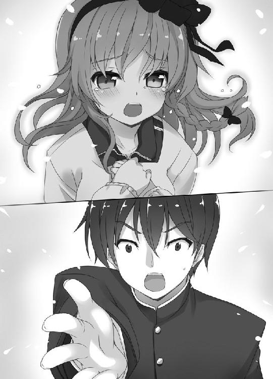
「いやあっ。いっちゃ嫌です！」
「ユズさん......」
続いて、ミルが消えた。
「いっちゃうんですね......」
ユズさんは涙ぐみながら、急ぎ足で壁に近寄った。
「ギンさんっ。わたしからメッセージです！」
ユズさんの右手の人差し指が、白い壁をつたう。
文字だ。ユズさんは壁に文字を書いている！
僕は必死にユズさんの指の動きを追った。これは、目に焼き付けなくちゃならない！
好き
二文字。それはわかった。
二文字めはひらがなの「き」だろう。だが、一文字めがわからない！ 漢字か？ ただでさえ壁に書かれた文字で読みづらいのに、漢字を使われてはお手上げだ。
「ユズさん、どうして？ 口で言ってください！」
「言ったって......いなくなっちゃうじゃないですか......」
そんな！ あんまりだ。一生気になっちゃいますよ！
「ユズさん、お願いです！ 書いた文字を教えてください！」
「秘密ですっ」
僕が懇願しようと、また口を開いたとき──。
意識がなくなった。
僕たちは二十三世紀に帰還した。
気がつくと、四人とも先生宅のリビングにいた。時間移動が発生した場所だ。
時計で日時を確認すると、時間移動した日の夜だった。二十時五分。はっきりとは覚えていないが、時間移動が起きたのはこのぐらいの時間だったと思う。
僕たちは時間移動した瞬間に戻ったようだった。
元の時代は何も変わっていなかった。先生は老紳士の姿に戻ったし、僕と妹たちが家に帰ると、両親が特に心配するそぶりもなく「おかえりなさい」と迎えてくれた。
──あっさりと二十三世紀での日常が再開された。
元の時代に戻って二日めの夜、夢を見た。
ユズさんの夢だった気がする。
僕にとって、二十一世紀のいちばんの思い出は間違いなくユズさんだ。
初めて口を利いた二十一世紀人だ。とても綺麗で、優しい女の子だった。おいしい手料理をたくさん作ってくれて、学校ではクラスメイトにもなった。
ユズさんにはもう会えない......。
でも、思い出すことはできる。
僕は自分の部屋で座り込み、現代文版『おにあか』の表紙を見つめていた。
ユズさんにそっくりな──タイテイ・ホミュラが微笑んでいる。
ややデフォルメされているが、ユズさんそのものだろう。顔や髪型が似ているのは当然として、頭につけているカチューシャがユズさんの愛用品と同じデザインだ。
ホミュラとユズさんって、何か関係あるのかなあ？
ユズさんにはたくさんお世話になったのに、ろくな恩返しもせず元の時代に戻ってしまった。申し訳ない。
あのあと、お兄さんの遺志を果たしたのだろうか。ひとりで頑張ったのだろうか。
──最後のメッセージは、なんだったのだろうか。
ユズさんのことを考えると喪失感で胸がずきずきする。情けないけど引きずりそうだ。
感傷に浸っていると、コンコンとドアがノックされた。僕は顔を上げる。
「お兄ちゃん、いい？」
クロハが部屋に入ってきた。クロハはベッドに腰かけると、真面目な顔で僕を見下ろす。話したいことがあるんだろう。
「どうした？」
「こっちに戻ってから、気になっていたことを調べたのよ」
「気になっていたこと？」
「それについてよ」
そう言ってクロハは僕の手にした現代文版『おにあか』を指さした。
「──ホミュラはユズさんよ」
クロハはいきなり断言した。推理を発表する名探偵のような口ぶりだった。
「おいおい、今さらそっくりとか言い出す気か？ とっくに気づいていたぞ」
「そうじゃないわよ。私が言いたいのは、ホミュラのモデルはユズさんだってこと」
クロハは自信たっぷりだ。何か根拠があるんだろうか？
「お兄ちゃん、これ見て」
言って、クロハは一枚の紙を僕に差し出した。インターネットの辞典サイトをプリントアウトしたもののようだ。「クロナ・グラ」という文字が読める。
「『おにあか』を書いたグラはずっとトウキョウの都心に住んでいたけど、スランプに陥って引っ越したらしいのよ。気分を変えたかったみたい」
「引っ越した？ どこに？」
「読んで」
クロハが紙の上を指さす。目で追うと「うりにだされていたオクタマのようかんにおひっこしした」とある。
あれ。オクタマの洋館って、確か......。
──ユズさんの館！
僕は目を見開いて、クロハに顔を向けた。
「ここに書いてあるオクタマの洋館って......」
「ええ。ユズさんの館じゃないかしら。きっと、グラはユズさんの写真を発見したのよ」
その瞬間、僕の脳裏で、ホミュラとユズさんのイメージがぴたりと重なった。
ホミュラのモデルがユズさんだった！ 僕にとって特別なヒロインのモデルが、これまた特別な女の子だったなんて！ こんなに嬉しいことはない！
「クロハ、いいこと教えてくれたな。ありがとう！」
「それだけじゃないわ。もうひとつ、大きな真相があるのよ」
大興奮の僕とは対照的に、クロハは冷静に言う。名探偵クロハの推理はまだ続くようだ。
「『おにあか』には下敷きになった作品があるかもしれない」
「下敷き？」
そんな説は聞いたことがない。『おにあか』はグラの完全なるオリジナルで、本人も他作品の影響は受けていないと公言していたはずだ。
「ユズさん、大切に残すって言ってたでしょう？」
クロハの言いたいことがわからない。
「ほら、みんなで創ったじゃないの」
「......？」
僕が答えられないでいると、クロハは呆れ顔になって答えを言う。
「『あにマジまにあ』よ。『おにあか』と話が似てるでしょう？」
「僕は『あにマジまにあ』を読めなかったからわからないんだが」
「だいたいのストーリーは聞いてたでしょ」
ああ、確かに。もらわれてきた兄を義理の妹が慕っているところは一緒だ。
「グラは、ユズさんの写真と一緒に『あにマジまにあ』の原稿を見つけたのよ」
またしてもクロハは言い切った。
「こっちに戻ってきて『おにあか』読んでみたけど、ストーリーが相当似てるもの。絶対『あにマジまにあ』を参考にしてるわよ」
クロハが言うと、僕もそんな気分になってくる。グラがユズさんの写真を発見しているなら、『あにマジまにあ』の原稿を見つけていてもおかしくはない。だけど......。
「それってパクリだよな？ グラがそんなことするわけないよ。まして、パクった小説が文学史に残る一作になるなんて」
「そこまで丸写しではないし、世の中、何が評価されるかなんてわからないでしょ？」
う、うーん。信じたいような、信じたくないような。
僕は微妙な気持ちになったが、クロハの次の言葉で、もやもやが吹き飛んだ。
「だとしたら、ユズさんはお兄さんの遺志を、形を変えて成し遂げたことになるわね」
はっとなった。
『おにあか』は萌えの系譜である正統派文学を生み出し、日本の文化全体に影響を与えたという。萌えの普及に大きな役割を果たしている。
時間を超えて、ユズさんはお兄さんの願いをかなえたんだ！
「ロマンのある話だな！」
「でしょう」
クロハが微笑む。
「確証はないけど。そうだと思っていたほうが素敵よね」
「たまにはいいこと言うんだな」
クロハは、たまにとは何よ、と苦笑した。
僕は猛烈に手元の『おにあか』を読みたくなった。本を開きページをめくる。
クロハは部屋から出て行くかと思ったが、
「お兄ちゃん、ホミュラが初恋の人でしょう」
ベッドの上から、そんな言葉を投げかけてきた。僕は焦ってしまう。
「なんで知ってるんだよ......」
「お兄ちゃんは自分で思っているより、ずっとわかりやすいのよ」
そ、そうなのか......。少しショックだ。
二次元の美少女に恋をするのはおかしくない。現代では自然な行為だ。ただ、妹に自分の初恋を見抜かれていたことが気恥ずかしい。
「質問があるわ。ホミュラのどっちに惹かれたか答えて。Ａは中身、Ｂは外見」
僕がうろたえていると、クロハが妙なことを訊いてきた。
中身か外見か、だって？ どちらも最高だけど、強いて選ぶなら......。
「いちばん心を惹かれたのは兄を一途に想うところだね。Ａの中身になるのかな」
「そう」
うなずくクロハは、なぜか嬉しそうだった。
「ホミュラって、ふだんはそんな姿を見せないけど、心の中では兄のことばかり考えている。やたら一緒にくっついて歩いて、兄を案じることが自分の生きがい！ って感じだろ。恋愛感情ではないって必死に否定するけど、ラストでは素直になる。あれがいいんだよ」
「う、うん」
「『あにマジまにあ』のヒロインもそういう子だったのか？」
「そこまでは似てないような」
「そうか。『あにマジまにあ』にはあの台詞はさすがにないよな？」
「あの台詞？」
「ホミュラの名台詞だよ」
「なにそれ？」
ホミュラの名台詞って言ったら、決まってるじゃないか。
僕はゆっくりと、その言葉を口にする。
「──お兄ちゃんの赤ちゃん産みたい」
『おにあか』の主人公は家族と血が繋がっていないことを悩む。義妹のホミュラはそんな主人公を見兼ねて、ラストにこの台詞を言う。子供をつくることで、主人公は血の繋がった家族を得る。また、兄と妹はパートナーとなり真の家族になる。
僕はこのシーンを読んだとき、ホミュラの愛に感動して泣いた。
「どうなんだ？ 『あにマジまにあ』にもその台詞あるのか？」
その台詞もかぶっているなら、グラが『あにマジまにあ』を参考にしたのは確実だ。
「あるわけないじゃないの！」
クロハがぼわっと紅潮した。血行いいなあ。
「だいいち『おにあか』はオーバーなのよ。お兄ちゃんの子供を産むなんて......言えるわけないじゃない！」
そんなことないぞ！ 現にホミュラは言ってるしな。二次元だけど。
「『あにマジまにあ』だと、ラストは『お兄ちゃんとずっと一緒にいたい』よ！」
「ああ......。ユズさん、お兄さんと死ぬまで一緒にいたかったんだろうなあ」
僕はしんみりしたが、クロハは憮然とした。
「頭の中、ユズさんのことでいっぱいなのね」
「しょうがないだろ」
クロハは何か言いたげな顔で、僕を見下ろしている。
「『おにあか』読むのに集中したいから、もう自分の部屋に戻ってくれ」
つい、邪魔者を追い払うような言い方をしてしまった。
クロハは怒ったみたいで、
「あ、そう。ユズさんが最後に書いた文字を教えてあげようかと思ったけど、やめた。もう絶対に教えない」
「なにっ」
僕は立ち上がり、クロハに詰め寄った。
あのときクロハもユズさんが壁に書いた文字を読んでいたのか！
「教えてくれ！ 頼む」
「嫌よ。ユズさん、お兄ちゃんが読めないとわかってて、ああ書いたんだし」
「意地悪するなよ。辞書で調べようとしたけど、字そのものを忘れたから無理なんだ」
「......お兄ちゃんのためにならないから」
「そんなこと言わないでくれ。チカンか？ チジョか？ ドウテイか？ ガクランか？ カンウか？ ニホンチョク●ンか？ なんなんだ！」
「どれでもないわよ！」
結局、クロハは教えてくれなかった。終わったことを気にするくらいなら小説を書け、と叱咤された。
終わったこと──そう言われるのは悲しいけど、クロハの言うことはもっともだった。
二十三世紀に戻って、あっという間に一ヶ月が過ぎた。
この一ヶ月の間に、僕が気にかけていたふたつの文学賞、新人賞とホミュラ賞の結果が発表された。
新人賞に応募した僕は、落選してしまった。まだまだ未熟ということだろう。悔しいけど、このくらいで気持ちは萎えない。僕はさっそく次の作品にとりかかった。受賞するまで十回でも二十回でも応募してやるぞ！
もうひとつ。ホミュラ賞の結果は──。
ひさびさに先生と会えることになった。
クロハとミルを連れて先生宅にお邪魔する。メールのやりとりはずっと続けていたが、面と向かって会うのは二十一世紀から戻った日以来だ。
風が気持ちいいという理由で、リビングではなく庭のテラス席に案内された。パラソルのあるテーブルを四人で囲む。
「先生、話したいことがあるんです」
僕たちは先生に『あにマジまにあ』が『おにあか』の元になったのではないかと伝えた。すると先生は「そういう結論になるよねえ」と笑った。同じことを考えていたという。
「『あにマジまにあ』が『おにあか』となり、後世の人が読む。いい話じゃないか。兄を想う一途な気持ちも、形を変えて相手に届いていたようだしね」
ユズさんの想いが誰に届いたっていうんだろう？ 僕はわからなかった。横にいたクロハが少しだけ頬を赤くしてうつむいたけど、クロハはわかったのかな。
「お兄ちゃん。今日はもっと重要なことあるじゃない」
「ああ、そうだったな」
クロハの言葉で思い出す。今日は先生に渡すものがある。僕やクロハではなく、ミルから渡すのがいいだろう。
僕がミルの名を呼んで促すと、
「......」
ミルは庭の隅にある植え込みをやけにじいっと見つめていた。
「ミル、どうした？」
「視線かんじた」
「視線？」
僕も植え込みを見る。特におかしなところはないようだけど......。
「ミルちゃんを視姦する不届きものがいるというのかね！」
先生の言葉を聞いたミルが、クロハに無垢な瞳を向けた。
「ねぇ、しかんってなに？」
「もう！ また先生がおかしなこと言うから！」
クロハがたまらないというふうに叫んだ。
「ミル、まだ視線を感じるか？」
「ううん」
「なら頼むよ」
僕が言うと、ミルは花束を取り出した。
「じじい、おめでとう。これからもせいぜいがんばれ」
「おお、ミルちゃんから花！ おまけでミルちゃんもつけて！」
ホミュラ賞の栄冠は先生の頭上に輝いた。
『うすび』が最有力という報道もあったが、ふたを開けると、先生の『いもうと すた☆あ』が受賞した。正道が邪道を退けたのだ。
「先生のおかけで文学は守られました。『うすび』が賞をとらなくて良かったです」
おかしな日本語や萌えのないストーリー。『うすび』はホミュラ賞にふさわしくない。
「ははは。文学は守られた、か」
先生はからっと笑った。
「ギン君、わたくしは過去に行って考えが変わったんだ。今回、『うすび』がホミュラ賞をとっていても、さほど嘆かなかっただろう」
「え？」
「二十一世紀を思い出してみたまえ」
先生は何を言いたいのだろう。
「あの時代、まだ萌えは現代ほど認められていなかった」
「そうですね」
「芽吹いてはいたがね。本格的に花開く前だ」
僕は二十一世紀の街並みや、テレビの番組を思い浮かべた。萌えの存在感は現代とは比較にならないほど小さなものだった。
「ギン君は、あの文芸部の部長をどう思った？」
先生に言われて、久しぶりに部長の顔を思い出す。
「柔軟さのかけらもない、凝り固まった考えをする人だと思いました」
「なるほどね。でも、あの時代では無理もなかろう」
「確かに時代の違いは大きいと思いますけど......。萌えを断固として認めない、偏狭な人でした」
「ふむ。では、我々もそうなってはいけないね」
......！ 僕は頬をぶたれたような気持ちになった。
「ギン君は部長に言っていたろう？ 『あなたは表面だけを見て切り捨てている』と」
そうか！
『うすび』を罵る僕は、あの部長と同じなんだ。作品の表面だけを見ている。自分の価値観に合わないものを、くだらないと断じている！
「いろいろなものがあっていいじゃないか。ものを創る。その熱意に貴賤はない。そして、作品にこめられた想いはなんであれ尊いものだよ」
「先生っ！」
そうですね！ 頭が固いと罵られる側にはなりたくない。もっと柔軟で広い気持ちをもたないといけないですよね！
感動した！ 先生、一生ついていきます！
僕は地面にひざまずいた。先生は仰ぎ見るべきお人なのだ。同じ目線なんて失礼すぎる。
先生は光っていた。もちろん、本当に光っているのではない。そう見えるという例えだ──って、あれ？ 先生がちかちか点滅しているような......？
「いやあ、この年で新しい世界に目覚めてね」
光の点滅が激しさを増していき、閃光がほとばしった。眩しい！ 僕は目を腕でかばう。
光がおさまると──先生が金髪の少女になっていた。見覚えがある。二十一世紀へ時間移動したとき、先生はずっとこの女の子の姿だった。
「せ、先生」
「なんかさあ。自由に変身できるようになっちゃった。しばらくはこの姿で過ごすよ」
常識を超越している！ 僕は呆然として、思わず立ち上がってしまった。
「わたくしは真の妹道に目覚めた。それはつまり自ら妹になることだ」
自ら妹？ それはなんと呼ぶんですか。自妹かな。今後は『自妹のオオダイラ』ですか。
「では、さっそく。兄さま、兄さま～」
先生が僕の腰にじゃれつく。
「じじい、はなれろっ」
すかさず、ミルが先生を僕から引き剥がそうとする。
「ミルちゃん、そんなに怒らないでくれ。マシュマロあげるから」
先生がにんまり笑ってミルをなだめる。ミルは「マシュマロ？」と嬉しそうな表情になった。一瞬で懐柔されたようだ。
「そういえば」
ふと、先生が何かを思い出したような顔になる。
「時間移動が起きた原因がわかったよ」
......えええっ!? なんとびっくり！ 本当ですか!?
「マシュマロだ」
「マシュマロって、あの白いお菓子のマシュマロですか？」
「ああ。マシュマロだよ。思い出してくれたまえ。時間移動が起こる直前、わたくしたちはマシュマロを食べていた」
言われてみればそうだった。二十一世紀に移動したときも、二十三世紀に戻ってきたときも、直前にマシュマロを食べていた。
「僕たちはマシュマロを食べるとおかしなことが起きる体質になったんですか？」
「いや、スペシャルなマシュマロ限定だ。あのマシュマロは知り合いの科学者が贈ってきたものでね。時間移動ができるらしい」
科学者？ それはもしかして。
「チョウマバヤシ博士ですか？」
「ああ、そうだよ」
先生と初めて会った日を思い出す。先生はチョウマバヤシ博士と電話で親しげに話していた。
「行きたいと願った時間、場所に行けるそうだ。チョウマバヤシ君は特異点やワームホールがどうとか言っていたが、わたくしは詳しくないから、そのへんの原理は良くわからん」
「じゃあ、過去の時代で食べたマシュマロって──」
「わたくしがお土産にとミルちゃんに渡したマシュマロだよ」
そっか。ミルは博士のマシュマロをバッグに入れたまま、過去に行ったんだ。
「めちゃくちゃな話です。どうしてそんな重要なことを今まで黙っていたんですか？」
クロハが非難がましく言った。
「知ったのはこっちに戻ってきてからだよ。チョウマバヤシ君からのメールをチェックするのを忘れていたんだ。マシュマロはわたくしの誕生日を祝うプレゼントらしい」
「そんな希少なものが誕生日プレゼントなんですか!?」
クロハには信じられないようだ。
「ああ、プレゼントだ。マシュマロを使って、初恋の人にでも会いにいけとメールに書かれていたけど、わたくしの初恋は三次元じゃないからねえ」
「......。その姿になったのも、もしかしてマシュマロの効果ですか？」
「六十五歳以上に起きる副作用らしい」
「六十五以上って、年金じゃないんですから」
クロハが苦笑する。
僕もつられて微笑んでいると、ミルが質問してきた。
「にぃ、また遊びいくの？」
「遊び？」
「ユズのとこ。マシュマロあればいける」
ああ！ そうか！ 博士のマシュマロを食べれば、時間移動ができる。
またユズさんに会えるんだ！
僕は喜びを爆発させようとしたが、
「もうないよ」
先生が残念そうに言う。
「作るのは大変らしい」
そんな。がっくり。めちゃくちゃがっくり......。思い切り肩を落とす。
仕方ないか。魔法のような代物だから、作り出すのにお金も時間もかかるのだろう。僕のわがままでいただくわけにもいかない。
諦めたくないけど、今は諦めよう......。
僕は、いったん湧いた希望をムリヤリ打ち消そうと、頭を軽く振った。
ユズさん......。
どさり。
不意に、庭の外れから物音がした。
なんだろう？ 僕たちは一斉に音のしたほうを見る。
人だ。庭に植えられた芝生に人が倒れている。女の子のようだ。
黒いカチューシャをつけた金髪の頭が見える。服装はスクールセーターにプリーツスカート──あれは、私立白明学園の制服じゃないか!?
心臓が跳ね上がった。
僕はその女の子に見覚えがあった。たった今、その子のことを考えていた！
「ユズさん!?」
僕はユズさんに駆け寄り、体を抱き起こした。
ユズさんは目を閉じ、「んん」と唸っている。
「ユズさん、ユズさんっ！」
体を揺すると、ユズさんが意識を取り戻した。
「......ギンさん......？」
「はい、僕です」
ユズさんのまぶたがゆっくりと開き、焦点が定まっていく。
「ギンさんっっ！」
覚醒したユズさんが僕の首もとにがしっと抱きついた。わ、わ、ちょっと、ユズさん！ 服越しに感じる体のやわらかさに、鼓動が速くなる。
「わたし、ギンさんにまた会いたいと思って......そうしたら」
ユズさんのまわりにお皿とマシュマロが散乱していた。
ユズさん、あのマシュマロを食べたんだ！ しかも、残っていたマシュマロまで持ってきてくれるとは、ユズさんグッジョブですよ！
ユズさんは感極まっているようで、みるみる涙目になった。
「もう......寂しくて死んじゃいそうでした」
「ごめんなさい。もうひとりにさせませんから」
「はい。約束ですっ！」
ユズさんが腕に力をこめた。僕たちはぎゅうと抱き合う。腕の中にユズさんのふかふかした体があって、体温を感じた。
ああ、これは現実なんだ。またユズさんと会えたんだ！
もう離すもんか！
「ちょっと！」
背後から腕を引っ張られた。クロハだ。け、けっこう力がある。
僕はあっさりユズさんを離してしまった。
「なにベタベタしてるの。健康に問題ないか確かめないと」
「そ、そうだな。ユズさん、大丈夫ですか？」
「はい」
ユズさんは立ち上がると手足を伸ばした。ユズさんの体に問題はないようだ。
「やあ、ユズ君。金髪美少女、揃い踏みだねえ」
先生が自分の髪の毛を強調するように、ツインテールを引っ張りながら、ユズさんの前に立った。
「まあ、先生。こんにちは」
「今度はわたくしたちが迎える番だね」
「迎えていただけますか？」
「もちろんだ。ユズ君はどうしたいんだね。こちらで暮らすかい？」
こちらで暮らす──二十一世紀での生活を捨て、二十三世紀の人間として生きていくということだ。そう簡単に決断できることではないだろう。
しかし、ユズさんはみじんも迷うそぶりを見せなかった。
「はい！」
「ちょ、ちょっと。気軽に言うけどいいの？ ご両親とか」
クロハは焦っているようだ。
「両親はむしろわたしがいないほうがせいせいするはずです。もちろん、育ててくれたことには感謝していますけど......」
ユズさんはいちど言葉を切り、
「こちらには、もっと大きな存在がありますから」
力強く言った。
気のせいだろうか。ユズさん、言葉の途中でちらっと僕を見たような......。
クロハはややたじろいだ様子で、「そう」と応えた。
「マシュマロがあればすぐ戻れるし、あまり深刻に考えなくてもいいんじゃないかね」
先生が気楽そうに言う。
先生ほどきちんとした大人が問題なしと判断するなら、ユズさんも心強いだろう。
「ギンさん、これからよろしくお願いしますね」
「はい。こちらこそよろしくお願いします」
ユズさんが僕の前に立ち、深々と頭を下げた。僕もおじぎを返す。なんだか照れくさくて、ぎこちない動きになってしまった。
すると、ミルが僕の服を引っ張った。
「にぃ、ユズはうちくるの？」
「もちろんそうしたい。でも、お父さんとお母さんを説得する必要があるな」
「わたくしの家で良ければ好きに使っていいよ」
先生が言うと、クロハが反対した。
「オオダイラ先生とふたりで生活するのは、さすがにユズさんがかわいそうです。うちに来てもらいましょう」
「ねぇ、ちかくで監視するの？ そのほうが安心？」
「違うわよ。私は純粋に心配なだけ！」
クロハはミルの言葉を必死に否定していた。
ユズさんはさっきから落ち着かない様子で、ちらちらと僕を見ている。
ふと気づいた。ユズさん、荷物を何も持っていないじゃないか。
「どうするにしても引っ越しの作業をしたほうが良くないですか？ ユズさんも実家から持ってくるものとかありますよね？」
「はい。ジャージとかかっぽうぎとか」
「ユズ君、わたくしから切なるお願いがある。どうか、使用済みのランドセルを譲ってくれないかね」
「ランドセルですか？ あると思うので取ってきますね」
先生は「おおっ」と顔を輝かせ、
「わたくしも行こう。お宝を一秒でも早く手に入れたい」
「僕も行って作業を手伝います」
「ミルもいく」
僕たちが次々言うと、クロハが水をさした。
「マシュマロって貴重でしょ？ 気軽に使っていいの？」
「そりゃあ、貴重だけど。でも、これだけあるんだぞ？」
僕が言うと、ユズさんがマシュマロをお皿に載せてクロハに見せた。山盛りである。
「......わかったわ」
クロハはやれやれといった態度でつぶやく。
「世紀を超えたお引っ越しね」
＊
流石に驚嘆するしかあるまい。
オオダイラが乳臭い女児に変貌し、娘が何処かから忽然と姿を現した。
端倪する事象を目の当たりにすると、成る程、奴等の話に偽りはないと思える。
オオダイラが「過去に行って考えが変わった」と云っていた。不遜の極みである。所詮、マジョリティがマイノリティを憐れんでいるに過ぎない。小面憎い奴だ。
もうひとり、時代錯誤の風体をした小僧も腹立たしかった。
女に囲まれすこぶる愉快げだ。何より、妹に好かれているふうなのが許し難い。つい、我輩の妹と比べてしまった。世の中はなんと不平等なことか。
いや、最早、奴等などどうでも善い。オオダイラを脅迫する必要もない。我輩は緊要な情報を得た。屋外で機密を放言した間抜けどもに感謝しよう。
『おにいちゃんのあかちゃんうみたい』──反吐の出る書名だ。中身も愚劣の極みだが、後世に与えた影響は甚大である。文学のみならず、文化の転換点になったといって善い。
その転換点に、違うものが生まれていたら。
先刻まで、そのような発想は持ち得なかった。だが、奴等の会話が我輩に道を示した。土台になった原稿が在るのなら、その原稿をどうにかしてしまえば善い。
我輩が日本の文化を是正する。父祖の名望を回復し、我輩の才筆を世に認めさせる。
あの白い洋菓子は確保できる。ならば、我輩の取るべき行動は決まっていよう。
宿命に従い、決起する刻がきたのだ。
さあ、反逆だ！
僕たちは再び、二十一世紀のユズさんの館へと移動した。
ユズさんはまず、両親にあてた手紙を書いた。先生の提案で「長い旅に出る」という内容にしたようだ。人生は終わらない旅ってことですか？ 先生は詩人だなあ。
続いてユズさんの部屋に行き、引っ越しの作業を手伝う。
荷物のまとめはすぐ終わった。ユズさんはあまり物にこだわりがないらしく、キャリーケースひとつに服や小物などがおさまった。
「あとは......これですね」
ユズさんはクローゼットの奥から、赤い鞄を取り出した。
「先生、はい、ランドセルです」
「おおおおおおおおおお！」
先生は狂喜し、ランドセルを背負って部屋の中をぐるぐると歩き回った。飛行機みたいに両手を広げている。中身まで子供になったようで、ちょっとかわいかった。
「次はミルちゃんの番だ。ランドセルを背負ってくれたまえ」
「やだ、じゃまくさい」
「そこをなんとか！ ランドセルが邪魔なら、かわりに服を脱いでもいいから！」
先生はミルに両手を合わせ、拝み倒している。ここまで必死な先生も珍しい。
「ミル、先生の作品づくりに協力できるかもしれない。背負いなさい」
「......にぃにめんじて」
ミルがランドセルを背負う。小学生用に作られた鞄のためか、妙にしっくりきている。
その姿を見た先生は、目を血走らせて口をぱくぱくさせた。
「き、き、き、き、記念撮影だ！ ユズ君、カメラはないかね？」
「兄のものがあったと思います。持ってきますね」
ユズさんが部屋から出て行く。少しして戻ってきたユズさんは、黒くていかついカメラを手に持っていた。ブタさんごっこのときに使用したポラロイドカメラだそうだ。
先生がミルを撮影すると、すぐにカメラから写真が出てきた。先生はさっと手に取る。
「はあああ......たまらん......わたくし、どうにかなりそぉ......」
先生は写真に頬ずりをすると、机の上にあるペンを持った。カレンダーと時計を確認しながら、写真の余白に何かを書き込んでいる。
２０１×／６／１７ ＰＭ１５‥３３ おにいちゃん（からだはおんなのこ）さつえい
「ミルちゃんが初めての体験をした日だ。甘酸っぱいねえ。記念に書き書きしておこう」
「まったく......。もう何も言いたくないわ」
クロハは呆れた様子で先生を睨んでいたが、表情を変えると部屋の隅に向かった。行き先を見ると、床に銀色の箱が置かれている。ユズさんの宝物入れだ。
クロハはユズさんに断りを入れると、箱のフタを開け中身を確認した。
「クロハ、真剣に何を見てるんだ？」
「ユズさんの写真と『あにマジまにあ』の原稿よ。このふたつは『おにあか』にとって必要なものでしょ。グラにはちゃんと『おにあか』を書いてもらいたいから」
クロハの言葉にユズさんが反応する。
「あの、『おにあか』って何でしたっけ？ 以前ギンさんも言っていたような」
「正しくは『おにいちゃんのあかちゃんうみたい』といって──」
クロハがそこまで言うと、ユズさんが突如大きな声を出した。
「クロハさん、もうそこまで意思表示してるんですか！」
「え......？ そうじゃないわよ。小説よ、小説。小説のタイトル！」
「まあ、そうなんですね。焦っちゃいました」
ユズさんはなぜか一安心した様子だった。
さて、準備も済んだことだし、そろそろ戻ろうかな。
「ミル、マシュマロもらえるか？」
ミルは「うん」とうなずき、バッグからマシュマロを取り出す。
僕はミルからマシュマロを受け取り、食べようとした。
──ん？
不意に、背後の廊下から視線を感じた。
周囲を見ると、全員、僕の前方にいる。じゃあ今の視線は誰のものだ？
振り返ると、誰もいない。無人の廊下があるだけだ。
僕たち以外に人はいないから、気のせいだろう。
「にぃ、どうしたの？」
「なんでもないよ」
僕はマシュマロをぽいっと口に放り込んだ。
僕たちは二十三世紀に戻った。気づくと、先生宅のリビングにいた。
体が時間移動に慣れたようで、ほとんど気絶はしなくなった。人間は順応する生き物だ。
しかし、ユズさんは短時間に時間移動を三回も行ったせいか、疲れているようだ。
見兼ねた先生がソファに座ってくつろぐようすすめた。全員、腰を下ろす。
ユズさんの様子が心配だったけど、僕を見ると元気に笑ってくれた。
「わたし、これからはギンさんと同じ時代で生きていくんですね」
「ええ。二十一世紀にはないものがたくさんありますよ。例えば──先生、ユズさんに『おにあか』読んでもらいたいんですけど、お借りしてもよろしいですか？」
「いいよ。持ってこよう」
言って、先生がリビングから出て行った。書斎から本を取ってきてくれるんだろう。
「『おにあか』にホミュラというヒロインがいるんですけどね。ユズさん、彼女の絵を見たらびっくりしますよ」
「どうしてですか？」
「見てのお楽しみです」
「お兄ちゃんがとっても入れ込んだ女の子よね」
「まあ......。それは見ておかないと。ギンさんのタイプがわかるんですよね？」
そういうことになるのかな？ ホミュラは見た目ユズさんそっくりで、中身は、少し口やかましくて素直じゃない女の子です。
「ぎゃ──────────────────────っ」
わわわわっ!?
前触れもなく、廊下の向こうから絶叫が聞こえた。先生の声だろうか？
直後、どたどたどたっと床を駆ける音が響き、先生がリビングに転がり込んできた。
「み、見たまえ！」
先生は動転した様子でソファに座ると、一冊の本を掲げた。
本の表紙には、ユズさん似の女性が描かれている。『おにあか』かと思ったが、違った。絵のタッチがだいぶシンプルだ。そっけないとも言う。
本のタイトルは──『星辰』？ 読めない。
先生がページをめくり、中身を僕たちに見せた。
星の群れは煌めき、光を地上に注いでいた。
私は胸の疼きを堪えて、立ち尽くすしかなかった。
風はびゅうびゅうと吹いていたけれど、寒くはなかった。頬を刺す無遠慮な風が疎ましいだけだった。
「まったく読めませんが......近代文学ですか、これ？」
「『おにあか』のかわりにこの本があったんだ。知らない小説だ」
「『おにあか』はあったんですか？」
「ない」
「じじいがもうろくした」
「『おにあか』だけではなく、本棚の大半が別の本に変わっていた。漢字まじりの書名が多かった」
それはまた奇妙な。僕は原因を考えた。
「僕たちが過去に行っている間に、誰かが本棚を総取っ替えしたんでしょうか？ 近代文学の出版業者が盛大なお節介をしたとか」
けっこう自信のある推察だったが、クロハがあっさりと否定した。
「そんなわけないじゃない」
「じゃあなんだよ？」
「それは......」
さすがのクロハも即答できなかった。
だが、少しすると思い当たることがあったらしく、顔つきが険しくなった。
「先生、確認ですけど......。過去から戻ったら、いきなり本の内容が変わっていたんですよね？ 心あたりがないんですよね？」
クロハが言うと先生はうなずいた。クロハは数秒ほど沈黙して、
「ある考えが浮かんだんですが......まさか、そんなことが......」
「クロハ君も、そこに行き着いたかね」
先生とクロハが目を合わせる。
「でも......。あり得るんですか？」
「こういう事態に直面する小説は古今東西たくさんあるよ」
んんん？ クロハと先生だけがわかりあっているぞ。こういう事態ってなんですか？
「外を見るのがわたくしは怖いね」
クロハは先生の言葉を聞くと、ふらりと立ち上がった。顔が青ざめている。
「外を見てきます！」
クロハは言い放ち、スカートをひるがえしてリビングから出て行く。玄関に向かったようだ。ずいぶん慌てた様子だけど、どうしたんだ？
疑問に思っていると、玄関からクロハの声が響いた。
「お兄ちゃん！ 来てっ！」
空気を切り裂くような叫びだった。クロハのこんな声は滅多に聞かない。
......胸騒ぎがする。
僕は弾けるように立ち上がり、大急ぎで玄関に向かう。
玄関まで行くと、クロハがドアを開け外を指さしていた。
「どうしたんだ？」
「見てよ、あれ！」
僕はクロハに促されるまま、先生の家をとび出した。
すると──。
「薬」「本」「美容室」
漢字......だよな？
街の看板に漢字が出現していた。
ひとつやふたつではない。街中の看板にだ！
な、なんだよこれ......!?
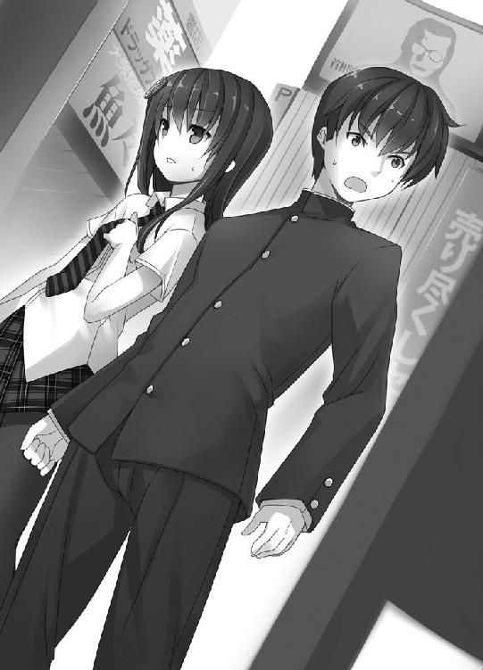
目を疑ってしまう。
──すっかり、街が変貌していた。
街のいたるところに見られた美少女の絵が、全て消えていた。
ロータリー近くに設置されている政府の大看板が目に入る。二次元総理ニャモちゃんのイラストが、メガネをかけたおじさんの写真に入れ替わっていた。看板の下にある電光掲示板には「皆様と共に生きる民由党」と表示されている。
愕然としていると、目の前の道路を『粗大ゴミ収集車』と書かれた車が通過していく。その荷台に知っている顔があった。『魔法少女どえす』だ。過去のアキハバラで見た等身大の立像だ。ゴミと読めたけど、もしかしてゴミ扱いされている？ 五百億円の文化財が!?
......何も言えず立ち尽くす。
僕の知らない世界がそこにあった。
いったい、どうなってるんだ？
混乱しきった頭をなんとか動かして、目に映るものを把握する。
建物の形は変わっていない。道路もそのままのようだ。一変したのは文字で、看板や標識に漢字が出現している。それと、萌え的な装飾が見当たらない。まるで平成の街だ。
「にぃ、なにこれ？」
みんなも外に出てきた。
「僕たち、移動する時代を間違えたのかな」
「いや、間違っていないね。ここは２２０２年だよ」
先生が携帯電話のディスプレイを確認しながら、僕の横に並んだ。
「２２０２年なら、なぜ街に漢字があふれているんですか？」
先生は沈痛な顔つきで言う。
「ギン君の疑問はもっともだ。わたくしの本棚や街の様子から判断すると......」
「文化が変わってしまった可能性が高いわ」
先生の言葉をクロハが引き継いだ。
文化が変わっただって!?
「──なるほど」
とりあえず僕はうなずいた。
僕たちは時間移動を経験しているんだ。今さら何が起きても不思議じゃない。そりゃ、ちょっとはびっくりするけどね！
「お兄ちゃん、なるほどって言うけど、どういうことかわかってるの？」
「......？」
「お兄ちゃんは作家になるのが夢でしょ？」
「ああ、そうだぞ」
「言葉や文化が変わってしまったら......」
クロハはそれ以上続けなかった。唇をきつく閉じ、僕から顔を背ける。
僕なりにクロハの伝えたいことを考える。言葉や文化が変化したわけだから──。
ああああ！
もしかして正統派文学が存在しない!? つまり僕の作家デビューが不可能になった!?
「クロハ、それって......」
クロハに愕然とした視線を向けると、
「お兄ちゃん、待って。結論はきちんと調べてから出さないと。先生、ネットを使わせてもらっていいですか？」
「ああ、いいよ。わたくしも一緒に調べよう」
クロハと先生が家の中に入っていく。そのあとをミルが追った。
「あの、ギンさん......。よくわからないんですけど、何か大変なことでも起きたんですか？」
事態を理解していないユズさんと、僕が外に残された。
クロハは「待って」と言っていたけど、答えはもう見えてるじゃないか......。
僕はへなへなと地べたに座り込んだ。
目の前に変わり果てた二十三世紀の街が広がっている。
二十一世紀に移動したときは、元の世界に戻って作家を目指そうと思った。でも、二十三世紀の世界そのものが変わってしまったら、どうすればいいんだ？
僕は『おにあか』のような正統派文学を書きたくて小説家を目指してきた。夢はかなえられないってことか!? 独創的なパンチラを書いても、世の中に受け入れられない？
......そんなのってないだろう！
「ギンさん、大丈夫ですか？ ギンさん！」
へたりこんだ僕をユズさんが心配そうに覗き込む。
「ユズさん......僕の大好きなものと、夢が、なくなってしまったかもしれません......」
「大好きなものと夢、ですか？」
「はい......」
それ以上、言葉が出ない。ごめんなさい、うまく話せません。
ユズさんは僕のことを黙って見つめていたが、いつもの微笑みを浮かべると「失礼します」と言って僕の隣に腰を下ろした。
「ギンさん、わたし、口が上手じゃないので」
ユズさんは僕の手をそっと握った。ぬくもりが伝わってくる。あたたかい。
肩と肩が触れあっているし、ふだんなら胸が高鳴る状況だけど、今は違った。ユズさんに優しく包まれるような感覚があって、気持ちが安らいだ。
ユズさん、ありがとう。甘えさせてもらいます。
僕たちは手を握りあった。
僕とユズさんは並んで座り、ぼうっと街を眺めた。
けっこうな時間がたち、そろそろ先生の家に入ろうと思ったときだ。
「あの～、非常事態なんですけど！」
頭上から非難がましい声が響いた。
目の前に二本の足があった。黒いストッキングを着用した、すっとした脚線の足だ。顔を上げると、ぶすっとした顔のクロハが僕たちを見下ろしていた。
「謎が解けたから。リビングに来て」
全員でリビングに集まった。五人でテーブルを囲む。
クロハが情報をネットで調べて、何かをつかんだらしい。この状況について説明をするという。名探偵クロハふたたび、か。
「文化が変わった理由について、私と先生であたりをつけたわ」
「もうわかったのか？ 早いな」
「ええ。いつかこういうことが起きるかもって、頭の隅にあったから。本当に起きるとは思っていなかったけど」
クロハは言葉に力をこめた。
「結論から言うわ。『おにあか』が生まれなかったために日本の文化が変わったのよ」
......。先生は「うむ」とうなずいたものの、僕やミル、ユズさんは「？」という表情だ。
「ねぇ、ぜんぜんわかんない」
ミルが口をとがらせる。同感なので「僕もだ」と言う。
「順序を追って考えて。お兄ちゃん、『おにあか』はいつ発表された、どういう作品？」
「え？ ......発表されたのは２０６０年。どういう作品って言われると......義妹もの」
「もうちょっと特徴をあげてよ。それまでの小説よりひらがなやカタカナが多用された文体だったとか、美少女を主体にした、萌えの流れを汲む作品だったとか」
そうだけど......。そんな当たり前のこと言われてもな。
「考えてみて。ひらがなやカタカナによる書き言葉や、美少女を主体とした萌え。それって、変わってしまう前の現代文化よね？」
「言われてみればそうだな」
「現代文化は『おにあか』が形づくったと言っても、言い過ぎじゃないのよ」
文化を形づくった......。どういうことか僕なりに考える。
「えーと、要するにだ。『おにあか』があったから現代文から漢字が消えて、総理大臣が二次元の美少女になったってこと？」
「端的に言えばそうね」
「じゃあその『おにあか』が生まれないってことは」
「文化もがらりと変わるはずよ」
うーん。クロハの言うことも理解はできるけど......。
「『おにあか』がないだけで、歴史はこんなに変わっちゃうものかな？ ホミュラは最高にかわいいけど、そこまでの影響力はないだろう？」
「『おにあか』だけならね。『おにあか』は歴史の流れに落とされた一滴の雫でしかない。でも、『おにあか』の遺伝子は世の中に拡散していった。一が二になり、二が四になり、四が八になり......。日本全体に影響を及ぼしたのよ」
クロハの言葉を映像でイメージする。黒塗りの日本地図に水滴がひとつ落ち、日本をピンクに塗り替えていく。
「もちろん、一年や二年ではそこまでの影響はないわ。でも、百年以上たっていたらどう？」
「......一が二どころか一億くらいにまで増えているかもしれない」
なんだかスケールの大きな話だ。
すると、先生が一冊の本を取り出した。『星辰』だ。
「『おにあか』のかわりにグラはこの『星辰』という作品を書いたようだ。歴史的な作品になっている。変わってしまったこの世界は『星辰』が大きな影響を及ぼしたようだね」
「その本、どんな内容なんですか？」
「パンチラも入浴シーンも一切なし。それと、比較的漢字がよく使われているね」
なるほど。『おにあか』とは完全に別物だ。
「正統派文学っぽく言うなら、もともとの世界は『おにあか』ルート、変わってしまった世界は『星辰』ルートだ。メインヒロインも変更するんじゃないかね。例えば、クロハ君からユズ君になったりね」
クロハは「は？」と眉をしかめ、ユズさんは「まあ」と微妙に嬉しそうな顔をした。
「それを言うならクロハルートとユズさんルートじゃないですか？」
僕が言うと、ミルが不満そうに言う。
「ミルのルートは？」
「ミルちゃんはオオダイラお兄ちゃんルートだよ。なんと、わたくしがヒロインなんだ」
クロハは苦い顔になり、「またくだらないことを」と首を左右に振った。
「でも、ルートという表現はわかりやすいと思います。アルファベットのＹのように、ルートが枝分かれしてしまった。分岐点になるのが、２０６０年。『おにあか』と『星辰』、どちらが生まれたかで未来が分かれた──お兄ちゃん、ここまで大丈夫？」
「うん。わかったよ」
「じゃあ、次。どうして『おにあか』が生まれなかったんだと思う？」
「編集者が書かせてくれなかったとか？」
「ギン君、リアルなことを言ったつもりかもしれないが、間違いだね。２０６０年当時、グラはすでに大物作家だ。編集なんて言いなりだろう。やりたい放題じゃないのかね」
クロハが先生を冷ややかに見据えて言う。
「きっと、大物作家の先生はやりたい放題なんでしょうね」
「クロハ君、わたくしは出版社に対しては非常に紳士的だよ？ せいぜい、手土産に健康飲料水を要求するくらいだ。女子小学生が入ったプールの水とかね」
「......。先生は小学校の校庭に骨をうずめたらいかがですか。永住するという例えではなく、人骨として埋まって下さい」
クロハは視線を先生から僕に移し、
「で、お兄ちゃん。どうして『おにあか』が生まれなかったんだと思う？」
......わからない。
僕の様子を見たクロハは、「ヒントはこの表紙ね」と言い、『星辰』を掲げた。『星辰 黒名蔵』と漢字が印刷されており、金髪の女性が描かれている。
さっきも思ったけど、この女の人、ユズさんっぽいよな......。
「あの......その表紙の人。わたしに似てますよね」
「ええ。グラは『星辰』を書いたときも、ユズさんの写真を見つけたようね。表紙の絵に起用しているわ」
「ユズさんの写真がよっぽど鮮烈だったんだろう。その気持ちはよくわかるな」
「もう、ギンさんったら......」
「そんなことより！ どうしてグラはユズさんの写真を見つけたのに『おにあか』を書かなかったのか、それを考えてよ」
「気分じゃなかったとか？」
「気分を言い出したらきりがないわ。もうちょっと論理的にお願い。私は、写真は見つけたけど、肝心なものがなかったんだと思う」
肝心なものがない......？
「だから、書かなかったというより書けなかった。着想の元がなかったから」
ああ、なるほど。クロハの言いたいことがわかった。
「『あにマジまにあ』の原稿がなかったってことか？」
「ええ」
「なんでなかったんだろう？」
「箱ごとなくなっていたら、写真も見つけられなかったはず。写真は見つけたようだから、原稿だけなかったんじゃないかしら」
「箱はあったけど、原稿はなかったってことか」
「そのことから考えると──盗まれたのよ」
全員の視線がクロハに集まる。盗まれたとは、物騒な話だな！
「箱の中から原稿が歩いて脱出するわけもないでしょう？ そう考えるのが自然よね」
「ごめんなさい。わたしが海苔の箱になんてしまっていたせいで......」
あれれ、防犯対策のしっかりした箱じゃなかったんですか？
「ユズさんは悪くないですよ。もし盗まれたんだとしたら、犯人は何者だろう？ ユズさんのストーカーとか？」
「それならむしろ原稿より写真のほうを盗むと思うわ」
確かに。クロハの言う通りだ。
僕たちは沈黙した。盗まれたとすると、犯人の動機があまりにも謎だ。『あにマジまにあ』の原稿は『おにあか』の土台になったとはいえ、金銭的な価値はない。どこにも発表されていないからだ。盗む理由がわからない。
「あの、わたしは良くわからないんですけど、変わった世界を元には戻せないんですか？」
「......戻せるわよ」
クロハの言葉に思わず腰が浮いた。名探偵ぶる前に、それを早く言いなさい！
「先生、あれを」
クロハが促すと先生はうなずき、懐から写真を取り出してテーブルに置く。
過去で撮影した、ミルがランドセルを背負っている写真だ。
クロハの細い指が写真の余白を指す。
２０１×／６／１７ ＰＭ１５‥３３
「このときまでは原稿が箱の中にあると確認しているわ。直前に戻って対策を考えればいいのよ」
「対策ってなにするんだ？」
頭の良いクロハはすでに何か考えているのかと思ったが、
「とにかく対策よ！」
考えていないようだ。
「お兄ちゃん、元の世界のほうがいいでしょ？」
「そりゃね」
変貌した世界には『おにあか』も正統派文学もない。日本語も大きく変わってしまった。僕にとっては、過去と未来をいっぺんに奪われたようなものだ。
「お兄ちゃんが笑えない世界なんて、絶対嫌だもの。過去に行って元に戻すわ」
クロハはきっぱりと言った。
......ジーンときた。世の中にどれだけ妹をもつ兄がいるかわからないけど、僕は確実に幸せな兄だろう。ありがとう、クロハ！
「クロハ君が世界を元に戻したい理由は、それだけではないだろう？ ネットで結婚に関する法律を確認していたしな」
「あれは......法律全般をチェックしていただけです！」
「ギン君、ちょっといいかね」
先生が僕のそばまで来て耳打ちをした。
「民法の一部が変わっていてね。義理の兄と妹で結婚ができなくなったんだ」
「そこ！ こそこそしない！」
クロハが色をなして叫んだ。
「あのときのクロハ君、冷静にしつつも、顔に動揺がにじみ出ていて見ものだったねえ」
「う、うるさいです！」
「なんのはなし？ にぃと結婚できなくなったこと？」
「そうそう、ギン君と結婚できなく......ん？」
先生があれっという顔になった。クロハも驚いているようだ。
僕もひっかかるものがあった。ミルは僕を実の兄と思っているはずだ。血の繋がった兄妹なら、はじめから結婚できない。「できなくなった」という言い方はおかしい。
と、いうことは。
「ミル......知ってたのか？」
「うん。にぃは本当のにぃじゃない」
やっぱり！ ミルにバレていたんだ！
僕とクロハは動揺したが、ミルは平然とした顔で言う。
「ミルはにぃと結婚する。法律を元に戻す」
結婚って......。ミル、良くわからずに言ってるみたいだ。おままごと感覚なんだろう。微笑ましいけど、十歳にもなって僕と結婚する発言は幼稚すぎないかな？
「結婚して害虫からにぃをまもる」
「まあ、ミルちゃん。害虫って誰のことですか？」
ユズさんがミルに微笑みかける。いつもの温和な笑顔だけど、わずかに険があるように見えたのは気のせいだろうか。
「ミルちゃんがギン君と結婚だなんて、世界中が祝福してもわたくしは許さないよ！ わたくしはミルちゃんのため、地球人類を敵にまわす覚悟だってある。褒めて」
「じじいはだまれ」
先生は僕とミルの結婚には断固反対のようだ。だとすると、
「先生は法律が元に戻らないほうがいいんですか？ 変わったあとの法律だと、僕とミルは結婚できないようですし」
「いいや、わたくしも法律は元に戻したい。わたくしの作品は義理の妹と結婚するラストも多かったからね」
先生の言葉を聞いたクロハが呆れたそぶりで言う。
「多いというか、ひとつ残らずそのパターンじゃないですか」
「そういうクロハ君だって、結婚するラストを狙っているんだろう？」
「狙ってません！」
......結婚するラストってなんのことだ？
クロハ、ミル、先生は世界を元に戻すため過去に行くつもりのようだ。あとは......。
「ユズさん、僕たちはまた二十一世紀に行きます。ユズさんも来てくれますよね？」
「ギンさん、それ、本気で言ってるんですか？」
ユズさんが拗ねるような顔になった。
「何が起きるかわからないし、一応、意思を確認しなきゃいけないかなって」
「一緒に行くに決まってるじゃないですか！ 次にそんなこと言ったら怒ります！」
す、すいませんっ！
「賛成五、反対〇でいいわね」
クロハの言葉に、みんながうなずいた。
全員の意思はひとつだ。文化を取り戻す！ そのために、再び二十一世紀に飛ぶ。
さっきの落ち込みが嘘みたいにわくわくする。いてもたってもいられない！
「よし、出陣しようか！」
僕は叫んで、すくっと立ち上がった。
「もう。お兄ちゃんはこうと決めたら即行動よね」
そうだよ。悪いか！ みんなだって、さっさと二十一世紀に行く気分だろう？
「ミル、マシュマロを出しなさい！」
「おー」
ミルがバッグからマシュマロを取り出して、みんなに配った。
僕たちは一斉にマシュマロを食べる。すぐに時間移動が起こるはずだ。
「私たちはこれで五回めね。さすがに慣れたわ」
「そうだね。だが、念のため、バラバラにならないようミルちゃんにつかまろうか」
先生が提案する。一回めの時間移動のときに先生だけはぐれたから、用心しているのかもしれない。
「さわるな」
「仕方ないねえ。じゃあギン君で」
先生は大事そうにランドセルを背負うと、僕の右腕をかき抱いた。ツインテールの毛束が腕に当たってくすぐったい。
「ミルも」
ミルが僕のそばに寄ってきて、僕の左腕にぎゅっと抱きついた。僕のひじがミルの胸に当たる。見事にぺたんこだった。
「わたしはここです」
ユズさんは立ち上がると、僕の後ろから抱きついた。やわらかいものがふたつ、背中に当たってふにゃっと潰れた。でででで、でっかい！ 興奮して頭に血が上りそうだ。
「ねぇも、はやく」
「私はいいわ」
「ねぇがはぐれたら悲しい」
「......仕方ないわね」
クロハはためらっていたが、僕の正面に来ると腰に手をまわしてきた。至近距離で頬を寄せ合う。吐息がほっぺたに当たり、こそばゆかった。
「みんなに合わせてるだけだから」
クロハ......そう言うわりに、お前がいちばん力入ってるぞ？ そんなにぎゅーっとつかまるな。く、苦しいって。
ふう。前後左右をみんなに塞がれてしまった。感触がやわらかいからまだいいけど、身動きがとれなくて窮屈だ。
「ギン君、四方を妹に囲まれたな。羨ましい男だ」
「先生とユズさんも妹なんですか？」
「わたし、お兄さんになってって言いましたもんね」
「真の妹道は自らが妹になることだって言ったはずだよ、兄さま」
そうか。僕はみんなのお兄ちゃんなんだ。だったら、僕が妹たちを導くぞ！
僕は移動先──写真に書かれた日付と、ユズさんの館を思い浮かべた。
「旅行に行くみたいですね。わたし、大勢で旅行に行ったことないので楽しみです」
「せっかくだし、二十一世紀のリゾートでも行きたいねえ」
「ミルも遊びたい」
「いいな。海とかプールはどうだろう？ 僕もたまには泳ぐぞ」
「ちょっと、変なこと考えないで。移動に影響したらどうするのよ！ 私たちは目的をもって過去に行くんだから。忘れないでよ」
やがて、全員の体からピピ、ピピとアラーム音が鳴りはじめ、点滅がはじまった。
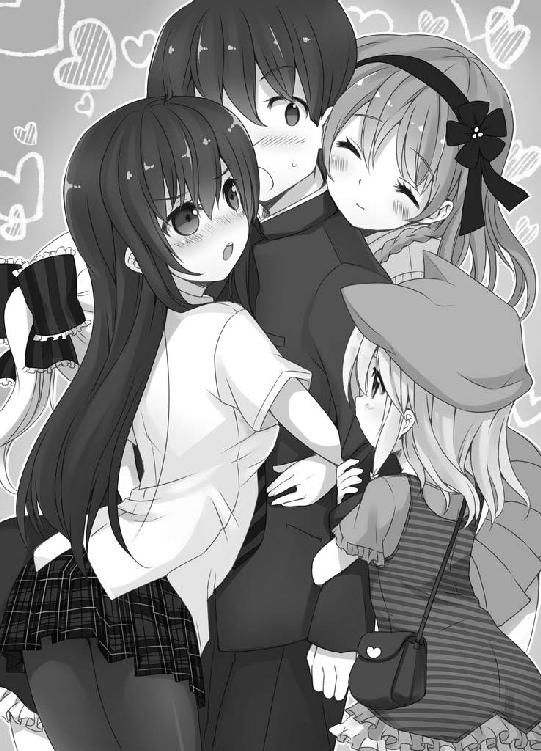
僕たちはまた時を超え二十一世紀に行く。一度めは訳もわからず飛ばされた。二度めはユズさんの引っ越しを手伝うという軽い理由だった。でも、今度は違う。大きな使命をもち、自分たちの意思で飛ぶ。
日常を取り戻すため非日常の世界──二十一世紀へ！
気持ちがたかぶる！
「先生、不思議ですね！ こうやって、現代と過去を行ったり来たりするなんて」
「そうだね。だが、人間ははるか昔より時を飛び超えているじゃないか」
え？ タイムマシンがそんな昔からあったとは聞いたことがない。僕が訝しむと、先生は楽しそうに片目をつぶった。
「物語だよ、ギン君。真の物語は時代なんて簡単に超えてゆく」
真の物語──！
先生の言う通りだ。優れた物語は何世紀にもわたって親しまれている。日本文学でいうなら『げんじものがたり』や『なんそうさとみはっけんでん』、僕の愛する『おにいちゃんのあかちゃんうみたい』。これらの名作は時代を超えて人の心をつかんでいる。
「わたくし、いいこと言った！ ミルちゃんごほうびのチュウして」
「やだ。なんかうつりそう」
「こんないたいけな少女から何がうつるというのかね」
「加齢臭じゃないですか」
「クロハ君、わたくしの姿をよく見なさい。匂うとしたら、かぐわしいランドセルの香りしかないだろう！」
「幼いユズさんの汗と体臭がしみこんだランドセルですよね」
「ギンさん、恥ずかしいです......」
「お兄ちゃん、先生の影響受けてる!?」
もちろん先生の影響は受けてるよ。尊敬しているからな。
先生の文学は、先人の偉大な作品と同じく、何百年と読み継がれるだろう。僕もいつか、時代を超越して読まれる物語を書きたい。大勢の人に感動してもらいたい。
そのためには、何を書けばいいんだろう？
......あ。いいものがある。題材として、ちょうどいい！
「僕はこの体験をいずれ小説として書くぞ！」
別の時代を行ったり来たりして。それだけでも、楽しめるものになりそうだ。
「面白そうですね。できあがったらわたしに読ませてください」
「お兄ちゃんの書く文章、昔の人にはハードル高いわよ。私たちでも頭を抱えるから」
「にぃの文は選ばれし民のもの」
「ギン君は孤高のアーティストだからねえ」
みんな、褒めてくれてありがとう。照れるなあ。えへへ。
「わたしが読むのは無理なんですか？ 残念です」
二十三世紀人の僕が書いた小説を、二十一世紀人のユズさんが読む──実現したら素晴らしいことだろう。でも、現代文と近代文の違いはあまりに大きい。文章を目で追うことはできても、内容を理解するのは難しいはずだ。
「やっぱり、そう簡単に物語は時代を超えられないのかなあ」
僕が嘆くと、クロハが微笑みながら、ちょっと意味深そうに言う。
「そんなことないわ。お兄ちゃんの妹は漢字が読める。書くこともできる」
どういう意味だろう。僕の文章が通じないなら、誰かが通じる文章に直すってこと？
それってつまり──。
翻訳？
やがてアラーム音が激しくなり、時間移動が起きた。
体が消える直前、こんな言葉を聞いた気がする。
「物語は時代を超えるから。頑張ろう、お兄ちゃん」
あとがき
はじめまして。かじいたかしと申します。ノベルジャパン大賞（現・ＨＪ文庫大賞）の銀賞という過分な賞をいただき、こうしてデビューすることができました。なんだか夢のようですが、夢じゃないんですよね。うん。
さて、皆さんが手にとって下さっている『僕の妹は漢字が読める』ですが、投稿時のタイトルは『妹は漢字が読める』でした。
このタイトルを友人に伝えたときのことです。
「漢字がようやく読めるようになった、超ロリな妹の話？ それとも、訳ありで漢字を読めない妹の話？ どっちにしても、兄貴が妹をニヤニヤ見守ってる絵が浮かぶなあ。気持ち悪い」
......。
そういう印象になるのか！ と驚きましたね。内容を知っている作者としては意外でした。超ロリ妹や訳あり妹をニヤニヤ見守るお兄ちゃん......。書くのにかなりの勇気と覚悟と誠意が必要ですね。う、うーん。
新人らしく謝辞に参ります。編集部の皆様、担当のＨ様、このような機会を与えて下さり、本当にありがとうございます。ＨＪ文庫に貢献できるよう頑張ります。
素晴らしいイラストを描いて下さった皆村春樹様。なぜあんなにも僕のイメージ通りなのか不思議で仕方ありません。ありがとうございます。
その他関係者の皆様。おかげさまで本を出すことができました。ありがとうございます。
いつも相談にのってくれる友人Ｙさんや、家族、友人、知人にもありがとうを。どうにかここまでこぎつけました。
そして、この本を手にとって下さった読者のあなた。あなたに最大級の感謝を！ 次巻もありますので、ぜひよろしくお願いします。
では！
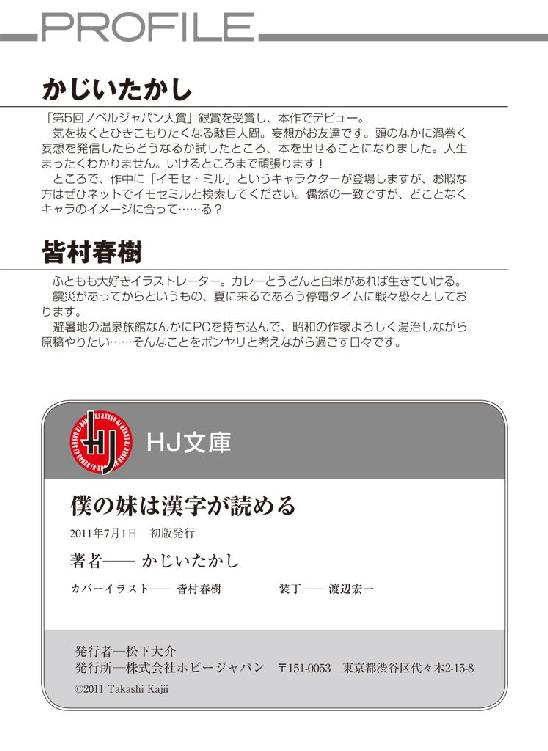